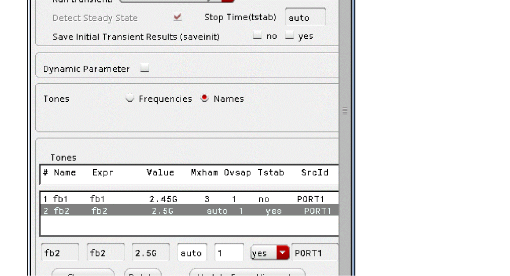
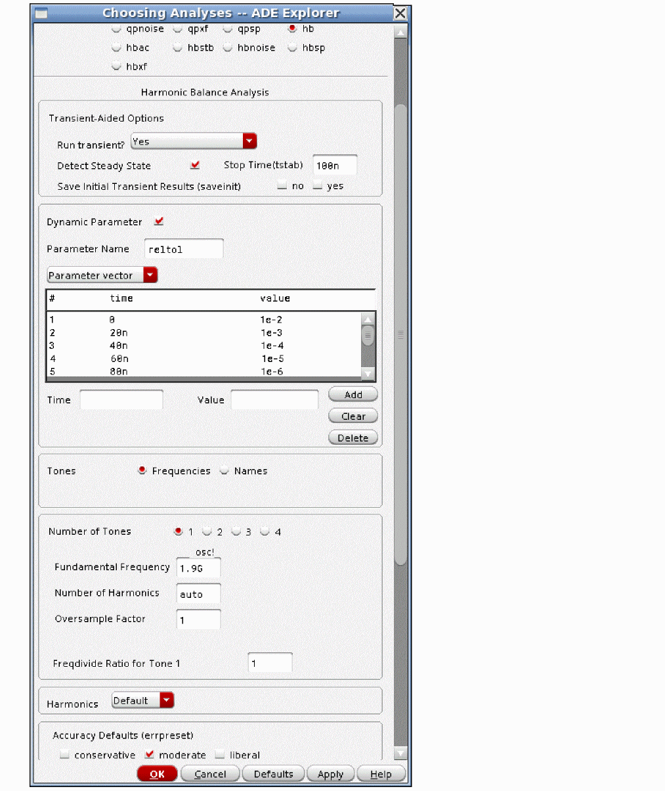
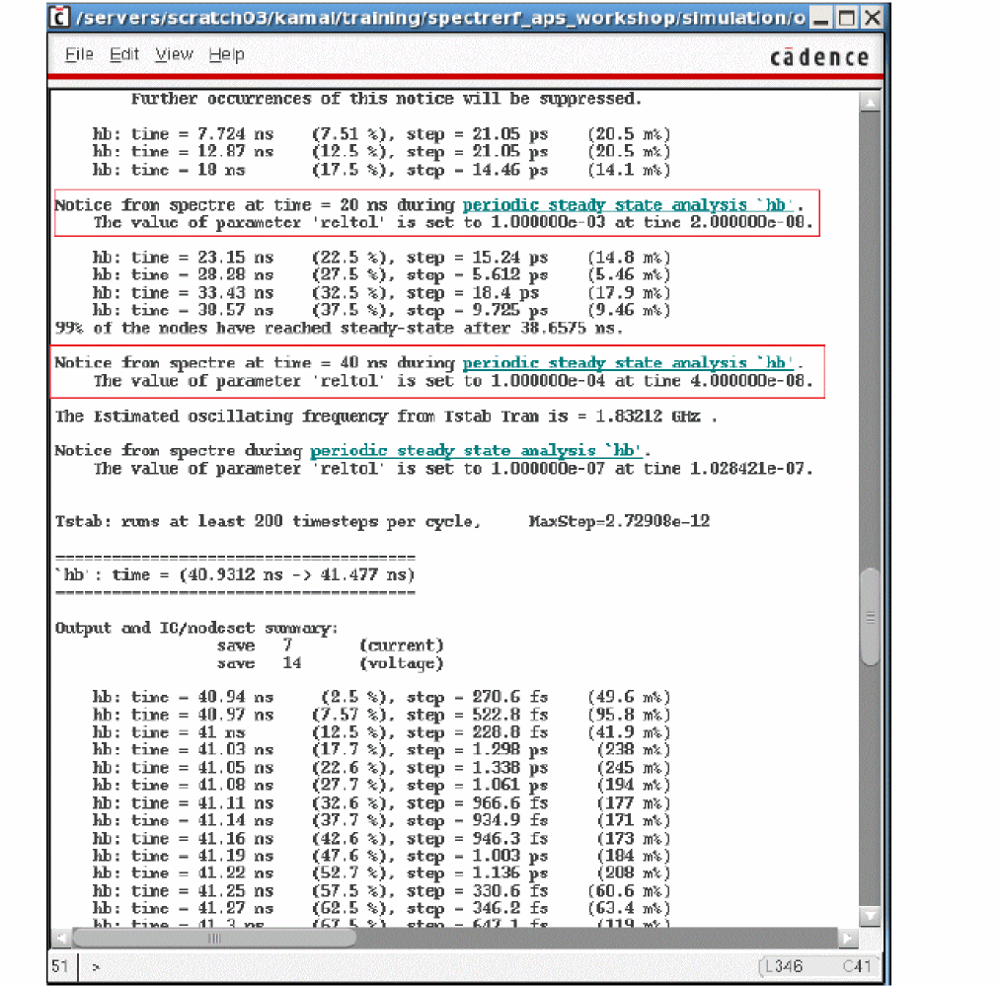
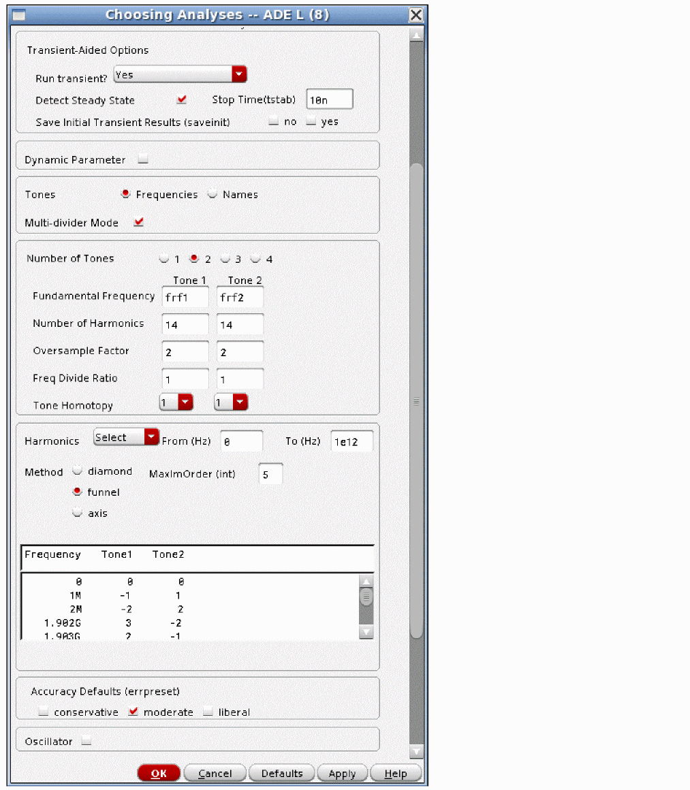
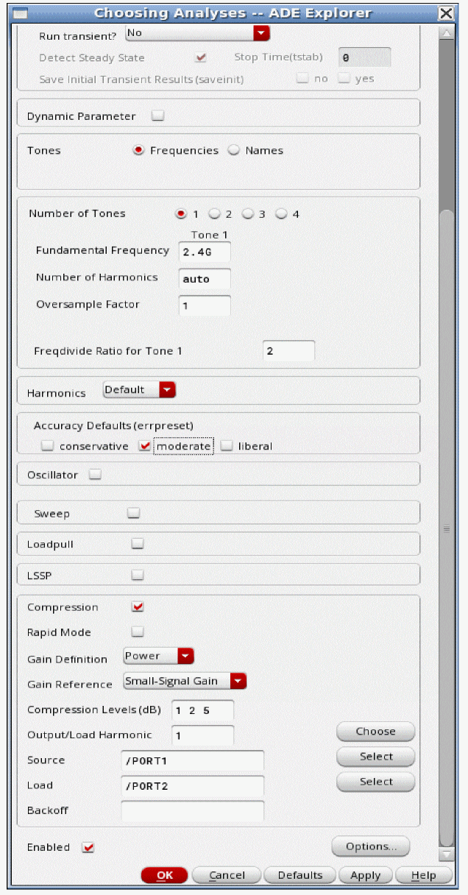
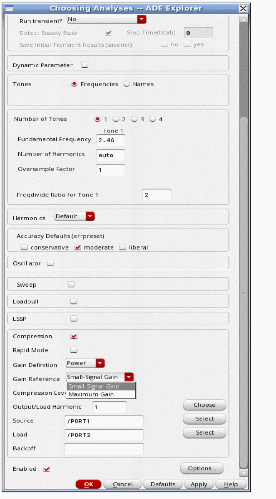

3
Frequency Domain Analyses: Harmonic Balance
Overview of Simulation Capabilities
SpectreRF offers two different modes; Spectre and APS. Spectre uses traditional simulation techniques. APS makes the CMOS models more efficient and allows multi-threading for the device current evaluation. In addition, APS adds full parallel solving of all the matrices, thus speeding up the simulation even more. There is no loss in accuracy because there is no change in the actual equations that are simulated or in the options that control the accuracy of the simulation. These choices are available and are implemented for harmonic balance and periodic steady state simulations. Both large-signal harmonic balance and small-signal hbac, hbsp, and hbnoise analyses have the Spectre and APS implementations.
Large-Signal Harmonic Balance Overview
Harmonic balance is a large-signal analysis that solves in the frequency domain. It calculates the harmonics and mixing products of one or more inputs to the circuit. It takes into account all the large-signal effects in the circuit. Applications include measuring the harmonic content of a single input, calculating the large-signal IP3 of a power amplifier (with 2 input frequencies), and measuring the large-signal IP3 and IP2 of a transmit mixer (with 2 IF tones and an LO input). Harmonic balance can also provide a large-signal solution to the small-signal hbac, hbsp, and hbnoise analyses. More information on small-signal analyses is provided later in the chapter.
Harmonic balance is chosen for circuits that have near-sinusoidal signals and do not have high speed transitions. Although harmonic balance may work with circuits that have rapid transitions by setting lots of harmonics, it is likely that shooting (available in pss) will run faster. For LC oscillators and especially crystal oscillators, harmonic balance should be used. For ring oscillators, it is likely that shooting pss will be faster and more accurate. However, harmonic balance can be used on very nonlinear circuits including circuits with multiple frequency dividers.
The implementations of harmonic balance in the ADE Explorer/Assembler Choosing Analyses form differ somewhat. The Choosing Analyses form has three choices that have harmonic balance (hb) as a choice: hb, pss with the engine set to harmonic balance (hb), and qpss with the engine set to harmonic balance.
In hb and qpss when harmonic balance (hb) is selected as the engine, the harmonics of only the inputs and the mixing products are calculated. In pss, when harmonic balance is selected as the engine, all the harmonics of the inputs are calculated, even if the power in those harmonics is zero. For example, if there is an input at 2GHz and another at 2.1GHz, the harmonics of 100MHz are calculated. Note that in order to calculate through the fifth harmonic of the input at 2.1GHz, 105 harmonics need to be calculated. For this reason, pss is usually used for a single input frequency, and qpss or hb is usually used for multiple input frequencies.
The hb analysis does not require any distinction. It always calculates the harmonics of the inputs, and if multiple inputs are present, it also calculates the mixing frequencies. Also, the hb analysis has an auto mode where all you do is provide the input frequency. Everything else is automatic. Oscillator tuning mode is available where you specify a target frequency and a parameter to be varied, and then hb will tune the oscillator to that frequency. Usually, this is followed by a noise analysis, and this capability allows Monte Carlo simulations where the oscillator is tuned to the frequency, and the noise is measured at that frequency. In addition, hb has a mode where the gain compression is automatically determined. Using this capability speeds up compression analysis in Monte Carlo analyses. Multiple frequency dividers are supported with settable divide ratios for each signal path. This chapter focuses on the hb selection in the ADE Explorer Choosing Analyses form.
Harmonic Balance provides a solution in the frequency domain. Things that have direct frequency domain representations like capacitors, transmission lines, or S-parameter descriptions go directly into the frequency domain solution. Devices and other nonlinearities need to be evaluated in the time domain, with the ifft, and fft used to translate between the domains. This is an iterative process. Each successive iteration produces a more accurate solution. In other words, an exact solution is never attained. The iterations continue until the answer is “close enough”. Close enough is set by choosing an accuracy default in the Choosing Analyses form. Liberal, moderate, and conservative accuracy levels are provided. Choose the appropriate accuracy level based on your requirement. If you are calculating very small amplitude harmonics, you might need to choose conservative.
Example
Consider a behavioral low noise amplifier shown below:
The LNA is a behavioral LNA from rfLib. The properties list is shown below. Note that the gain is 20 dB, and the amplifier is only slightly nonlinear.
The input port (the source on the left side in the above schematic) has the properties shown below.
In general, give the signals names in the Frequency name property. In the example above, it is RF for the first frequency, and RF2 for the second. Giving names is required if you use the list of signals in the circuit in the harmonic balance Choosing Analyses form instead of specifying the frequencies. The frequency is set to a variable name called frf and the amplitude in dBm is set to the variable name prf. Setting variables in these properties makes it easy to change the frequency or amplitude without needing to change the schematic. The variable frf is set to 2.4G and the variable prf is set to -30 under Design Variables in the Setup pane of ADE Explorer, as shown below.
ADE Explorer is used to set up the different analyses by clicking on the Analysis - Choose menu, clicking on Click to add analysis text located under Analyses in the Setup pane, or by clicking the ChooseAnalysis icon ( ) located at the upper-right corner of the ADE Explorer window.
When you select Analysis-Choose, the Choosing Analyses form appears. At the top of the form, select the hb (harmonic balance) radio button.
In the Choosing Analyses form, the frequencies, the number of harmonics, oversample factor and accuracy are set. Oversample factor will be discussed later in the chapter. The Fundamental Frequency field can either have a number like 2.4G, or it can have the variable name that is used to set the frequency in the input port as shown above.
Run transient has three settings: Decide automatically, Yes, and No. Decide automatically means that the transient will be run before the harmonic balance algorithm. In this mode, the transient starts with a small number of periods of the fundamental frequency for Tone1 as the transient stop time. As the transient analysis runs, the waveform is analyzed to see if steady-state has been reached. When steady-state is reached, a Fourier transform is performed on the last cycle of the transient waveform, and this is used as the starting point of the harmonic balance iterations. If steady-state has not been reached in this small number of periods, the transient is extended in time up to a maximum of 250 periods for a driven circuit, and 500 periods for an oscillator. If steady-state has not been detected in the last period of the transient, other continuation methods will be tried in an attempt to achieve convergence.
Decide automatically also sets the number of harmonics in the Choosing Analyses form for Tone1 to auto by default. The transient analysis waveforms at all the nodes in the circuit are analyzed, and based on the waveforms, the number of harmonics that are needed for the simulation to be accurate is set by the simulator. This can be manually overridden by setting a number of harmonics manually.
Setting Run transient to Yes requires you to enter a stop time for the initial transient analysis in the Stop Time (tstab) field. This mode allows the steady-state detection to be selected or not. If it is selected, whenever steady-state is detected in the transient analysis, it will terminate, run the fft, and start the harmonic balance iterations. In this mode, the stop time for the transient analysis cannot be automatically extended. If Detect Steady State is deselected, the transient will run to the specified stop time without checking for steady-state.
When Run transient is set to Yes, and the Detect Steady State is deselected, the number of harmonics field remains blank by default. You can either enter the text auto, or you can manually set the number of harmonics by specifying a number. When auto is set, the transient analysis waveforms at all the nodes in the circuit are analyzed, and based on the waveforms, the number of harmonics that are needed for the simulation to be accurate is set by the simulator.
Setting Run transient to No causes the harmonic balance algorithm to start from the DC solution without transient assist.
Dynamic parameters are supported in tstab just like in the transient analysis. Typically, only reltol is changed over the tstab interval with loose (large) values of reltol at the beginning of tstab and then tighter values toward the end to improve convergence. A single option is supported in the GUI. Note that the default values are already fairly loose in the tstab interval by default.
When you have completed the Choosing Analyses form, click OK and run the simulation. You can run the simulation by selecting Simulation - Netlist and Run, or by selecting the green arrow on the right side of the ADE Explorer window.
When the simulation completes, select Results - Direct Plot - Main Form. The Direct Plot Form is displayed.
At any time, the next thing that needs to be accomplished is shown at the bottom of the form.
The Analysis section at the top of the form displays the list of different analyses that were run. In this example, only hb results are available.
The Function selection is where the type of data that is desired to be plotted is selected. Power is shown above.
To get the power based on the voltage in a net, Net(specify R) is chosen from the drop-down list.
Next select Magnitude, which gives power in Watts, dB10, which gives dB with respect to 1 Watt, or dBm, which gives dB with respect to 1 milliwatt. from the Modifier section. dBm is shown above.
The next step is to select the net in the schematic. The waveform window appears with the selected result in it. Both the input and output nets are shown. A marker has been positioned at the first harmonic in both traces. Note that the input level is almost exactly -30 as set in ADE Explorer, and the output is 20dB larger than the input as set in the behavioral LNA. The harmonics at about -350dBm represent the numerical noise floor of the simulation.
Harmonic Balance Solves For Cosines
In order to be compatible with other harmonic balance simulators, the convention in Spectre harmonic balance is to solve for cosines rather than sines. From a practical point of view, this means that the phase that is solved in harmonic balance is 90 degrees different compared to shooting. It also means that in order to get a zero degree solution in harmonic balance, the phase of the input source needs to be 90 degrees.
The circuit below is used for this example.

In the properties list for the input port, the phase has been set to 90 degrees. This is the phase of the sinusoid that is produced by the input source.
The signal in1, which is the input to the behavioral amplifier has been plotted below. The power in dBm is unaffected by the phase, but you can see that the phase that is calculated by Spectre is zero degrees. In harmonic balance, if you want a reference phase of zero, you must set the phase on the input source to 90 degrees.
Setting Harmonics Automatically
Harmonic balance can now set harmonics automatically for the signal that causes the most distortion. This is recommended in the general case. To enable this, select Decide automatically or Yes for the Run Transient selection in the Transient-Aided Options. This single action will cause a transient analysis to be run until steady-state is detected, and then from the transient analysis, the number of harmonics for Tone1 (when Frequencies is selected) or for the tone that has tstab enabled (when Names is selected).
Setting Harmonics Manually
Consider an amplifier with a single input. In this case the input and its harmonics need to be calculated. In order to get the correct solution, both positive and negative frequencies need to be calculated. With harmonic balance, input is required as to how many harmonics should be calculated. If you set 3 harmonics, then -3. -2, -1, 0, 1, 2, and 3 times the input frequency needs to be calculated, as shown below.
The number of harmonics to be calculated is (2*number of harmonics) +1. The runtime and memory consumption are proportional to the number of unknowns (all the harmonics at all the nodes) that need to be solved. In this case, seven unknowns need to be solved at each node.
In order to make sure that you have enough harmonics, start with an estimate based on the power level and the harmonic content of the input to the circuit. If the input is sinusoidal at fairly low power, try about 3 harmonics. If the amplitude is large, try about 7 harmonics. Next, run the simulation and plot the results. Position a marker at the desired measurement. Now increase the number of harmonics, and re-run the simulation and re-plot the waveform. If the measurement did not change, then the original estimate was enough, and you might be able to reduce the number of harmonics. Use the smallest number of harmonics that are required in order to have a minimum runtime.
If the input is a pulse wave at high amplitude, start at about 15 harmonics and an oversample factor of 4. Oversample factor will be discussed later in the chapter. The simulator takes the fft of the input signal, and uses multiple sources in series with the values and phases set to the value calculated by the fft.
When square waves are present in the circuit, the minimum number of harmonics should be set to the period of the square wave divided by the risetime of the square wave. Very sharp edges require many harmonics in order to be accurate in the time domain. If the time-domain waveform is less important than the frequency domain content, then a smaller number of harmonics can be specified along with an oversample factor of 4 or 8. For more information, refer to the Oversample Factor.
When piecewise linear waveforms are used as power supplies to ramp the power up at time zero, specify only two points. The first point should have time set to zero, and the voltage should be about 80% to 90% of the actual supply voltage. The second point should have the time set equal to about half the period of the operating frequency, and the voltage set to the supply voltage. If the simulation time exceeds the second time in the PWL setup, it will retain that value for the rest of the simulation. More importantly, for any SpectreRF large-signal analysis, the system does not become periodic until after the last timepoint in the PWL file. If you put a point at 1 second and the power supply voltage, the system will need to be simulated for one full second in the tstab interval using the transient algorithm before the harmonic balance simulation can run. This can take a long time.
When periodic piecewise linear inputs are used, the more non-sinusoidal the waveform is, the more harmonics you need and also the higher oversample factor needs to be in order to accurately simulate the system. Oversample factor is explained in the following section. Start with an estimate of how many harmonics would be required to represent the waveform in the frequency domain, and then re-run the simulation with more harmonics to see if things changed. Oversample factor also needs to be increased. Sine waves need oversample=1. Square waves need 4 or 8. The more nonsinusoidal the waveform is, the higher the oversample factor needs to be. Note that even with a sinusoid applied, the currents may be very nonsinusoidal. Think of the currents in a diode mixer with a sinusoidal LO input. In this case, an oversample factor of 4 or 8 is likely to be required.
Up to two non-sinusoidal sources are allowed in the circuit. The first can be any periodic signal type, like pulse, exponential, and periodic piecewise linear. The second non-sinusoidal source is limited to being a pulse waveform. The rest of the inputs must be sinusoidal.
Oversample Factor
Note that fft and ifft are used to translate between time and frequency domains for the nonlinear evaluation. It is the nature of the ifft and fft to require more samples than the absolute minimum required in the time domain to get a correct answer for the harmonics in the frequency domain when the waveform is nonsinusoidal.
The circuit below has a square wave source on the top, and a sine wave source on the bottom. The load for both is a resistor.
There is no nonlinearity at all in the circuit. Therefore, the harmonics of the sinusoid and the square wave can be analyzed using the transient analysis and the DFT function in the calculator. The DFT function uses an fft algorithm to calculate the peak value of each harmonic. The transient waveforms are shown below. Both signals have exactly 1 volt peak amplitudes.
In the following figure, you can see that the fft of the sine wave is essentially the same for 4, 16, 64, and 256 samples of the transient waveform. The waveforms are shown in the top-left sub window. The number of samples can be read in the legend at the top-left corner of each sub window.
All the readings are in pico-dB or femto-dB. Sine waves do not need extra timepoints to calculate the correct amplitude for the harmonic.
Shown below are the ffts of the square wave with 4, 8, 16, 32, 64, 128, and 256 samples. The number of samples can be read at the upper-left corner of each sub window in the legend.
Note that with four samples, the value is 0dBV, which is 1 volt. With 256 samples, the result is 2.09777dB. This is almost 2.1dB larger than with four samples and is obtained just by increasing the number of samples. With 32 samples, you can get almost the right answer. This is a factor of eight times the number of samples required to calculate two harmonics. In other words, if two harmonics are set, an oversample factor of at least eight is required to get the correct answer for the square wave.
When 8192 points are used, only a minor change is observed as shown below.
Trading off Harmonics and Oversample Factor
The risetime of the above square wave is 1/500th the period of the square wave. Technically, the period divided by the risetime or 500 harmonics are required to obtain the correct answer. The hb solution for the waveform (from an ifft) and in the frequency domain are shown below.
The large number of harmonics requires a long runtime when real circuits are simulated. Because of the large number of harmonics, shooting pss is likely to run faster than hb for this level of accuracy.
If accuracy in the time domain can be compromised a bit, setting a relatively small number of harmonics with an oversample factor of 8 can get reasonably close to the solution above. In the below example, 5 harmonics with an oversample factor of 8 have been used.
Note that the answer in the frequency domain is only a few thousandths of a dB different than the answer with 500 harmonics. The waveform in the time domain (from an ifft) is very different than the transient waveform. If you only need an answer in the frequency domain, setting a small number of harmonics along with a high oversample factor will result in much faster runtimes with little compromise in accuracy in the frequency domain when non-sinusoidal waveforms are present.
The basic strategy with non-sinusoidal waveforms is to start with an estimate of how many harmonics might be required, and set the oversample factor to 8. Run the simulation. Reduce the number of harmonics by about 50% and run the simulation again. If the answer does not change, reduce the number of harmonics again. Do the same with oversample. You are looking for the lowest runtime that also produces the correct answer, which will usually occur with a relatively large number for oversample factor, and a relatively small number of harmonics.
Every circuit is a little bit different in terms of the number of harmonics and oversample factor, but the principles are the same.
Two Input Frequencies
Consider an amplifier with two input frequencies. Because the circuit is nonlinear, intermodulation distortion is created. A lot more harmonics are produced by the circuit and need to be solved in the simulation. As a result, the runtime is longer and more memory is required. The harmonics to be calculated can be seen graphically, as shown below. Three harmonics are specified for both signals. The horizontal axis represents the first frequency and has symbols at -3*input frequency, -2*input frequency, -1*input frequency, the DC level, +1*input frequency, +2*input frequency, and +3*input frequency. Similarly, the vertical axis has symbols at the frequencies of the harmonics for the second input signal. The first symbol, 45 degrees from the origin, is the mixing product Frequency1 + Frequency2. The figure below shows several different mixing products.
Note that the actual frequencies are not represented well by the chart. If F1 is 1GHz, and F2 is 1.1GHz, then F1+F2 is 2.1GHz and this is the first point at +45 degrees. F1-F2 is 100MHz, and is represented by the first point at -45 degrees.
This is called a rectangular or box cut, which is the default setting in harmonic balance. Note that ((2*number of harmonics on tone 1) +1) * ((2*number of harmonics on tone 2) +1) harmonics need to be calculated. In this case 49 harmonics need to be calculated at each node of the circuit.
Note that the diagonal corners are sixth order terms. For example, the upper-right corner is 3*F1 + 3*F2. Since it is a sixth order term, it is likely that the amount of power that the circuit generates is small, and therefore can be removed from the solution space, thereby speeding up the simulation with minimal loss in accuracy.
Frequency Cuts
Note that widefunnel, crossbox, and crossbox_hier cuts are intended for multi-divider mode. Do not use these frequency cuts for a normal simulation. These cuts will be covered in the Multi-Divider Mode section below.
To access frequency cuts, set harmonics to Select and then choose the appropriate frequency cut. This is shown below for the diamond cut. The parameters for the different cuts and the harmonics that are retained are explained below.
SpectreRF has a diamond cut available where the high order terms can be removed from the simulation. The solution space is shown below for a 4th order diamond cut. The solutions in red are in the solution space. The solutions in black are not. The figure below assumes that 7 harmonics are specified for Frequency 1, and 3 for Frequency 2.
It is called a diamond cut because graphically, it looks like a diamond. The rectangular cut would have 15*7 or 105 harmonics in it. This cut has 39 harmonics in it. Instead of calculating 105 harmonics at each node, 39 harmonics are calculated at each node, therefore, the simulation runs considerably faster and takes less memory. All the fourth order and lower order terms are in the solution. The fifth order and higher order terms are excluded. As long as there is not much power in those harmonics, the solution will remain accurate and will run much faster than the default rectangular cut.
The diamond cut is useful for circuits where the distortion is similar in the circuit from all the input frequencies. An example is an IP3 simulation for a power amplifier. Because the power level of both inputs is the same, both signals cause similar distortion.
The order of the cut can be set in the ADE Explorer Choosing Analyses form. Setting the order of the cut is similar to setting the number of harmonics. The more the distortion in the circuit, the larger the order needs to be for accuracy. Start with an estimate of what the circuit might produce, and run the simulation. Take the measurement. Raise the order, re-run, and re-plot. If the measurement changed significantly, then the order needs to be raised again. If the measurement did not change, try a smaller order. Use the smallest order that produces accurate results.
Funnel cut is also available. Funnel cut is a diamond cut with the addition of the harmonics on the axis for all the tones. This cut is useful for systems where there is a difference in the distortion from the different inputs. One example would be a mixer with a large amplitude LO, and an RF tone. In this case, because the LO power is large, all the harmonics of the LO are desired, but the mixing products are limited to lower order. This reduces aliasing with the addition of only a small number of harmonics. A diagram is shown below.
Three Input Frequencies
Now imagine a mixer with an LO and two RF signals. Here, there are multiple planes of harmonics that need to be calculated, as shown in the figure below. Only 2 harmonics of the RF tones and one harmonic of the LO are shown in the figure so the planes can be visualized.
Note that ((2*number of harmonics on tone 1) +1) * ((2*number of harmonics on tone 2) +1) * ((2*number of harmonics on tone 3) +1) harmonics need to be calculated. If three harmonics were specified for all 3 tones, 7*7*7 or 343 harmonics need to be calculated at each node. Four input frequencies is a practical maximum for most circuits.
Diamond Cut With Three Frequencies
When the diamond frequency cut is applied, the red solution shown below is calculated when the maximum order is set to two. On the zero plane for the LO, a diamond that goes to the second harmonic of both tones is included. In the -1 and +1 planes for the LO, the diamond is drawn with the order reduced by one. When the number of LO harmonics is larger, which is the general case, on the 0 (zero) LO plane, the diamond goes through the order specified in the maximorder parameter. For the +1 and -1 planes, the order is reduced by one. For the +2 and -2 planes, it is reduced by one more. This continues on the rest of the planes.
Now imagine that there were more LO harmonics. More planes would be created. If the maximum order was set to 4, on the center plane, the included elements would go through the fourth order. For the first plane above and below, harmonics through the third order would be calculated. For the second plane above and below, harmonics through the second order would be included. For the third plane above and below, only the first harmonic would be calculated. For any other planes, no harmonics would be calculated.
You can see from the figure that fewer harmonics are calculated when the cut is applied and that the diamond is extended vertically. Fewer harmonics are calculated in the upper and lower planes than in the center plane. In this way, many harmonics are pruned from the solution space, and the simulation is sped up in the process. Two harmonics for the LO is artificially small in order to understand the concept. Usually, between 3 and 15 harmonics are chosen in most circuits.
Funnel Cut
Note that in the following example, because of the high LO power, many LO harmonics would be created in the circuit, and therefore, might cause incorrect results if the higher harmonics of the LO were not included in the solution. Funnel cut takes the diamond cut, and adds harmonics along the axes for all the inputs up to the maximum specified by the number of harmonics for each tone. This is shown in the figure below. Note that the signal names on the axes are changed from the previous figure. This is done to allow the diagram to fit on the page.
Note that the harmonics along the axes only are added. In this case, the LO harmonics are added. The funnel cut is provided for circuits like mixers where the distortion is different from the different inputs. The idea is that the maximum order of the diamond might be 4 or 5 which allows accurate calculation of the mixing products and still calculating enough harmonics of the signal(s) that causes relatively more distortion. If the diamond cut were used, a higher maximum order is necessary to allow the high order harmonics of the high distortion signal to be calculated which includes many more harmonics to be solved than the funnel cut.
Axis Cut
A fourth cut is available called Axis cut that only calculates the harmonics of the inputs themselves. No mixing products are calculated at all. This cut is only useful for getting a quick idea of the amplitudes of the individual tones. It is shown in the figure below.
Multiple Frequency Dividers
This mode is intended for expert users who have an estimate of layout parasitics including parasitics from the substrate available.
Today’s devices contain multiple radios. The large amplitude LO signals can cause leakage problems from the LO in one radio to the front end of another radio. Multiple dividers are now supported in harmonic balance to allow simulations of leakage from one radio into another.
Multiple divider mode is intended for the case where multiple frequency dividers are being driven from separate sources at different frequencies. If you have multiple frequency dividers being driven from a single source, do not use multiple divider mode.
The dividers must be driven using sources. Multi-divider mode is not supported for oscillator-driven frequency dividers.
To achieve acceptable accuracy, divider simulations using HB require a large number of harmonics on each input frequency. In the default mode, multi-divider simulations would require excessive computational time and require a large amount of memory to run. Therefore special frequency cuts that are specific to the case of multiple signal paths where the signal paths have weak coupling between them but each path requires a large number of harmonics are provided.
The funnel cut may be accurate enough, however three new cuts are available for multi-divider mode. These cuts require less memory and faster execution compared to the other frequency cuts. The author recommends starting with crossbox_hier before using the other two cuts.
Crossbox_hier
Crossbox_hier is supported for two tones only.
The number of harmonics on Tone 1 sets the width of the spectral components on the X Axis. The number of harmonics on Tone 2 sets the height of the spectral components on the Y Axis. Axisbw sets the width of the spectral components outside the central box on both the X and Y Axes. Maximorder sets the width of the central box on both the X and Y Axes.
As the axisbw setting is raised, more mixing harmonics are calculated which improves accuracy at the cost of simulation time and memory. This should be determined in the same way as setting the number of harmonics in HB. Start with one, and run. Plot the output and measure the amplitude of the desired harmonics. Raise axisbw and run again. If the measured harmonics changed, then raise axisbw again. Use the smallest axisbw that produces stable results.
Maximorder sets the width of the central box. The process is similar to setting axisbw above. Start with an estimate of the highest order mixing products that exist in your design, and calibrate by varying maximorder. As with axisbw, larger values produce more accuracy at the cost of simulation time and memory.
Crossbox
The frequency cuts are the same as crossbox_hier above. The parameters behave the same way as above.
The crossbox frequency cut has aliasing that is unrelated to the number of harmonics set on the individual input tones. This aliasing is controlled by the property called minialiasorder. The default value for this parameter is 600 which is likely to be very conservative. Setting smaller values will raise the numerical noise floor while reducing the runtime. Use the smallest value that produces accurate results.
Widefunnel
Widefunnel is similar to crossbox except the shape of the cut is different for the harmonics near the origin.
As in crossbox, minialiasorder needs to be set in the same way. The behavior of axisbw and maximorder is the same as in crossbox, but the shape of the internal area is diamond shaped instead of a box. The process for setting these is the same as in crossbox_hier.
Aliasing
The reason for setting the number of harmonics and the order of different cuts is because of aliasing. If the actual system produces power outside the solution in the higher harmonics, that power will appear in the solution you specified. In the example above with the axis cut, because no mixing products are calculated at all, all that power shows up as increased power somewhere in the harmonics that are actually calculated.
Aliasing needs to be checked, as can be seen in the following figures.
The figure above displays the spectral calculation of an amplifier with 900MHz and 920MHz applied at the same level. Note the level of the harmonics at 880MHz, 900MHz, 920MHz, and 940MHz. In this solution, two harmonics were set for both tones.
When the number of harmonics in the solution is raised to three for each input, the aliasing is less because there is less power in the uncalculated harmonics of the system. Note that in this case, the measurements for the harmonics at 900MHz and 920MHz changed only by 0.01dB. If you only need a measurement of the output power at the main output frequencies, 2 harmonics are enough. The measurements at 880MHz and 940MHz have changed by 0.268dB and 0.263dB respectively. This might or might not be accurate enough for an IP3 measurement depending on your accuracy requirement. The solution is shown below.
In order to check if the solution has enough harmonics, even more harmonics need to be run. Below is the solution with five harmonics on each tone. Note that the levels have changed by 0.01 dB for both tones at 880MHz and 940MHz. Three harmonics are enough in this case. Although the solution changed slightly with more harmonics, it is difficult to justify the extra runtime for a 0.01 dB change.
When the harmonics are raised to nine, the solution changes by less than 0.001dB as compared to five. To repeat, three harmonics is enough in this case. There was no significant change when the number of harmonics was raised above three.
The solution with nine harmonics is shown below.
Below is a slightly different view of harmonics. Harmonic balance is supported in pss, where all of the harmonics starting from zero through the highest harmonic are calculated.
The first view shows the solution with slightly more harmonics than the number needed to calculate the upper third order product at 940MHz. The circuit is an amplifier with inputs at 900MHz and 920MHz.
The third order products are at 880MHz and 940MHz.
Note that there are significant harmonics from about 380MHz through 520MHz. These harmonics are not produced by the circuit. These harmonics are produced because the power in higher harmonics is significant, and that power shows up in the solution with the number of harmonics set up for this run. The take away from this is that if you do not calculate enough harmonics in the solution space, random and unpredictable errors are introduced in the solution specified by you.
When the number of harmonics are raised, the solution changes. The solution below has 205 harmonics and appears to have no aliasing. Note that the first order terms at 900MHz and 920MHz have only changed slightly, but that the third order terms have changed by a significant amount.
However, when the number of harmonics is raised to 210 (only 5 more harmonics), the figure changes. Here, it is apparent that aliasing is still going on, and it is a bit difficult to infer which harmonics are real and which are produced by aliasing.

It is only when 1005 harmonics are taken that the aliasing stops because the levels of the higher harmonics are on the order of the numerical noise floor.
Gain Compression Analysis
Gain compression analysis is available in the harmonic balance Choosing Analyses form. Compression measurements can be made with either a port or a voltage source as the input to the circuit. Compression analysis does not require manually setting any input sweeps, and has dedicated direct plot functions to plot voltage or power at the compression point and the compression curves.
Gain compression is a measure of gain reduction resulting from circuit nonlinearity. Spectre allows you to measure either transducer power gain or voltage gain compression. Multiple levels of compression can be specified, if desired. In Xdb compression analysis, Spectre sweeps the input power (or voltage) automatically to arrive at the desired compression level. Compression is defined as shown below.
The gain reference for compression measurement can be either the gain at small input amplitude as shown above, or the gain reference can be the maximum at the peak above. The diagram above shows the gain, but the actual power (or voltage) in the sweep can also be plotted. Small-signal analyses can also be specified and will be run at the compression point only.
Compression can measure power or voltage compression. For a power compression measurement, the input must be a port, and the output power is measured through a resistor, port or current probe. For a voltage compression measurement, the input is a vsource and The output is taken across a pair of nodes.
Multiple levels of compression can be specified in a run. In the compression Levels (dB) field, type a list of compression values separated by spaces.
Rapid Mode is also provided. This mode supports only a single compression level. In this mode, you provide an estimate of the input power or voltage at the compression point. Then, three runs are made. One at low power, one at the level you specified, and a third that is slightly lower then the compression point. Results are then extrapolated based on these three simulations. This mode works well for Monte Carlo and Corners where a large number of simulations are required.
Gain compression analysis stores the following information:
- The compression point.
- Gain and power compression curves.
- The HB simulation results at the compression point.
Direct Plot functions are provided for the results.
Small-signal analyses can be set up and run, and will be run only at the gain compression point.
Large-Signal S-Parameters
Large-signal S-Parameters can be set up in the harmonic balance Choosing Analyses Form and Direct Plot functions are available after the simulation runs. This can be done for amplifiers or for circuits that translate frequencies. Set the number of harmonics manually to be enough for the largest power level of the sweep of input power.
To use LSSP, click the LSSP check box in the hb Choosing Analyses Form. Click the Select button to the right of the Ports field and select the input and output ports in the circuit. Click the Choose button to the right of the Load Harmonic field, and select the frequency of the output. This allows LSSP measurements for systems that convert frequencies. Now define an input sweep using the Sweep check box above the LSSP check box.
On the first power level of the sweep, S11 and S21 are measured. Then the input port is disabled and the output port is set to the power measured in the forward S21 measurement. This allows S22 and S12 to be measured. This process is repeated until the large-signal S-Parameters are measured for all the sweep levels.
When this completes, LSSP measurements can be done using the Direct Plot Form. The S-Parameters, impedance of the circuit, and VSWR can be plotted at the sweep values.
Sine Representation of Square Wave
In harmonic balance, a square wave is approximated by a series of sinusoids at the odd harmonics. The actual waveform that the circuit sees is shown from a transient simulation in the waveform window shown below. The top trace has the first and third harmonic. The second trace contains all the harmonics through the 11th harmonic. The third trace contains all the harmonics through the 19th harmonic. The bottom trace has 25 harmonics. Note that as more harmonics are added, a closer approximation is made to the square wave. The flat part of the waveform gets flatter and the edge gets steeper.
Note that this is done for all non-sinusoidal waveforms by taking the fft of the waveform specified through the harmonic number and then stacking the voltage sources in series with the values set to the value from the fft.
Convergence
Like all harmonic balance simulators, an iterative approach is used to solve the circuit equations. In an iterative approach, there is always another iteration that causes the solution to become more accurate. You stop iterating as soon as the error in the solution becomes small. As a result, the solution is not exact.
To indicate progress in the Spectre output, two metrics are provided.
-
Resd_normmeasures the absolute error in the solution. -
Delta_normmeasures the change from the last iteration.
Convergence is achieved when the sum of the currents at all the nodes is near zero, and there is only a small motion between the last iteration and the current iteration. When both resd_norm and delta_norm are less than one, the simulation has converged and the iterations stop.
The absolute accuracy is affected by the product of reltol * residualtol. The change that is allowed form iteration-to-iteration is affected by the product of reltol *lteratio * steadyratio.
Reltol is a global option, which is an option that affects all analyses that are run. This option can be set in ADE Explorer by selecting Simulation - Options - Analog. The default for reltol depends on the setting of liberal, moderate, or conservative, whether the circuit is driven or is an oscillator, and the number of inputs to the circuit. The Residualtol option is located just below the reltol option in the form, and is a multiplier to reltol. Normally residualtol is not used in SpectreRF. Lteratio depends on the setting of liberal, moderate, or conservative for the errpreset option.
Errpreset
Errpreset is shown in the ADE implementation section. Normally, the option lteratio is not set away from the default for harmonic balance. Steadyratio is a harmonic balance option, and defaults to 1.0. Setting a larger steadyratio value allows a larger change from iteration-to-iteration and still allows convergence. Following are the default values for reltol, lteratio, and steadyratio.
Note that the values for the reltol option are the maximum values for the frequency domain iterations only. For transient assist, the value of the reltol option in the global options form is used. If the reltol option is set to a value smaller than the values in the table, that value will be used. If the reltol option is set to a value higher than the values in the table, the values in the table will be used.
In some cases, the resd_norm (a measure of absolute error) in the Spectre output window will be below one, but the delta norm (a measure of the change between iterations) remains above one. In this case, the solution varies from iteration to iteration more than the amount allowed. This is usually caused by the small-amplitude harmonics changing relatively a lot, but since they are small, allowing a large delta is acceptable. Look at the delta norm to see the range it is in, and then set the steadyratio option slightly larger than that and re-run the simulation.
Iteration Limit
All iterative approaches have the possibility of not converging. In hb, there is a default limit of 100 iterations. This can be changed by setting the maxperiods option.
The message is located at the end of the output, and is shown below.
You can see from resd_norm at the last iteration, that the error is significant. (it is much greater than one.) This answer cannot be trusted. To allow more iterations, set the maxperiods option to a number greater than 100.
Number of Non-Sinusoidal Sources
Up to two non-sinusoidal sources are allowed in the circuit. The signal that causes the largest number of harmonics or is periodic piecewise linear in the circuit should be Tone1 when Tones are set to Frequencies. Tones is a choice in the Choosing Analyses form. If Tones is set to Names, enable tstab in the list for this signal. The second non-sinusoidal source is limited to being a pulse waveform
All the rest of the sources in the circuit must be sinusoidal. When Frequencies is selected, there is a limit of four input frequencies in the circuit. Names does not have this limitation, but four input frequencies is a practical upper limit because the number of harmonics to solve explodes.
When Names is selected, the sources in the circuit need to have entries in the Frequency name 1 or Frequency name 2 properties in the signal sources in the circuit. When assigning names, make sure that if you have multiple inputs at a single frequency, like there might be for a differential circuit, the names should be the same. This enables SpectreRF to consider the two signals as one. If you have frequencies that are integer multiples of each other, these should have the same name too. In this case, the actual frequency will be the lower of the two frequencies. Make sure that enough harmonics of the low frequency are specified to incorporate enough harmonics for the high frequency input to prevent aliasing.
Harmonic Balance Starting Point
Harmonic balance has traditionally started from the DC solution for the first iteration in the frequency domain. This is not the default for SpectreRF. The default is to run a short transient until steady-state is reached, and then switch to harmonic balance where the number of harmonics is selected automatically based on the transient analysis waveforms.
Starting from a DC point is a reasonable starting point for driven circuits. The input signal causes harmonics to be created and solved in the frequency domain. Transient aided harmonic balance is also available. This is accomplished by selecting Decide automatically or Yes for run transient. If Yes is selected, setting a simulation time in the stop time property is needed. Transient aided runs a transient analysis on the signal that you select for the time specified, and then runs a single period of the input. A Fourier transform is performed, and the result is used as the starting point for the frequency domain iterations. Because the starting point is closer to the actual solution, it usually requires fewer frequency domain iterations at the expense of running the transient analysis at the start. It is frequently faster to run a short transient and then iterate in the frequency domain. The only way to determine which is faster is to try both ways and see which one finishes first. Only one signal can have transient assist. When Tones is set to Names, the signal with tstab set to yes can have transient assist. Choose the signal that produces the largest amount of distortion for transient assist. When Tones is set to Frequencies, only Tone1 can have transient assist. Tones is an option in the Choosing Analyses form.
Transient assist can also be used to improve convergence. It works because the starting point in the frequency domain is closer to the real solution than the DC solution, which is the default. Anytime an iterative approach is used, the closer the starting point is to the real solution, the higher the probability of convergence.
In some cases, very lengthy transient simulations are needed to produce convergence. There are two ways you might use to shorten this time. The first way is to specify a filename in the writehb option on the first run, and then use the readhb option on subsequent analyses. The writehb option writes out every relevant parameter to a file so that when readhb is specified, the simulation can start from the file. The second way to reduce the time is to save the state near the end of the transient assist (tstab) interval, and then use that state to restart the transient assist with a much shorter simulation time before going into the frequency domain iterations. This is accomplished using the savefile, saveperiod, and savetime options.
Both of these ways allow circuit values to be changed when restarted, but the topology of the circuit cannot be altered. When the topology is altered, the transient assist needs to start over. If a value is changed, the change causes an instantaneous discontinuity in the solution and because of this, if the change is too large, there will be convergence failures.
More Capabilities
Save and Recover
Save and recover writes and restores the full internal state of the transient analysis that is used in the tstab interval so that a circuit can be restarted from that state to save time in a simulation that has a long startup time, or in the case where a longer tstab is needed for the transient assist. For now, savefiles that are made using the transient analysis are not usable as a recover file in harmonic balance. The savefile must be created from the tstab interval in harmonic balance or pss.
To save a file, set the savefile option to a filename. If you are working from a netlist, the file will be created in the directory you are running from. If you are in the ADE environment, the file is located in the netlist directory. This is located in the simulation/<circuit_name>/<simulator_name>/<view_name>/netlist directory. The simulation directory defaults to your home directory, but it can also be set by the administrators of the Cadence tools. In most cases, this directory will be shown in the project directory of the Setup - SaveOptions menu in ADE Explorer. If you are unable to locate this directory, contact your system administrator to find the location. Spectre is the simulator name, so if you had a circuit called abc, and you started ADE Explorer from the schematic view, the netlist directory would be located at ~/simulation/abc/spectre/schematic/netlist.
Next, set either saveperiod or type in a list of times in the savetimes field. Do not specify both at the same time. If tstab is set to 50n, saveperiod is set to 10n, and the savefile option is set to save_file, when the simulation reaches 10n in the tstab interval the file save_file is created in the netlist directory. When 20n is reached, save_file is overwritten with the data at 20n. This continues until the last 10n interval is reached in the tstab interval.
Alternatively, you can type 10n 25n 40n 50n in the savetimes field. This would create four files beginning with save_file and ending with the time for that specific point. The exact format of this file changes occasionally, so look in the netlist directory to get the actual filename you want to start from.
To recover, you specify the filename you want to recover from, and set tstab to a larger time than the time in the file. You can also change the list of times in the savetimes option to save more times after the time you recovered from.
Writehb and Readhb
Setting writehb causes the entire harmonic balance solution to be written to a file that can be used later. When readhb is set to a previously saved writehb file, the solution is read from the file, and then follow-on small-signal analyses can be performed. Note that readhb and writehb cannot be set at the same time.
Readhb can also be used as a starting point for when more input frequencies are supplied to the circuit. If you have a 2-tone solution, and then you add a third tone, The two tones in the solution are used as a starting point for the 3-tone solution which must iterate to achieve convergence. Because the starting point contains the solution for two signals, this is a better starting point than using transient aided where the solution to only one tone is available for the first iteration.
Sweeps and Restart
Sweeps are available both in the hb Choosing Analyses form and from the parametric tool in ADE Explorer. Sweeps automatically use the previous solution as the starting point for the next member of the sweep. If convergence difficulties are encountered, the sweep parameter will be automatically stepped from the value that converged to the value that needs to be measured. When Monte Carlo encounters convergence difficulties, several things are tried to achieve convergence. If you want to disable these automatic features, set the restart option to yes.
Itres
Itres controls the precision of the solution at the first iteration in the frequency domain. Harmonic balance starts with the DC solution as the starting point which causes the solution at the first iteration to be inaccurate. Because of this, the first solution is calculated without much precision (number of digits in the solution) in order to save time. Follow-on iterations have more precision. The final solution has full precision. Note that if you use transient-aided harmonic balance, the starting point in the frequency domain can be quite good, and so itres should be manually set to 1e-2. This forces enough digits in the mantissa to be solved so that the solution differs from a solution with all the digits of the mantissa by less than 1 part in 100. If the circuit is nearly linear (for example an LNA) increasing the precision by setting itres to 1e-2 can also reduce the total number of iterations. Regardless of the setting of itres, as the iterations progress, the precision is automatically increased so that the final solution is accurate. The default is 0.1, which allows a 10% error on the first iteration.
Freqdivide
If the circuit has a frequency divider, specify the divide ratio in the freqdivide property. This needs to be an integer. Make sure that oversample factor is set in this case as discussed earlier. Also, make sure that transient-assisted is used, and set the transient part to at least the time needed for the divider to count through its sequence once. The effect of this is that the fundamental frequency is divided down by the freqdivide ratio. Make sure that enough harmonics are specified so that at least the fifth harmonic of the input signal is calculated. If freqdivide is set to four, make sure that at least 20 harmonics are specified for that signal.
Oscillators
For oscillators, a DC starting point is not a good starting point. The frequency and amplitude of the harmonics needs to be solved and the DC state has no information at all about this. There is no signal source, so the oscillator usually just does not start. The default in ADE Explorer is to estimate the oscillatory frequency and amplitude, and then run a transient analysis until steady-state is reached. Upon reaching steady-state, the number of harmonics needed for the oscillator are calculated by evaluating the waveform at every node in the oscillator, and then running harmonic balance to solve for the frequency and amplitude at each node. This is a good starting point for LC, crystal, or mems oscillators.
If the oscillator is a ring oscillator, apply the initial conditions to force one stage of the ring to a high or low state. Set Run transient to Decide automatically. If desired, turn off Calculate initial conditions automatically, which will only work for a conventional feedback oscillator.
When using transient assist manually (called the tstab interval) for oscillators, set Run Transient to Yes. Specify a time for tstab, on the order of twenty periods of oscillation. Select the check box for Detect Steady State. This will enable the transient, and automatically switch to harmonic balance when steady-state is reached. In this mode, tstab cannot be lengthened automatically like it can be when Decide Automatically is selected.
In many cases, it is desirable to see the startup waveform, which is not saved by default. If you want to see the startup behavior, select yes for the Save Initial Transient Results (saveinit) option.
Dynamic parameters are available during the tstab interval. Dynamic parameters allow changing option settings during tstab and are typically used to reduce the accuracy (which speeds up the simulation) at the beginning and then tighten the accuracy at the end to improve convergence.
When oscillators are simulated, a node or pair of nodes (if it is differential) needs to be declared to the simulator. This pair of nodes is used to get an estimate of the oscillation frequency at the end of the transient assist period. At the end of the transient assist period, 5 periods of the estimated operating frequency are simulated. In these 5 periods, the simulator looks for the frequency divided output at every node in the circuit and if it finds this behavior, it automatically adjusts the frequency. The frequency is estimated based on these last 5 cycles. A Fourier transform is performed on the last single cycle, and this is the starting point in the frequency domain. If frequency dividers are in the circuit, the estimated frequency of the oscillator is recommended to be specified in the Choosing Analyses form, and the frequency divide ratio should be specified in the freqdivide option.
Solving the frequency in addition to the amplitudes and phases adds another unknown to the solution set, so it usually takes more iterations to reach a solution compared to a driven circuit.
Pinnode
In a driven circuit, all the phases and amplitudes of the harmonics are defined by the input signal. There is no input for an oscillator, so a pinnode must be selected. The first harmonic phase of that node is pinned (held constant), and then the amplitude of all the nodes and relative phases of all the other nodes are calculated using the pinnode phase being held constant. SpectreRF has an algorithm that automatically selects the pinnode, and it is usually reliable. If convergence is an issue, try setting the pinnode manually in the options form to one of the nodes in the resonator.
To set the pinnode manually, select the Options button at the bottom of the hb Choosing Analyses form and select the convergence tab (IC61 only). In the options field, do not enter a slash(/) at the beginning of the expression. Just enter the hierarchical node name similar to this example: I12.I1.osc_resonator. In the schematic, IC61 shows the instance name of the block in the tab for that block, so it is a bit easier to get the hierarchical names.
Probe-Based Method
The normal method of solving for an oscillator allows the amplitudes, phases, and frequencies to be solved simultaneously. A second method called the probe-based method iterates for the frequency solution in the outer loop and the amplitude and phase solution in the inner loop. It places a voltage source between a pair of nodes you specify, which should be in the resonator. If you have a single-ended oscillator, specify one node only. If the second node is left blank, it will be connected to the global ground node automatically. The voltage source converts the oscillator into a driven circuit, which converges easier. The source amplitude, phase, and the frequency are adjusted until the current in the source is near zero. Do not use the probe-based method and the pinnode option together, since the probe-based method also requires a pinnode to be selected. Harmonic Index and Magnitude do not need to be specified for the probe-based method. The harmonic index defaults to 1, which is suggested, and the Magnitude defaults to a small amplitude. If you specify Magnitude, make sure that the magnitude you specify (in volts RMS) is smaller than the amplitude of the actual oscillations, or the method itself will fail.
Oscillator Tuning Mode
Tuning mode adjusts a parameter in the circuit to produce the set frequency target. This is done automatically when tuning mode is enabled without setting any sweep parameters or interpolation of the resulting curves. When the tuning frequency is reached, any small-signal analyses like noise are run. This allows the simulator to tune the oscillator to a specified frequency and then make a noise measurement. This is useful in Monte Carlo analysis to see how the oscillator performs with process variations. The parameter to be tuned can be a variable, temperature, or a specified device parameter. Oscillator tuning mode is also supported in the pss analysis using the shooting or harmonic balance engines. See Chapter 4, “Single Input Large and Small-signal Analyses,” for details.
In this mode, the target frequency to tune to is the frequency that is specified in the harmonic balance form as the fundamental frequency. You specify a parameter that is to be varied to achieve the desired frequency. This can be a variable, a device parameter, or temperature. When the analysis runs, the oscillator will be tuned to the desired frequency, and then all the small-signal analyses will be run.
Direct plot functions have been added to plot the tuning parameter.
Semi-Autonomous
Semi-autonomous is provided to allow the simulation of circuits that have periodic sources and oscillators in the same circuit. It is only supported in the hb Choosing Analyses form. Typical applications are for when you have a receiver with an RF tone and an oscillator for the LO so that all the oscillator noise is taken into account for the receiver noise simulation. Another application is for identifying the phase noise and spurious response of an oscillator when power supply ripple is applied.
The simulator combines the driven and oscillator capability in one analysis. To set it up is similar to a multi-tone simulation, just select the Oscillator check box and specify the estimate of the oscillator frequency in the osc! section of the form. The probe-based method for oscillators is not available for semi-autonomous simulations.
Things to try to Achieve Convergence (Driven Circuits)
Try running transient-assisted by setting the tstab option. Ensure that the signal that causes the most distortion is in Tone 1 (when Frequencies is selected) or has tstab enabled (when Names is selected). Transient assist can help on any circuit.
If there is an S-Parameter block in your circuit, make sure that causality is set to fmax on every instance of the nport. Starting with MMSIM 11.1 this is the default. The effect of this is to enforce causality for the DC and tstab interval. If this selection is not made, even the DC solution can be affected, sometimes producing results that can be larger than the power supply voltage. Setting causality to fmax makes sure that the DC and tstab intervals have a causal model. Refer to the Simulating S-Parameters chapter for a description about the nport component. Also, make sure that every port of the nport has a connection to something in the circuit. Leaving a terminal open can be very bad for convergence.
Look at the startup waveform to see if it is settled. Make sure that tstab is long enough. Look at the starting waveform, and ensure that the amplitude is reasonable for your circuit. To improve convergence, the waveform must be pretty close to settled at the end of the tstab interval where the Fourier transform is made.
Use enough harmonics. If your system produces square waves, make sure that at least five harmonics are calculated. In many cases, many more harmonics than that are required.
Try setting the oversample factor to a higher value. This should be set to four or eight for circuits that have square waves. Setting it to two or four improves the accuracy of the Fourier transforms used in harmonic balance (hb) even for nearly sinusoidal circuits.
Try setting itres to 1e-2. This forces a solution that is more precise on the first iteration, thus improving the chance of convergence.
Try more maxperiods if resd_norm is small (near one). This indicates that the circuit is almost converged, and might converge more if more iterations are allowed. The default maxperiods is 100.
If the residual norm is below one, but the delta norm is greater than one, set steadyratio just a little higher than the value in which the delta norm is running. The effect is to allow more delta from iteration to iteration and still allow convergence. Only do this if the resd_norm is less than one, which indicates that the absolute accuracy check is good.
Try moderate accuracy. Sometimes, loosening the tolerances allows a circuit to converge. Note that this does reduce the accuracy of the solution the simulator solves for.
Things to try to Achieve Convergence (Oscillators)
Try everything listed above. In addition:
Try setting reltol to 1e-5 and vabstol to 3e-8. These options can be found in the Simulator Options form in ADE Explorer. Select Simulation - Options - Analog to open the Simulator Options form. Making reltol and vabstol smaller makes the initial transient much more accurate by reducing the error caused by iterating to each solution and the numerical integration error. By providing a more accurate estimate of the frequency and amplitude of the waveform, convergence becomes easier.
Try setting a pinnode manually. While the algorithm that is used in SpectreRF is usually reliable, if the oscillator does not converge, set the pinnode to one of the nodes in the resonator.
Select the Calculate initial conditions automatically check box if you have an LC oscillator. This causes an initial estimate of the frequency and amplitude to occur at the start of the tstab interval. Add transient assist so that the harmonics can be calculated for the starting point in the frequency domain.
Try the probe based method. This method adds a voltage source to the circuit so it becomes a driven circuit. Because the circuit is driven, convergence is easier. The frequency amplitude and the phase of the source are adjusted so that the current of the source becomes zero. When this happens, the source has no effect on the circuit.
Try setting an initial condition (current) in the inductor of the resonator. Choose a value that approximates the steady-state peak value for the oscillatory condition.
Implementation in ADE Explorer
Setting Frequencies, Harmonics, and Oversample
Setting Harmonics and Transient Assist Automatically
The default in ADE Explorer is to run transient assist until steady-state is just reached, and then choose the number of harmonics for the first tone automatically, and then proceed with solving in the frequency domain.
The defaults are highlighted above. This configuration is recommended for all hb analyses.
Spectre will calculate the number of harmonics that are needed and report the number in the spectre output file, as highlighted above.
Tones = Frequencies
- For sinusoidal sources, set Oversample Factor to 1.
- For square waves, set Oversample Factor to 2, 4, or 8. Use the smallest number that provides accurate results.
-
If there are multiple sources with a common integer multiple frequency in your circuit, specify the highest common frequency. For example, if 1GHz and 1.5GHz are present in the circuit, set Tone1 or Tone2 frequency to 500MHz. In this case, make sure you take enough harmonics of 500MHz to get an accurate result at 1.5GHz.
Tones = Names
-
Select a line in the sources list.
The fields (highlighted below) are automatically populated with the values of the selected line in the sources list.
 - Change the number of harmonics under the Mxham column (auto in the figure above).
- Change the oversample factor under the Ovsap column (1 in the figure above).
-
Set only one of the inputs to have transient assist by setting Tstab to yes.
- If there are multiple sources in your circuit that have integer frequency relationships, set the Frequency name 1 property in all the sources in the schematic to the same name. This will cause all the sources to be treated as solving for harmonics of the highest common frequency. For example, if 2.4GHz and 3.6GHz were present in the circuit, a single-tone simulation would be run that solves the harmonics of 1.2GHz. Make sure that you use enough harmonics so that the enough harmonics of 3.6 GHz are solved to prevent aliasing errors.
Dynamic Parameters
To set the dynamic parameters:
-
Open the hb Choosing Analyses form.
 - Choose Yes for Run Transient?.
- Specify the stop time for tstab in the Stop Time (tstab) field.
- Select yes for Save Initial Transient Results (saveinit).
- Specify a value in the Fundamental Frequency field.
- Select Oscillator.
- Click Select to the right of the Oscillator node+ field.
- Select a net in the schematic that has an oscillator signal.
- Select conservative.
- Select Dynamic Parameter.
- Choose Parameter vector from the drop-down list.
- Specify the name of the option that you want to vary in the tstab interval in the Parameter name field. The example shows reltol.
- Specify 0 (zero) in the Time field.
- Specify a reasonable value for the option. This example steps reltol from 1e-2 to 1e-7 every 20 nsec in the tstab interval. Note that 1e-2 is a very large value for reltol.
- Click Add.
- Add other time-value pairs as appropriate.
- Click OK.
-
Run the simulation. The setting for the dynamic parameter appears in the Spectre output window.

Multiple Frequency Dividers
-
To simulate circuits with multiple frequency dividers, set Tones to Frequencies.
 - Select Yes from the Run Transient? drop-down list, and specify a tstab of at least two complete divider cycles for the longest divider output period.
- Select Multi-divider Mode.
- Specify the input frequency to the dividers in the Fundamental Frequency fields.
- Set the harmonics manually for both tones. Specify enough harmonics so that a minimum of five harmonics are solved at the input frequency of the divider.
- Set Oversample Factor to two or four. See Oversample Factor.
- Specify the divider ratio for each tone in the Freq Divide Ratio fields. In order to run frequency dividers, tstab will be run on each tone in the list separately.
- Choose Select from the Harmonics drop-down list.
- Choose funnel cut.
- Specify 5 in the MaximOrder (int) field.
Diamond Cut
This is used when the number of significant harmonics produced by the circuit are similar for all the inputs. This is usually the case for a large-signal IP3 measurement on an amplifier.
In the Choosing Analyses form:
- Choose Select from the Harmonics drop-down list.
- Select diamond.
- Type a reasonable value in the MaximOrder (int) field. The value is usually between 3 and 7.
Funnel Cut
This is used when the number of significant harmonics produced by the circuit are different for one or more inputs. This is usually the case for a large-signal IP3 measurement on a mixer (The LO usually produces more harmonics than the RF input signals).
In the Choosing Analyses form:
- Choose Select from the Harmonics drop-down list.
- Select funnel.
- Type a reasonable value in the MaximOrder (int) field. The value is usually between 3 and 9.
Sweeps
You can sweep up to three things in the hb Choosing Analyses form.
- Each can be a variable, temperature, component parameter, or model parameter.
- Choose what you want to sweep from the drop-down list.
- Set the start and stop range for the sweep in the Start and Stop fields.
- You can add points off the grid in the Add Specific Points field.
Freqdivide
If you set freqdivide, make sure that you have at least five harmonics at the input frequency as an absolute minimum. You must also set the Oversample Factor between 2 and 8.
Normally, when there are square waves in the circuit, for accurate results for the transient waveform, the number of harmonics needs to be at least the period of the square wave divided by the rise or fall-time, whichever is shorter.
Compression Analysis
Compression analysis automatically finds the compression point without needing to define a sweep of the input power. Multiple compression levels can be set in the Compression Level (dB) field. Separate the levels with a space.
First, set a reasonable number of harmonics that is enough for the simulation to be accurate at the compression point.
To enable compression analysis:
- Select the check box to the right of Compression in the Choosing Analyses form.
- If desired, select Rapid Mode. In this mode you must specify the approximate input referred compression level. This mode is most useful for Monte Carlo and Corners runs where there are many simulations.
-
Select Power or Voltage from the Gain Definition drop-down list.
 -
Select either the Small-Signal Gain or the Maximum Gain as the Gain Reference.
 -
Set the compression level. This can be a list of values separated by a space for normal mode, and must be a single value for Rapid Mode. Also set the harmonic number of the output. To view the harmonic frequencies, click Choose to the right of the Output/Load Harmonic field.
- Select the output source and output load.
- If required, enter a value in the Backoff field. When you specify a value (in dB) in this field, there can only be a single value of compression. The simulator runs the compression analysis and then lowers the power from the compression point by the specified value. Next, it runs HB and all hb<xx> analyses specified at that reduced input power level.
- Run the simulation.
-
Open the Direct Plot Form. To plot the compression results, select xdb.
Large-Signal S-Parameters
In the harmonic balance setup, make sure you set the number of harmonics manually to a number large enough to capture an accurate solution at the highest power level of the sweep. Auto harmonics should be avoided because it will set harmonics based on the lowest power level in the sweep.
- In the hb Choosing Analyses form, select LSSP check box.
- Click the Select button to the right of the Ports field and select the input and output ports in the circuit.
- Click Show to the right of the Load Harmonic field and select the output frequency from the list.
-
Click the Sweep check box. In this example, the input power is set by the variable prf, which is swept from -20 to 0 dBm with 1 dB steps. Note that when LSSP is enabled, small-signal analyses like hbnoise cannot be run.
- Run the simulation.
- When the simulation completes, select Result - Direct Plot - Main Form.
-
In the Direct Plot Form, select what you want to plot and the type of chart to plot on. This example shows S11 plotted on a Z-Smith chart.

S11 results are plotted in the waveform tool, as shown below.
In the waveform tool, select Marker - Snap Tracking Cursor. The cursor will snap to the data points. The sweep power level is shown below the measurement.
Oscillator Additions
In the Choosing Analyses form, select Names or Frequencies.
Tones = Frequencies
-
If you have an oscillator, select Oscillator.
Tone 1 will automatically change to osc!.
The oscillator node location in the circuit only needs to have a signal on it. -
Select Decide automatically from the Run transient? drop-down list. This will cause an estimate of the oscillator frequency and amplitude to be run, then the transient runs in the tstab interval, but only to the point of steady-state. Once steady-state is reached, a Fourier transform is calculated, and the frequency domain iterations begin.
-
Set the frequencies, number of harmonics, and oversample factor.
The Fundamental Frequency field should have a value between 0.5 and 1.5 times the actual frequency of oscillation. If Run transient? is set to Decide automatically or Yes, auto is set for the number of harmonics. At the end of the transient in the tstab interval, the number of harmonics will be set automatically based on the waveforms in the tstab interval. -
Select conservative for oscillators.
Tones = Names
-
If you have an oscillator, select Oscillator. The system will display a popup window that reminds you to provide an estimate for the oscillation field.
The oscillator node location in the circuit only needs to have a signal on it. -
Specify a value in the Expr field that is between 0.5 and 1.5 times the actual frequency of oscillation.
-
Select Decide Automatically from the Run transient? drop-down list. This will cause tstab to be run only until steady-state is reached, where a Fourier transform is calculated, and the frequency domain iterations in harmonic balance begin.
-
Decide automatically also evaluates the Fourier transform at the end of the tstab interval, and sets the harmonics based on the actual spectrum. The word auto appears in the Mxharm field.
-
Select conservative accuracy for oscillators.
Oscillator Tuning Mode
Oscillator tuning mode is provided to tune the oscillator to a desired frequency and then run the selected small-signal analyses. This is useful for sweeps and for Monte Carlo simulations. To run an oscillator tuning analysis, do the following:
- Open an oscillator circuit, and start ADE Explorer. Open the hb Choosing Analyses form, and select hb analysis.
- Fill out the form as usual, except for the following:
-
Select whether you want to tune a variable, temperature, or a component parameter. The example below shows a variable.
- Enable the desired small-signal analyses.
-
Run the analyses. When the simulation completes, open the Direct Plot Form from ADE Explorer.
Probe-Based Method
In the Choosing Analyses form:
-
Select an oscillator node that is inside the feedback system for Pinnode+.
- If you have a differential circuit, select the differential node at the mirror location in the feedback system for Pinnode-.
- Leave the Harmonic Index and Magnitude fields blank.
Semi-Autonomous
Semi-Autonomous allows an oscillator and a periodic source to be simulated at the same time.
In the Choosing Analyses form, select Names or Frequencies.
Frequencies
-
Select Oscillator.

- Select the number of tones as desired.
- Type an estimate for the Fundamental Frequency in the osc! column.
- Type the frequencies for the periodic sources in the other columns.
- Set the number of harmonics and the oversample factor as required. If Run transient? is set to Decide automatically or Yes, then auto is entered for the number of harmonics in the first tone only. This can be set manually, if desired. The number of harmonics for the rest of the tones must be set manually.
- If there is a frequency divider after the oscillator in the circuit, set the divider ratio in the Freqdivide Ratio for Tone 1 field. Remember to set oversample factor and enough harmonics when this is set.
-
If you want to reduce the number of harmonics set, choose Select from the Harmonics drop-down list and set MaximOrder.
-
Select conservative.
- If you want to view the startup waveform, select yes for Save Initial Transient Results (saveinit).
-
Specify the oscillator nodes in the circuit.
Names
-
Select Oscillator. The system will display a popup window that reminds you to supply an estimate for the Expr field.
-
Specify the frequency in the Expr field.
- Select Decide automatically from the Run Transient? drop-down list. This will cause Spectre to run a transient in the tstab interval until steady-state is reached. Then, a Fourier transform is calculated, and the frequency domain iterations begin.
- Set the harmonics and the oversample factor as required. If Run transient? is set to Decide automatically or Yes, then auto is entered for the number of harmonics in the first tone only. This can be set manually, if desired. The number of harmonics for the rest of the tones must be set manually.
- Click Change, or select another field, or use the <Tab> key.
- If there is a frequency divider after the oscillator in the circuit, set the divider ratio in the Freqdivide Ratio for Tone 1 field. Remember to set oversample factor and enough harmonics when this is set.
-
If you want to reduce the number of harmonics set, choose Select from the Harmonics drop-down list.
- Select Conservative.
- If you want to view the startup waveform, select yes for Save Initial Transient Results (saveinit).
- Specify the oscillator nodes in the circuit. This node can be any node in the circuit where the oscillations are present.
Commonly Used Harmonic Balance Options (Driven Circuits and Oscillators)
The Harmonic Balance Options form deliberately omits uncommonly used options. In the unlikely case that you need options that are available in pss-harmonic balance, you will need to determine the option name=value pairs and enter this information in the additionalParams field in the Misc tab. The easiest way to get these option name=value pairs is to set the option in a dummy pss analysis, use ADE Explorer to create the netlist, and then highlight the text in the netlist reader. This text can be entered in the additionalParams field by clicking the center mouse button.
The options are divided into five tabs: Convergence, Accuracy, Output, Reuse, and Misc (miscellaneous).
The options are shown in the order that they appear in the Harmonic Balance Options form in ADE Explorer.
Convergence tab
Maxperiods
This specifies the maximum number of iterations for the hb algorithm. The default is 100. If this option is set less than 100, it will be ignored.
Itres
This option specifies the precision for the solution of the first iteration in harmonic balance. For subsequent iterations, the precision is increased so that when the iterations end, full precision is used. The default is 0.1, which allows up to 10% error in the first iteration. If you have a linear or near linear circuit like an LNA, lower itres to the 1e-2 to 1e-4 range so that the solution for the first iteration is more precise. Fewer iterations will be required for the solution to converge.
pinnode
This option is only available for oscillators. Type the pathname to the pinnode in this field. and example is I3.resonator. Do not use a slash (/) at the beginning of the name.
save osc ppv
This option is no longer used.
Ic
Initial conditions can be specified graphically by selecting Simulation - Convergence Aids - Initial Condition in ADE Explorer. Initial conditions can also be specified from a file using the readic property. Capacitors and inductors have the initial condition properties in the property list for the component. For capacitors, this is an initial voltage across the capacitor, and for inductors, it is an initial current in the inductor. The default is to observe all the initial conditions in the DC analysis that is used as the time-zero timepoint in the tstab interval. The initial conditions force a voltage or current to be present in the time-zero solution. The initial conditions are released for the rest of the transient simulation in the tstab interval. The ic option controls the initial conditions that should be observed in the time-zero timepoint. all is the default. dev means that only the initial conditions on capacitors and inductors are observed. node means that only the initial conditions on a node are observed. dc means that no initial conditions are observed. The example below shows the ic option set to node.
Skipdc
In some cases, the time-zero timepoint DC analysis does not converge. Instead of stopping the simulation, skipdc allows the tstab simulation to continue using an assumed solution for the time-zero timepoint. The default is no and a DC analysis is run to get the initial timepoint. yes means skip the DC solution, and proceed directly to the tstab simulation. All the nodes with initial conditions specified start at the initial condition value. Nodes with batteries start at the battery voltage. Nodes with no initial conditions start at zero volts. For skipdc=yes, the signal sources start as specified immediately in the tstab simulation. sigrampup uses the same assumptions for the starting voltages as yes does, but the start time is set to negative one tenth of the stop time for the tstab interval. At this time, the signal source time-varying part starts at zero and linearly ramps up to the full value at time = zero. After time = zero, the sources have the full amplitude time-varying part. The example below shows the skipdc option set to sigrampup.
Readic (Shooting and Harmonic Balance)
This specifies an ascii file that contains two columns to be read as initial conditions. The first column is the node name. The second column is the voltage value. If the entry in the readic field does not start with / (slash), the entry is located in the netlist directory. To find the netlist directory, select Setup- Simulator/Directory/Host in ADE Explorer. Look in the Project Directory field for the location of the simulation directory. Navigate to that directory and then to the <Circuit Name>/spectre/<schematic or config>/netlist directory. You can also click ( ) and browse to the directory. An example is shown below.
) and browse to the directory. An example is shown below.
Readns
This specifies an ascii file with the same format as an ic file that is used as nodesets for the time-zero DC solution. Nodesets do not force a voltage to be held for the time-zero solution. Instead, they are a way of speeding up the time-zero calculation. As a suggestion, set the write option and the readns option to the same filename. The write option writes the time-zero solution to a file. When this is used as a starting point, many fewer iterations are needed for the time-zero point to converge. An example is shown below.
Cmin
cmin can be used to improve convergence in the tstab and shooting intervals for shooting and for the tstab interval for harmonic balance. If a value is set for cmin, a capacitor with this value is added to every node with the other terminal of the capacitor connected to the global ground node. If a 10f to 50f capacitor is added, this prevents instantaneous changes from occurring from timepoint to timepoint, thus improving the convergence at the cost of adding non-physical capacitors to the circuit. An example with 10 femtoFarads is shown below. Note that if 10 is entered, a 10 Farad capacitor is added from every node to ground. Remember the multiplier in the entry. An example is shown below.
Accuracy Tab
The Accuracy tab is split into two categories, TIME STEP PARAMETERS and INTEGRATION METHOD PARAMETERS.
Maxstep
This is the maximum allowable timestep for the transient analysis in the tstab interval.
Tstabmethod
This option controls the integration method in the tstab interval. The default value is determined by the setting of errpreset and whether the circuit is driven or is an oscillator. For moderate and conservative with a driven circuit, the default is gear2only. For liberal it is traponly. Generally, gear2only is preferred because of the absence of trapezoidal ringing inherent in the trap (trapezoidal) method. The default for tstabmethod is traponly for oscillators. traponly is used for oscillators because with the defaults, the tstab interval uses relatively loose convergence options in order to speed up the simulation. This causes relatively long timesteps which for the gear2 method cause noticeable numerical damping. traponly does not numerically damp, therefore, it provides a better estimate of the oscillating frequency and amplitude. An example with tstabmethod set to gear2only is shown below.
Output Tab

Annotate
This option is currently not implemented.
Save
The default is allpub. This saves all the public voltages at all levels of the hierarchy in the schematic. It excludes the internal nodes of the device models. all adds the internal nodes of all the devices. lvl saves all the nodes including the internal nodes of the devices through the level of hierarchy set in the nestlvl option. lvlpub is like lvl, but it does not save the internal nodes. selected saves only the nodes that are specifically saved. In ADE Explorer, this is accomplished by selecting Outputs - To Be Saved - Select On Design and then selecting the nodes and terminals specifically in the schematic. At the netlist level, this is accomplished by using a save statement with a list of names to be saved.
Nestlvl (Shooting and Harmonic Balance)
If save is set to lvl or lvlpub, this controls the maximum level of hierarchy to be saved. If nestlvl is 1, only the top level is saved. If nestlvl is 2, the top level and the next level down are saved. The value for nestlvl can be any integer. The example below shows lvlpub selected that saves two levels of hierarchy.
Compression (Shooting and Harmonic Balance)
Normally, this should not be used for RF simulation. It is not digital compression. For RF simulation, where the input is sinusoidal, the size of the results file will normally double. It is useful only for circuits that are predominantly square wave.
Reuse Tab
Writehb
This option specifies that the full internal state of the harmonic balance analysis be written out to the file specified in the option. An example is shown below.
Readhb
This option specifies the file to be read in as a starting point for the next harmonic balance analysis. If nothing is changed in the circuit, then only one iteration is performed and small-signal analyses can be run with a much faster time for the hb analysis. Changes can be made to the circuit or analysis options as long as the topology of the circuit stays the same. The changes introduce a discontinuity at the beginning of the hb analysis, which might be large enough to cause hb not to converge.
An example of readhb is shown below.
Saveclock
saveclock saves the state of the simulation in the tstab interval at the clock time interval in seconds specified by saveclock. When the clock time has passed in the tstab interval, the file specified by the option savefile is created. When subsequent clock time intervals have passed, the file is overwritten. Use only one of the save options at a time. The example below shows saveclock set to three minutes.
Saveperiod
saveperiod saves the state of the simulation in the tstab interval at the simulation time interval in seconds specified by saveperiod. When the simulation time has passed in the tstab interval, the file specified by the option savefile is created. When subsequent simulation time intervals have passed, the file is overwritten. Use only one of the save options at a time. The example below shows saveperiod set to 25 nanoseconds.
Savetime
savetime is a list of times in the tstab interval where the state of the simulation is written out. The list should be specified with spaces between the entries. The information is written out with the filename specified in the savefile option with extensions for the time after that. Use only one of the save options at a time.
The example below shows four times in the tstab interval to save.
Savefile
This is the file name to write out the tstab state information to. If you do not specify a filename that starts with the slash (/) character, the file is stored in the netlist directory. To locate the netlist directory, first select Setup - Simulator/Directory/Host menu in ADE Explorer, and read the path to the project directory. This is the path to the simulation directory. In the simulation directory, navigate to the <circuit_name>/spectre/<schematic or config>/netlist directory.
Recover (Shooting and Harmonic Balance)
recover specifies the file name to recover the tstab simulation from. If saveperiod or saveclock are used to make the savefile, then the same name as specified in savefile is used. If savetimes has a list of times specified, then several files are created at the times specified in the list. Click ( ) and browse to the netlist directory where the savefiles are shown.
Select one from the list, and click Open. This adds the full path to the recover option, as shown below. Also note that in the example below, the savefile option is still set, and times after the restart times are specified. This is specifically allowed. As long as tstab is 200n or larger, the files at 175n and 200n will be added and can be reused later.
Now change tstab to a later time. In this case, 200n is set.
When the simulation runs, the savefiles are created, as shown below.
The waveform from the original tstab and the restarted tstab overlay is shown below.

Even in the zoomed-in view, the waveforms overlay, as shown below.
Misc Tab
New Initial Value For Each Point (restart)
Restart is an option that controls the behavior of the simulator in a sweep or in Monte Carlo. If restart is yes, then the simulation restarts from scratch for every sweep point. This can cause excessive runtimes and/or convergence difficulties. When restart is no, the previous member of a sweep or Monte Carlo is used as the starting point for this analysis. If this point does not converge, a variety of methods are applied automatically to try to get convergence. These methods include parameter sweeping, backing off the source power and then ramping it back up in increments, and running a tstab simulation.
xdbsteps
Normally, this option doesn’t need to be set. xdbsteps is an option that enables you to specify the maximum number steps for the compression point search. The simulator terminates if the value specified in the xdbsteps field is exceeded before the compression point in found. The default value is 100.
xdbmax
Normally, this option does not need to be set. The xdbmax option enables you to specify the maximum input power or voltage for the compression point search. The default is +30 dBm when Gain Definition is set to Power and 2.0V when Gain Definition is set to Voltage.
xdbstart
Normally, this option does not need to be set. The xdbstart option enables you to set the starting power or voltage. The default is xdbmax - 70 when Gain Definition is set to Power and xdbmax/20000 when Gain Definition is set to Voltage.
xdbtol
Normally, this option does not need to be set. The xdbtol option controls the maximum delta between sweep values and sets the maximum delta between the actual harmonic balance last power or voltage level and the largest compression value specified for the compression analysis. The default value for xdbtol is 0.01. The actual tolerance between the power or voltage level and the maximum specified power level in the Choosing Analyses form for a normal mode compression analysis is +/- (2.5*xdbtol*maximum compression level+0.001). For a Rapid Mode compression measurement, the tolerance is doubled. The maximum change in power during a sweep is 10*xdbtol*(xdbmax-xdbstart). The default for xdbtol is 0.1, so there will be at least 10 points in the sweep. The starting change in power or voltage is half the maximum change.
file
Use the file option to specify the file in which the large-signal S parameters (LSSPs) need to be written.You can specify a file name or click the browse button to browse to the location of the file.
datafmt
The datafmt option specifies the format in which LSSP data is output. Possible values are spectre and touchstone. The default value is touchstone.
datatype
The datatype option sets the data format for the LSSP output. Possible values are realimag, magphase, and dbphase. The default value is magphase.
memory usage estimation
The memory usage estimation option provides an estimate of the memory required to perform Harmonic Balance analysis. If this option is set to yes, an estimate of the memory required to perform hb analysis is printed in the log file. You can use this estimate to plan the computing resources before performing hb analysis. In memory estimation mode, the simulator performs a short simulation and exits after printing the estimate in the log file without saving the harmonic balance results. You must set this option to off to perform actual hb analysis. Memory estimation is not recommended for simulations that require less than 500MB of disk space.
AdditionalParams
This is a field for <option_name>=value statements. Multiple <option_name>=value statements are allowed with a space between them. Generally, this is used to unlock the beta features, however, there is one case where this field might be useful for an option that is not in the GUI.
In some cases, in the tstab interval, the timestep collapses to near zero. The symptom is that the percent complete stays at the same value for many reporting intervals in the Spectre output window. In this case, there might be a discontinuity in one of the models.
In transient simulation, two things can reduce the timestep; having too much numerical integration error or taking too many iterations at a single timestep can cause the timestep to be cut. Spectre does not report what is causing the timestep to become small. One way to eliminate the possibility of numerical integration error (which is called local truncation error in the simulator) as the cause of reducing the timestep is to set lteratio to 1e9. The disadvantage of this is that it disables the normal method of timestep control, therefore, maxstep must be set to maintain accuracy.
Another way to accomplish this is to set lteminstep to a value of about the stop time divided by 1e5. This allows the normal method of timestep control, but if for some reason the numerical integration error wants to cut the timestep too small, the error is ignored. lteminstep is the way to specify this. To do this in the ADE Explorer, type lteminstep=<Stop_Time>/1e5. If you use lteratio=1e9, or if you set lteminstep and you still have very small timesteps, try increasing maxiters in the Convergence tab to between 40 and 100. When lteratio or lteminstep is set and you still have timestep problems, there is likely a discontinuity in either a device model or in a Verilog-A model. An example is shown below.
Oscillator Options
-
pinnode can be set manually. Do not start the name with a slash. If you have a hierarchical name, it will usually be in the form I1.I10.out1. If you use the probe-based method, do not specify any entry here.
- The save osc ppv option is obsolete.
Key Outputs in the Spectre Window
First, the circuit inventory is displayed. In addition, you also get a message that the linear oscic is being used. This is controlled by the Calculate initial conditions (ic) automatically check box.
Next, you get the output that either indicates that the linear oscic worked, and the estimate of the frequency, or that it failed, and is running tstab.
The time of the tstab interval is reported. If Run transient? is set to Decide automatically, you might see one or more messages that indicate the tstab interval is being extended. This usually is only seen for oscillators.
For oscillators, the tstab interval includes the time set in tstab plus five periods of the frequency estimate from linear oscic. If linear oscic is not used, it includes five periods of the frequency you estimated in the Choosing Analyses form.
The list of the options that are actually used for this phase is listed.
The transient output from the tstab interval is next.
Next, one cycle of the oscillator is simulated.
At the end of the one cycle, a Fourier transform is done to serve as the starting point in the frequency domain, and a node is picked for the pinnode.
The frequency domain iterations start.
The iterations continue until the delta norm and the residual norm are both less than one.
The frequency is reported. The times and memory use are reported.

The circuit inventory, pin node, and linear oscic are reported.
The linear oscic frequency is reported.
The options used for this part of the simulation are reported.
The probe-based method inserts a source connected between the pinnodes. The amplitude and frequency are adjusted until the current is near zero.
If the probe-based method is used, the initial starting point is determined. The outer loop iterates on the frequency and the inner loop iterates on the amplitude.

The iterations continue until the source current is near zero, the sum of the currents at all the nodes is near zero, and the delta between iterations is near zero.
The tolerances are set by using the errpreset setting (liberal, moderate, conservative).
The final frequency is reported. The time and memory statistics are shown.
Examples
RF source setup for all examples in this chapter
The Edit Object Properties form for the port that is used as the RF source is shown below.
In the Edit Object Properties form:
- If you select Names in the Choosing Analyses form, specify a name in the Frequency name 1 and Frequency name 2 fields.
- Set the first sinusoid frequency to a variable name in the Frequency 1 field.
- Set the Amplitude 1 (dBm) field to a variable name.
- Set the Frequency 2 field to a variable name.
- Set the Amplitude 2(dBm) field to a variable name used to set the first frequency amplitude, if you want the amplitudes to match. If you do not want the amplitudes to match, you can use a different variable name.
- Select the Display small signal params check box.
- Set the PAC Magnitude field to 1 volt.
ADE Explorer Setup for 1-tone Harmonic Balance (hb) Analysis
The Analog Design Environment (ADE) Explorer window is shown below.
900M which sets the first frequency in the input port to 900MHz. The variable prf sets the input power for the RF input. The second frequency is zero, which disables that input.To set the 1-tone hb analysis:
-
Open the Choosing Analyses form from the ADE Explorer window. To do this, select Choose from the Analysis menu. Alternatively, expand the Analysis option on the Setup pane and click the Click to add analysis text or click the Choose Analysis button located on the top right corner of the ADE Explorer window. The Choosing Analyses form is displayed, as shown below.
-
In the Choosing Analyses form, select hb. The Choosing Analyses form expands, as shown below.
-
You can specify either the frequencies of the inputs, or get a list of the source names and frequencies in the schematic. Frequencies is select by default for hb analysis.
-
Decide automatically is the default for Run Transient?. This is the recommended setting. Except for the frequency, this will set everything to automatic. If you select Yes, you have the option of setting the tstab (transient-aided) time, and the option to automatically manage the tstab stop time.
- Select 1 to set the number of tones to 1. This is the default.
-
Set the frequencies, number of harmonics, and oversample factor.
auto calculates the number of harmonics that are needed based on the Fourier Transform at the end of the tstab interval, and is available for the Decide automatically and Yes selections for Run transient?. If the circuit has square wave signals and you are setting harmonics manually, set the number of harmonics to at least the period of the signal divided by the risetime and set the oversample factor to between 2 and 8.
-
Select the moderate check box. This is the default setting.
If you need more accuracy, select the conservative check box.
-
When you are done with the setup, run the simulation.Spectre will calculate the number of harmonics and display the result in the Spectre output window, as shown below.
When Names is selected, all the sources in the circuit are read into the table along with their frequencies. In this case, there is one source with the frequency set to 900M using the variable frf1.
- Select the line and set the number of harmonics and the oversample factor in the editable fields (shown highlighted above).
- Click Change, select another field, or press the <Tab> key.
- When you are done, run the simulation.
Plotting Spectral Content
-
In the ADE Explorer window, select Results - Direct Plot - Main Form.
The Direct Plot Form is displayed, as shown below.
- Select the hb radio button from the Analysis section.
- Select the Voltage radio button from the Function section.
- Select the spectrum radio button from the Sweep section.
- Select the rms radio button.
- Select the dB20 radio button from the Modifier section.
- Enter the harmonics in the Value At (harms) field to plot the value at specific harmonics. You can enter a list of harmonics separate by a space in this field.
- If you want this signal to plot automatically when a new simulation is run, select Add To Outputs. The expression is automatically evaluated in ADE.
-
Select the node that you want to plot on the schematic.
The output harmonics are shown in the waveform tool. By default, the waveform tool is docked in the ADE Explorer window, as shown below.
The expression is evaluated in the ADE Explorer window, as shown below.
You can click the Launch ViVA icon (shown highlighted above) to display the waveform separately in the Virtuoso Visualization and Analysis tool (ViVA), as shown below.The dB20 modifier is dB with respect to 1 volt, or dBV.
To position the markers, move your cursor near the object you want to read, and type m.
Plotting dBm
-
Select hb from the Analysis section.
- Select the Power radio button from the Function section.
- Select the Net (specify R) option from the drop-down list.
- Select dBm from the Modifier section.
- Select the appropriate net on the schematic.
-
Click OK.
The output spectrum in dBm is displayed.
To position the markers, move your cursor near the thing you want to read, and type m.
Sweeps
-
To enable sweeps, select the Sweep check box in the Choosing Analyses form.
- Select what you want to sweep from the drop-down list. In the figure above, variable is selected.
- Click Select Design Variable and select the variable that you want to sweep.
- Specify the sweep range in the Start and Stop fields.
-
If desired, select the Add Specific Points check box and specify the additional points.
Separate the entries with a space.
Plotting Currents
In the past, currents could be plotted from the terminals of the sources in the circuit only. That required adding an iprobe to the circuit in series with the branch. An iprobe is a zero volt voltage source that also allows the current in that branch to be solved.
Starting with the MMSIM 12.1.1 release, the normal selection method in ADE for saving currents is supported. If you want to save the currents, select Outputs - Save All, and choose selected, nonlinear, or all. This is shown below.
If you choose selected, then also select Outputs - To Be Saved - Select On Design, and make terminal selections on the schematic. Selecting terminals will add expressions under the Maestro tab in ADE Explorer to save those selected currents.
To plot the currents, select the Current radio button from the Function section in the Direct Plot Form and click OK.
Compression Point
Gain compression enables you to calculate the compression points and compression curves directly, without the need for post-processing or manual setup of power sweeps. Gain compression calculates voltage and power-based compression points and provides the flexibility to choose the gain reference for compression calculations. With gain compression analysis, the simulator outputs the following:
- The power and gain compression curves
- The input-referred power (or voltage) at compression
- The output-referred power (or voltage) at compression
Power Compression and Gain Curves
- First, set a reasonable number of harmonics. for the simulation to be accurate at the compression point.
-
Select the Compression check box.
- If desired, select Rapid Mode. This mode is faster but slightly less accurate, and is suggested for Monte Carlo, sweeps, or corners where a large number of simulations need to be performed. In this mode, you need to supply an estimate of the input-referred compression point.
- Choose Power from the Gain Definition drop-down list for compression point calculation.
- Choose the reference point for gain calculation from the Gain Reference drop-down list.
- Specify the gain compression level in the Compression Level (dB) field. This can be a list of compression values separated by spaces in normal mode only. This is shown above in step 3.
- Specify the output harmonic number in the Output/Load Harmonic field. For a two-tone simulation (a mixer), the output harmonic number will be a two-number sequence. Alternatively, you can click Choose and select the output harmonic from the table.
- Specify the instance name of the input source in the Source text field. Alternatively, you can click Select and choose the source from the schematic. For power gain, the input source must be a port instance.
- Specify the instance name of the load termination in the Load text field. Alternatively, you can click Select and choose the source from the schematic. For load termination, the instance can be a port or a resistor.
- If required, enter a value in the Backoff field. When you specify a value (in dB) in this field, there can only be a single value of compression. The simulator runs the compression analysis and then lowers the power from the compression point by the specified value. Next, it runs HB and all the hb<xx> analyses specified at that reduced input power level.
- Run the simulation.
After the simulation completes, choose Results - Direct Plot - Main Form. The Direct Plot Form is displayed, as shown below.
- Choose xdb from the Analysis section.
- Choose Power/Voltage/Gain from the Function section.
- Choose Power from the Format drop-down list.
-
Click Plot.
The power curve is plotted in the waveform tool, as shown below.
- Now choose Gain from the Format drop-down list.
-
Click Plot.
The gain curve is plotted in the waveform tool. This example shows multiple compression levels of 1, 2, and 5dB.
Input-Referred Compression
- Choose xdb from the Analysis section.
- Choose Compression Point from the Function section.
- Choose Input-referred from the Compression Point/Curve drop-down list.
-
If you want to add the expression to the ADE Explorer window so that it plots automatically after a simulation, select Add To Outputs.
The input-referred compression levels plot. This example shows 1, 2, and 5dB compression levels.
You can also add Output-referred compression in the same way.
Voltage Gain Compression
-
Select the Compression check box.
- If desired, select Rapid Mode. This mode is faster but slightly less accurate, and is suggested for Monte Carlo, sweeps, or corners where a large number of simulations need to be performed. In this mode, you need to supply a n estimate of the input-referred compression point.
- Choose Voltage from the Gain Definition drop-down box for compression point calculation.
- Choose the reference point for gain calculation from the Gain Reference drop-down list.
- Specify the gain compression level in the Compression Level (dB) field. A list of values separated by spaces is allowed in normal mode. Rapid Mode requires a single entry.
- Specify the output harmonic number in the Output/Load Harmonic field. For a two-tone simulation (a mixer), the output harmonic number will be a two-number sequence. Alternatively, you can click the Choose button at the right of the Output/Load Harmonic field and select the output harmonic from the table.
- Specify the instance name of the input source in the Source text field. Alternatively, you can click Select and choose the source from the schematic. For voltage gain, the input source can be a vsource or a port.
- Specify the positive output terminal for voltage gain calculation in the Output Node + field. If you do not specify a value then the node is considered as global ground.
- Specify the negative output terminal for voltage gain calculation in the Output Node - field. If you do not specify a value then the node is considered as global ground.
- If required, enter a value in the Backoff field. When you specify a value (in dB) in this field, there can only be a single value of compression. The simulator runs the compression analysis and then lowers the power from the compression point by the specified value. Next, it runs HB and all the hb<xx> analyses specified at that reduced input power level.
- If data for intermediate nodes in the schematic is desired, then select Outputs - To Be Saved - Select On Design in ADE Explorer, and click the nets you want to save. These nets can be plotted in the Direct Plot Form after the simulation.
- Run the simulation.
After the simulation completes, choose Results - Direct Plot - Main Form. The Direct Plot Form is displayed, as shown below.
- Choose xdb from the Analysis section.
- Choose Power/Voltage/Gain from the Function section.
- Choose Voltage from the Format drop-down list.
- If you want to add the expression in the ADE Explorer window so that it plots automatically after a simulation, select Add To Outputs.
- Click Plot.
The Voltage curve is plotted in the waveform tool, as shown below.
- To plot the data from intermediate nets, select Intermediate Node from the Function Section.
- Select Gain, Voltage, or Phase from the Format drop-down list. Gain is shown in this example.
-
Select the harmonic from the Frequency and Harmonics selection.
- Click the net in the schematic.
-
The data plots without the compression levels shown.
Compression can be combined with sweeps or monte carlo. To run sweeps, enable the sweep button in the Choosing Analyses form, and set up a sweep. A temperature sweep is shown below.
Now run the analysis, and either plot the compression points using the Direct Plot Form, or use the ADE outputs added previously to plot the compression point versus temperature.
Loadpull
For a loadpull simulation, use a port for the load. The harmonic port capability is used. The basic idea is to specify the impedance for all the harmonics you do not want in the harmonic port definition and then loadpull the harmonic you want in the loadpull analysis. An example circuit is shown below.
Normally, the harmonic port is used to define impedances for all the harmonics except for the one you want to loadpull.
- To set impedances. select the port and type q.
-
Select Harmonic Port for the Port mode.
-
If this has already been done, click the Display harmonic port set form check box.
The Edit harmonic port window is displayed, as shown below.
- Double-click the <Click to add> text in the Harmonic column.
- Type 2 in the Harmonic field.
- Press Enter.
- Click the Resistance (Ohms) column.
- Type the real part of the impedance.
- Press Tab.
- Type in the imaginary part of the impedance.
- Press Enter.
-
Continue for all the harmonics in the simulation.
- Click OK in the Edit harmonic port window.
- Click OK in the Edit Object Properties window.
- Check or check and save the schematic.
-
Add two variables in ADE Explorer. To add a variable, click the Click to add variable text under the Design Variables section in the Setup pane of the ADE Explorer window. The Editing Design Variables form is displayed, as shown below.

- Specify the name of the variable in the name field and the value of the variable in the Value (Expr) field.
-
Click Add.
The example above shows mag and theta variables added. These variables should not be used to set any component values in the circuit.
- Open the pss or hb Choosing Analyses form.
- If pss is selected, use the harmonic balance engine. If you want to use loadpull with PSS Shooting, see Loadpull.
-
Select the Loadpull checkbox.

- Click the Select button on the right of the grayed out Load Instance field.
-
In the schematic, select the load port. This example shows a loadpull for the first harmonic. If you want to loadpull the second harmonic, change the harmonic port definition so that the first harmonic has a defined load impedance and the second harmonic is not specified. To loadpull the third harmonic, specify impedances for all the harmonics except the third harmonic in the harmonic port definition.
The instance name is entered in the Load Instance field. Direct entry by typing is not allowed for this field.
-
Click the Variable button on the right of the rho (Z) field. Select the variable you entered in ADE Explorer.
This variable will be used to set the value of the reflection coefficient in the port. -
Specify a sweep range, and set the spacing.
- When completed, click OK.
- Click the Variable button on the right of the phi (Z) field. This sets the angle of the reflection coefficient.
-
In the Select Design Variable window, select the second variable you entered and specify the sweep limits.
-
When completed, click OK.
The Choosing Analyses form is updated. -
Specify the system resistance in the Z0 field.
The Choosing Analyses form should appear similar to the one below.
- When completed, click OK and run the simulation in ADE Explorer.
- In ADE Explorer, select Results - Direct Plot - Main Form.
There are two methods of plotting loadpull curves.
First Method
- Select pss or hb results.
- Select Power Contours.
- Select Magnitude, dB10, or dBm.
-
Specify 2 more than the number of contour lines you want.
The smallest and largest power occurs at a single point which is plotted, but are very difficult to see in the waveform tool. - Select the Close Contours check box. This causes the contours from the loadpull to be displayed as circles or ellipses, depending on the distortion of the circuit.
-
Select the first harmonic.
-
Select the top terminal of the top port in the triplexer.
The power contours appear.
Second Method
- Select pss or hb results.
- Select Power.
- Select variable.
- Select Magnitude, dB10, or dBm.
- Select the harmonic number.
- Select Loadpull Contour.
- Specify 2 more than the number of curves you want.
-
Select the Closed Contours check box. This causes the contours from the loadpull to be displayed as circles or ellipses, depending on the distortion of the circuit.
-
Select the top terminal of the top port of the triplexer circuit.
The loadpull curves appear in the waveform tool.
Power-Added Efficiency
-
Set up an hb run as desired. A sweep is shown below.
- Run the simulation.
-
When the simulation completes, select Results - Direct Plot - Main Form. The Direct Plot Form is displayed.
- Select Power Added Eff.
- Set the number of DC sources in the circuit you want to include for the PAE measurement.
- Select the frequency of the output.
- Select the top terminal of the load in the schematic.
- Select the top terminal of the input port.
-
Select the positive terminal of the DC source that supplies power to the amplifier. If you set multiple sources, select the positive terminals of all the sources.
The PAE is plotted in the waveform tool.
Oscillators
On the Choosing Analyses form:
-
Set the Run Transient? selection appropriately.
- For oscillators, selecting the Detect Steady State check box is strongly recommended. This will run tstab until steady-state is reached, and then switch to harmonic balance. When Decide automatically is set for Run Transient?, Detect Steady State is always on.
- Specify a frequency that is within 0.5 times the actual oscillation frequency and 1.5 times this frequency.
- Set the harmonics and the oversample factor as needed for your oscillator. auto harmonics is available when Run Transient? is set to Decide automatically or yes.
-
Always select conservative.
For LC and crystal oscillators, no further action is necessary. For ring oscillators, specify the initial conditions in ADE Explorer to force one stage to the high or low state. - If you want to see the startup waveform, select yes for saveinit.
- Select any net with the oscillator signal present for the oscillator node.
- If you want the output frequency versus tuning voltage, define an appropriate sweep for your oscillator.
- Run the simulation.
Oscillator Tuning Range
To plot the tuning range, on the Direct Plot Form:
- Click the Harmonic Frequency radio button.
- Select the Add to Outputs check box.
- Select the desired harmonic number to plot from the Harmonic Frequency field.
-
Click Plot.
The tuning range plot appears.
Plotting Modulation Sensitivity
From plotting the oscillator frequency as shown below, an expression is added in the ADE Explorer window.
-
Double-click the expression under the Details column and then click the ... button.
The Calculator starts with the expression in the buffer. This expression will be different for different circuits.
- Set the plotting mode to New Subwindow.
-
Select the deriv function.
The expression changes in the buffer.
-
Click the Plot icon.
The modulation sensitivity appears in the new subwindow.
Oscillator Tuning Mode Analysis
The oscillator tuning mode analysis tunes the oscillator so that phase noise can be measured at the desired oscillation frequency. It is supported in both harmonic balance and shooting methods and is typically used in Monte Carlo simulations to obtain the phase noise.
In oscillator tuning mode analysis, the oscillator frequency is treated as the target frequency, and the value of a circuit parameter is obtained to achieve the target frequency. The circuit parameter can be an arbitrary netlist variable or an instance parameter.
- Open the hb Choosing Analyses form.
- Set up the target frequency in the Fundamental Frequency field.
- Select the Oscillator check box.
-
Specify the output node from the
Oscillator node+field. Alternatively, click Select and choose the output node from the schematic. Here,collectoris selected. - Select the Enable tuning mode analysis check box.
-
Choose the parameter that needs to be tuned from the drop-down list. Here, Component Param. has been selected.

-
Specify the name of the parameter in the Component Name field. Alternatively, click Select Component and select the parameter from the schematic. When you select a parameter from the schematic a pop-up window appears that contains a list of selectable parameters.
- Select a parameter from the list. The Parameter Name field is automatically populated with the name of the parameter (dc in the figure above).
-
Select the Tuning range check box and specify the minimum and maximum ranges for the parameter, if required.
- Run the simulation.
-
After the simulation completes, click Results - Direct Plot - Main Form to display the Direct Plot Form.
- Select Tuning Parameter from the Function section.
- Click Add to Outputs.
-
Click OK.
The value of the tuning parameter is added under the maestro in the ADE Explorer window, as shown below.
Oscillator Tuning Mode With Sweeps
- Sweeps and Monte Carlo are also supported with tuning mode. Below is an example of a sweep of temperature with tuning mode.
-
Enable sweeps in the hb Choosing Analyses form. In this example, temperature is swept from -40 t0 160C. Tuning mode is enabled as before.
-
Now run the simulation. Because the tuning parameter has already been added to the ADE Explorer window in the previous section, the tuning voltage is plotted after the simulation.
- The trend in tuning voltage and phase noise is plotted.
Two Input Frequencies
To enable an additional frequency, set the variable in ADE Explorer to the frequency you want instead of 0 (zero). In the window below, the variable frf1 has been set to 1.901G.
To set the 2-tone hb analysis:
-
Open the Choosing Analyses form from the Analog Design Environment (ADE) Explorer window.
- Decide whether you want to set the harmonics manually or automatically for the first tone. For auto tstab, and auto selection of harmonics for the first tone, select Decide automatically from the Run transient? drop-down list.
- You can specify either the frequencies of the inputs, or obtain a list of the source names and frequencies in the schematic. Frequencies are shown above.
- Click the appropriate radio button to select the number of inputs.
- Set the frequencies, number of harmonics, and oversample factor. For an automatic calculation of the number of harmonics for the first tone, set the number of harmonics to auto in Tone1.
- If you have a frequency divider in your circuit, set the divide ratio. This assumes that the Tone1 input will be divided in frequency.
- If you want to enable a frequency cut, choose Select from the Harmonics drop-down list box and set a value for MaximOrder.
- Set the accuracy you want for the analysis.
- If you want to manually set transient-aided hb, select Yes from the Run Transient? drop-down list and set a time for the transient tin the Stop Time (tstab) field. If you want to see the startup waveform, select yes for saveinit.
- Enable sweeps by checking the Sweep checkbox, or use the parametric plot tool in ADE Explorer. In the Choosing Analyses form, you can specify up to three variables. In the parametric plot tool, the number of variables is unlimited.
- Set the variable name to be swept.
- Set the sweep range and step information.
-
If you want to run specific points, check the appropriate check box at the left side of the Add Specific Points field.
The form below shows the hb Choosing Analyses form with Names selected. Only the differences are shown from the previous section.
-
When Names is selected, ADE Explorer reads the schematic and lists all the sources in the circuit.
The Expr field lists the entry that sets the frequency, and the values field evaluates the variable expression and lists the value.
Mxham lists the number of harmonics for that tone. auto is allowed if Decide automatically or Yes are selected from the Run transient? drop-down list.
Ovsap lists the oversample factor for that tone.
Tstab specifies which tone is eligible for transient-aided hb. - To make changes, select the line and then edit the entries in the fields just below.
- When you are done with your edits, click Change, select another field, or press the <Tab> key.
- When you are done with the setup, run the simulation.
-
When the simulation completes, select Results - Direct Plot - Main Form in ADE Explorer.
The form looks as below:
- The Plotting Mode drop-down list box has the following options:
-
Select the analysis type you want to plot from the list. hb_mt is selected in the figure above.
- Select the specific item you want to plot from the list in the Function section. The figure above shows plotting the voltage on a node.
- Different items can be plotted by using the Select drop-down list. You can choose from a number of different things by clicking the Select drop-down list. For example, Differential nets.
- If you want to plot the spectrum at a specific power level, select spectrum or frequency. If you want to see a swept measurement of a specific harmonic, select variable. If you want to plot the time-domain waveform at a specific power level, select ifft.
- For a harmonic plot, select peak or rms. rms is selected in the above figure.
- Select the data type you want to plot. If you want dBm, select Power in the Function section.
- Select the desired harmonic or power level (as appropriate for your selection in the sweep section)
-
If you want to add an expression to the ADE window so that it plots automatically after a simulation, select Add To Outputs.
At any time when filling the Direct Plot Form, appropriate directions on what to do are given at the bottom of the form. In this example, a variable value needs to be selected in the variables table.
This is the wide range display of all the harmonics. For more information on the waveform tool, see the documentation for ViVA (IC6.1).
Multiple Divider Mode
Generally speaking, multiple receivers are simulated at the same time to analyze leakage from the LOs into the other radio. An example of what if analysis to find what resistance values (top) and capacitor values (bottom) need to be achieved is shown below. Two LNA and Mixer chains are shown with resistors coupling the LO of the bottom receiver into the top LNA and capacitors from the top LO into the bottom LNA.
- In the Choosing Analyses form, select hb.
- Select Yes from the Run Transient? drop-down list, and specify a tstab long enough for the longest divider to cycle at least twice.
- Select Frequencies.
- Select Multi-divider Mode.
- Select the number of tones applied to the circuit.
- Type the divider input frequencies in the Fundamental Frequency fields.
- Set harmonics manually. Set enough harmonics to capture at least five harmonics at the input frequency to the divider.
- Set Oversample Factor to two or four. Use four for very square output waveforms.
- Specify the divider ratio for each signal in the Freq Divide Ratio fields.
- Choose Select from the Harmonics drop-down list.
- Select funnel cut.
- Specify 5 in the MaximOrder (int) field.
- Run the simulation.
- When the simulation completes, select Results - Direct Plot - Main Form.
-
Plot the output as desired. In the example below, the complete ifft and the spectral content at the receiver inputs are plotted.
Compression Point
To get the compression point curve on the Direct Plot Form, first run an hb analysis (see Two Input Frequencies).
Follow the steps below to get the compression point curve on the Direct Plot Form:
-
Select Compression Point.
- Select the desired value (port, net, or differential net) from the Select drop-down list.
- Select whether you want the output power or the gain plotted on the Y axis as a function of the input power from the Format drop-down list.
- Select the desired amount of compression in the Gain Compression (dB) field. For small amounts of compression you might need to use conservative in the hb Choosing Analyses form.
- Specify the desired level of input power to begin drawing the 1dB down ideal 1dB per dB curve. The default is to drop down the amount of compression specified at the lowest power point of the sweep.
- Select the desired output-referred or input-referred compression point.
- Select the desired frequency of the output harmonic.
This is the compression plot. The ideal 1dB per dB curve is drawn and the compression point is shown at the upper right of the plot.
IFFT
To get the time-domain waveform, select the following values on the Direct Plot Form:
- Select Voltage from the Function section.
- Select ifft from the Sweep section.
- For multi tone simulations, the default is to filter out the higher harmonics of the hb analysis in order to improve the plotting speed.
- Select the desired input power for the ifft plot.
This results in a good waveform that plots quickly. Only the lower frequency harmonics are present in this plot.
To get the best waveform, select the Complete ifft checkbox. The plotting time can be considerable for 3 and 4 tone simulations.
Note that not all the harmonics are present in the upper (default) waveform. You choose if you want a quick idea or the plot with all the harmonics. If you want the higher order harmonics in the waveform, select the Complete ifft checkbox in the Direct Plot Form. The full waveform and the zoomed-in views are shown below.
Compression Vs Pout
Another thing you can plot from a sweep is the compression versus the output power. To do this:
-
Select Comp Vs Pout from the Function section.
- Several different types of data can be selected. For example, a net, or differential nets. A port is shown in the figure above.
-
The zero compression input power can be set in the field, as shown below. The default is the lowest power point of the sweep.
-
Select the frequency of the harmonic that you want to plot.
- Select the port in the circuit.
The output is displayed as below.
Example Using the Harmonic Port with Harmonic Balance
The port component has a feature called the harmonic port that allows the specification of different impedances at different harmonic numbers. This is available for harmonic balance large-signal analyses only, and does not work with any other analysis.
For this example, a 2.4GHz LNA is the example circuit.
The input and output ports are set up normally, as shown in the properties forms below.
PORT1 is the input and PORT2 is the output.
One Input Frequency
The harmonic balance Choosing Analyses form has a single input applied.
To use the harmonic port, select Harmonic Port on the Edit Object Properties form. In this case, the port being used as a load in the circuit is selected. The Edit harmonic port window is displayed.
For this setup, a single input frequency is applied to the circuit. In this case, harmonic numbers 1, 2, 3, 4, and 5 exist in the simulation result. In the Harmonic column, you enter the harmonic number. In the Resistance column, you enter the resistance. In the Reactance column, you enter the series reactance in ohms. Positive reactance adds inductance, and negative reactance adds capacitance. Multiple entries are allowed, therefore, different impedances can be set for each harmonic. The resistance or reactance can be left blank, which is interpreted as zero resistance or reactance.
Here is an example where the third harmonic is set to 1 ohm in series with +j1mohm. This should lower the amplitude of the third harmonic.
The top trace is the normal port, and the bottom is the trace with the third harmonic set to 1ohm in series with +j1milliohm. Note that the third harmonic is smaller.
Two Input Frequencies
Now the harmonic balance Choosing Analyses form has two frequencies.
Also, the diamond cut is set with a very large MaximOrder. The reason for doing this is to see the harmonic numbers that correspond to the frequencies produced by the circuit. Each frequency has 2 harmonic numbers that indicate which harmonics are mixing with which to produce a specific output frequency. For example, take the 2.44GHz term. The harmonic number is 1 0. The frequency that is produced is 1*2.44G + 0*2.46G. Now look at the intermod at 2.42GHz. This index is 2 -1. The frequency is 2*2.44G - 1*2.46G. These are the harmonic numbers that can be set for the harmonic port. Wild cards (*) are not allowed in the harmonic number specification.
Note that if there were three input frequencies, there would be three numbers that specify every output frequency.
In this case, if the harmonic was specified as 3, there would be an error produced by spectre because there is a single index in the harmonic, but there are 2 indices for all the harmonics of the existing simulation. The number of numbers in the harmonic field must match the number of input freqeuncies in the circuit.
The above example sets the impedance of the third order intermods to be much lower than 50 ohms. If the source is in series, setting the resistance and/or reactance to a large number can block harmonics you do not want. If the port is in parallel like this one, setting small resistance and reactance values can short out an undesired harmonic. This can be used for debugging the circuit, or for setting values to maximize power-added efficiency.
The top trace above is from the normal port, and the bottom trace is from the harmonic port. The third order harmonics are much smaller because they are essentially shorted out.
Three Tone Harmonic Balance
Generally, a 3 tone harmonic balance simulation is used to calculate large-signal IP3 for transmit applications. If you need a small-signal IP3 measurement, see Rapid IP3 in the hbac section of this chapter. For a small-signal IP3 measurement, Rapid IP3 is much faster and is usually more accurate than a 3-tone harmonic balance simulation.
In a 3-tone simulation, first decide if you want to remove the higher order terms from the solution. If you remove the high order harmonics from the simulation, it can run faster because fewer harmonics are calculated.
On the Choosing Analyses form:
-
To trim the high-order harmonics, choose Select from the Harmonics drop-down list.
Funnel is recommended for systems where one or more signals cause a lot of distortion compared to the rest of the signals. Generally, these systems are mixers or sampling circuits that have large amplitude LO or sampling clock signals. Funnel calculates the harmonics whose order is less than that specified in MaximOrder from the simulation and adds the harmonics of the LO and RF tones but not the higher order mixing products.
Funnel cuts the harmonics whose order is higher than that specified in MaximOrder, but it does not cut the lower-order harmonics of the mixing products. For example, you might set funnel and MaximOrder to six. This calculates the sixth order and lower mixing products, but allows the higher order (up to the 10 harmonics specified for Tone1) LO harmonics to be calculated. This is useful for mixer simulations where you know that the LO produces relatively more harmonics than you want with MaximOrder. Setting maximOrder to six is the recommended starting point for a large-signal IP3 measurement in a down-convert mixer. -
To see the actual harmonic frequencies to be run in a list, type a frequency range in the fields next to Harmonics drop-down list.
- Click OK and start the simulation.
Large-Signal IP3
To plot a large-signal IP3, in the Direct Plot Form:
- Select IPN Curves.
- Select the Variable Sweep radio button.
- Select the input power level you want to do the third order projection from. The default is the lowest power of the sweep.
- Select Input or Output referred from the drop-down list.
- Select the order from the Order drop-down list. 3rd order is the default.
- Select the 2nd or 3rd order frequency in the 2nd Order Harmonic or 3rd Order Harmonic fields.
- Select the first order frequency in the 1st Order Harmonic field.
The IP3 calculation (Input Referred IP3 = 4.97 dBm in the plot below) looks like it is tied to the last datapoint of the third order curve. It is tied there so it will be displayed on the screen. It actually calculates the intercept point.
The extrapolation point (ep = -50 in the plot below) is the input power level that the IP3 calculation is done from. This is the input power level where the ideal curves and the measured data overlay.
In the IP3 plot for a small-signal IP3 measurement, look for the ideal curves and the data to nearly overlay each other on the third order curve for at least a 10dB range of input power. The plot above shows the data and the ideal curves being essentially the same from -50 to about -15 dBm.
The bottom right corner of the plot shows the following in the order as listed below:
Note that the above IP3 is really a small-signal IP3 measurement. For a much faster IP3 calculation use Rapid IP3 as documented in the hbac and pac sections. For a large-signal IP3 calculation, set the extrapolation point to the desired input power for the large-signal measurement as shown below in the direct plot form.
Now either select replot, or select the output port in the schematic.
Note that the IP3 calculation has changed from 4.97dBm to 2.11dBm.
Multi-Sinusoid hb Analysis
The port component has been enhanced to support the generation of up to nine sinusoids simultaneously. To do this, Frequency 2 needs to be set to the spacing frequency. All the sinusoids need to have equal spacing frequencies. Frequency 1 in the port needs to be set to the center frequency of the multiple output frequencies. The center frequency needs to be one of the frequencies that is generated. For example, imagine that 1GHz, 1.01GHz, and 1.02GHz need to be generated. The center frequency in this case is 1.01GHz and the spacing is 10MHz. Now imagine that 1GHz, 1.01GHz, 1.02GHz, and 1.03GHz need to be generated. Now the center frequency could be either 1.01GHz or 1.02GHz.
Once the center frequency and spacing are defined, click Display Multi Sinusoid. Next, specify the number of carriers you want to generate. There is a maximum limit of nine in one port. If you need more than nine tones, add more ports in series, all with the same center frequency and spacing. Specify the frequencies you need to generate in the additional ports. Divide the port resistance desired by the number of ports you have in series. Note that when you do this, you will need to scale the power in dBm for all the tones in the multi sinusoid because the voltage is set in the port assuming there is a match with the port resistance on the port output. In the case of stacking, the overall resistance is the desired port resistance.
Once the input frequencies are defined, fields are displayed to specify the frequency and amplitude of each sinusoid to be generated. All the frequencies must be either the center frequency specified in the Frequency 1 field, or Frequency 1 with integer spacing frequency offsets from frequency one.
Below is an example of the port setup to generate three signals.
Note that the frequency 2.45G is not generated for this test. For a composite triple beat measurement, one of the frequencies will be missing. For that frequency, just do not specify it.
When the hb analysis is set up in ADE Explorer for an amplifier, specify only two input frequencies. The center frequency and the spacing frequency should be specified in the Fundamental Frequency field.
For harmonics, set the total number of possible carriers in the total frequency range. In this case, there are three signals, but there is a fourth possible harmonic at 2.45GHz. In this case, the number of harmonics needs to be four for both tones.
Since all the inputs are sinusoids, Oversample Factor is set to one.

Now run the simulation. The output node of the circuit is plotted.
An example with five input frequencies is shown below.
If an LNA-Mixer combination is to be simulated, then there are three tones for this simulation: the center frequency, the spacing frequency, and the LO frequency. For the center and spacing frequencies, five carriers are possible, so five harmonics are set. Ten harmonics are set for the LO. The hb Choosing Analyses form is shown below.
Now run the simulation. The down-converted output of the circuit is shown below.
Low Memory Usage For hb Multi-Tone Analysis
When performing multi-tone hb analysis, you can use the Lowmem option on the hb Choosing Analysis form to reduce the memory cost. This option is available for all hb and hb-based small signal analyses. Depending on the case, the Lowmem option can reduce the peak memory cost by 0 to 70 percent. Memory reductions get larger as the number of total harmonics increases. In general, a 3-tone hb simulation with many harmonics will get the best benefit. Adding small-signal analyses like hbnoise with Lowmem to these analyses will also benefit.
Lowmem is enabled on the hb Choosing Analysis form when a multi-tone is selected in the Number of Tones field:
The following image shows a sample netlist with Lowmem set yes.
Harmonic Balance AC Analysis (hbAC)
Small-signal Versus Large-Signal Analysis for Conversion Gain
One way to measure conversion gain is to apply the LO and the RF signals in harmonic balance (hb) and calculate the full large-signal response at each RF input frequency, and then plot the output as a function of the sweep frequency. While this works, because all the large-signal effects and many harmonics are calculated, the required time for the simulation can be significant.
The alternative is to use a small-signal approach similar to the AC analysis. The AC analysis runs considerably faster than running the transient at multiple frequencies because it ignores the large-signal effects. In circuits with frequency translation, the AC analysis is unusable because the calculation is based on the DC bias point. In hbac analysis, instead of using the DC bias point, the harmonic balance solution with just the LO is used as the basis of the calculation. The large-signal analysis only calculates the harmonics of a single input, and no mixing products, and then hbac is run after the hb analysis. The overall time savings can be very significant.
The hb solution with the LO calculates the amplitude of the harmonics and it characterizes the nonlinearity of the system. Therefore, in hbac, the output mixing products of the input signal mixing with the LO harmonics can be calculated. Because the signal is considered to be small-signal, harmonics of the hbac test signal are not calculated. Like AC analysis, hbac allows the input to be swept in frequency in order to calculate a frequency response of the output mixing products.
For example, think of a perfectly linear circuit with a single input applied. Because the circuit is perfectly linear, the output spectrum that would be calculated by the hb analysis would have only the first harmonic in it. Because the circuit is linear, if a second input was applied, no frequency translation can occur.
Now imagine a real circuit with a single small input amplitude signal at 1GHz. Because the circuit has nonlinear devices, the output will contain 1GHz and the integer multiples of 1 GHz. Because the input signal is small, the amplitude of the harmonics is small, and if a second input were applied at 1.1 GHz, that signal would be very weakly converted when it is mixed with the harmonics of the circuit. Certainly, 1.1GHz would appear at the output with no mixing. 100MHz and 2.1GHz are produced by mixing with the 1GHz fundamental frequency. 900MHz and 3.1GHz are produced when 1.1GHz mixes with the second harmonic of the 1GHz input. 1.1GHz mixes with the other harmonics as well, producing a wide range of output frequencies from a single input frequency.
Now imagine that the 1GHz signal is large. The output harmonics above the first harmonic are much larger. If the input went up 10dB, the first harmonic goes up 10dB, the second harmonic goes up 20dB, the third harmonic goes up 30dB, and so on. If a second input at 1.1GHz were applied to the circuit, this mixes with the harmonics of 1GHz and more strongly mixes up and down in frequency.
Therefore, the harmonic content of the hb analysis contains information about how strongly a circuit translates frequencies, and this is used by the small-signal analyses hbac, hbnoise, and hbsp in order to calculate the small-signal conversion gain. This section is about hbac analysis.
Example: Conversion Gain (Down conversion)
Consider the double-balanced diode mixer shown below.
The RF input source has the frequency and amplitude set to variable names in order to allow changing the test setup without needing to change the circuit. This is suggested for all the sources used in the circuit that might need to be changed.
The property list is shown below.
The easiest way to get the variables list into ADE Explorer is to select Variables -> Copy From Cellview. To set the values, select the value field to the right of the variable, type the desired value, and press Enter.
The LO frequency is 1GHz and its amplitude is 1.4 volts peak. This is +13 dBm. The RF frequency is 1.1GHz, but it is disabled because the amplitude is set to 0 (zero). Setting either the frequency or the amplitude to zero disables the production of that waveform from the port.
The hb analysis needs to be set up first. The example below shows a single input at 1GHz with 51 harmonics. For more information, see the harmonic balance section.
Next, the hbAC analysis needs to be set up. Like AC, the frequency range specified in the form is the input frequency range. Maximum sideband should be left blank so that all the mixing products from all the harmonic balance harmonics are present in the output of hbac.
Once the analyses are set up, run the simulation. When the simulation completes, select Results - Direct Plot - Main Form.
The example below shows a typical plot.
When the net in the schematic is selected, the waveform is displayed.
Note that all the short line segments are the mixing products that are produced when mixed with the harmonics in the harmonic balance large-signal analysis.
Usually, the frequencies that are produced for the down-converted product are desired. In the Direct Plot Form, select sideband instead of spectrum, and then select the desired frequency range from the list at the bottom of the form. Only that mixing product will be displayed, as shown below. The conversion loss is about 6dB.
Example: Conversion Gain (Up Conversion)
The process is similar for an up-conversion mixer. In this case the input frequency is low, as shown below.
In the Direct Plot Form, both the outputs above and below the LO frequency might be desired. Select the first frequency, and click the second while holding the <Ctrl> key. Now select the node in the circuit and the results will plot.
Note that the conversion loss is almost identical for both mixing products.
Overview of Simulation Capabilities
Specialized Analysis=None
Down Conversion: Input Near the First harmonic
At the bottom of the hbac Choosing Analyses form, there is a selection called Specialized Analyses. The default is None, and this is for measuring the conversion gain that is the average conversion gain with the large signal applied to the circuit (usually the LO). The mixing products that are produced are called sidebands. The sideband number is the harmonic number that is being mixed with to provide the output. A positive number means that the output mixing product is higher in frequency than the input frequency specified in the Choosing Analyses form. A negative number means that the output is lower in frequency than the input frequency. A diagram is shown below.
We tend to think of positive frequencies. The default is to reflect negative frequencies to positive frequencies.
The sideband number is the harmonic that the input mixes with. Negative numbers are downconverted in frequency, and positive numbers are upconverted in frequency.
Again, in hbac, a single input frequency is applied at a time, and then the output mixing products are calculated through the highest harmonic of the harmonic balance simulation specified by the Maximum sideband parameter. Leaving that parameter blank is recommended, and this calculates the mixing products for all the harmonics in hb. There is no run-time penalty for calculating all the mixing products. There is a runtime penalty for increasing the number of harmonics in the hb analysis.
Note that the input causes harmonics and the output mixing products cause harmonics. Consider a mixer with a 1GHz LO and a 1.1GHz input. All the LO harmonics are calculated by the hb analysis. When 1.1GHz mixes with 1GHz, an output at 100MHz is produced. Because the circuit is nonlinear, harmonics of 100MHz are produced. hbac is a small-signal analysis, and the assumption is that those harmonics do not matter. They are not calculated. In practical circuits, this limitation is not usually significant because generally, we work with the output frequency itself, not its harmonics.
Up-conversion: Input Near Zero Frequency
In a similar manner, up-conversion is shown below.
Frequency Sweep
This analysis is like AC, where the input frequency is swept. The input frequency range is specified in the hbac Choosing Analyses form.
In addition to the frequency, there is a selection called Sweep Type. The choices are relative and absolute. When absolute is selected, the frequency range is used directly with no frequency conversion. When relative is selected, a Relative Harmonic field appears. The frequency sweep is shifted by the specified frequency of the harmonic in the harmonic balance analysis. For example, assume that the harmonic balance is at 1GHz, and a log sweep is desired above the first harmonic of the hb analysis. In this case, you need to select relative sweep, and specify 1 in the Relative Harmonic field. Next, type 1K to 100M for the frequency range with a log sweep and 3 to 5 points per decade.
The sweep will start at 1G + 1K, and sweep to 1G + 100M using log spacing from 1K to 100M. This is illustrated below.
To use a log sweep below the first harmonic, use the same frequency range, and type -1 as the relative harmonic. This is illustrated below.
Maximum Sideband
Conceptually, an infinite number of mixing products are produced when a single input is applied to a nonlinear system. From the practical point of view, usually only a small number of mixing products need to be measured.
There is a property in the Choosing Analyses form called Maximum sideband that is used to define how many mixing products should be calculated. If Maximum sideband is zero, the hbac analysis will only contain the frequency that appears without mixing or aliasing of any type. This is not equivalent to a linear AC analysis because hbac takes into account the instantaneously varying nature of the LO signal because of the large signal being present in the hb analysis.
When Maximum sideband is one, the outputs without frequency translation and the outputs that mix or alias with the first harmonic are present in the hbac analysis. When Maximum sideband is 10, the hbac analysis includes mixing through the 10th harmonic of the harmonic balance analysis. Usually the number of harmonics in the hb analysis and the maximum number of sidebands should agree. This is easily accomplished by leaving the Maximum sideband field blank in the Choosing Analyses form in ADE Explorer.
Setting Harmonics and Sidebands
The process of setting harmonics and sidebands is similar to setting the maximum number of harmonics for the harmonic balance simulation. Start with an estimate based on the harmonic content of the input signal(s) and the nonlinearity of the circuit. Then run a simulation. Raise harmonics and sidebands and run again. If the conversion gain measurement did not change, then the original number of harmonics and sidebands might be able to be reduced. If it did change, then more are needed. Getting a stable hbac output may take more or fewer harmonics and sidebands than the harmonic balance simulation by itself.
Modulated
Modulated hbac is typically used for measuring AM to PM measurements in driven circuits and oscillators. In this case, the input is usually the power supply ripple at low frequency, and the desired output is near the first harmonic of the output. Hbac apples a modulated input signal to the circuit, and is able to measure a modulated output signal from the circuit. The types of modulation are Single Side Band (SSB), AM, and PM.
A diagram is shown below for ssb input.
Note that although the input occurs at one frequency, the AM output can be measured directly from the single input.
When AM is applied at the input, the following diagram is shown.
The difference is that in addition to the input at low positive frequency, another input (to form an AM signal) is applied at low negative input. This second input adds to the output signal near the first harmonic.
For PM, the negative input amplitude is negative, as shown below.
By running all three inputs, the SSB/AM/PM input to SSB/AM/PM output can be calculated. This is a setup choice in the Choosing Analyses form.
In the Choosing Analyses form, the input frequency range, and the output harmonic must also be specified.
All the plot functions are implemented in the Direct Plot Form.
Rapid IP2/IP3 (AC and PAC)
Note that Rapid IP2 and Rapid IP3 in hbac can only be selected when a single tone hb analysis is run. This would be the LO signal for a mixer. hbAC and AC add the ability to have multiple input frequencies. The Rapid IP2 and Rapid IP3 that is available in the AC analysis form allows the calculation of IP2 and IP3 for amplifiers, or other circuits where there is no frequency translation. In hbac, Rapid IP3 and Rapid IP2 are provided for circuits that translate frequencies, whether that translation is an up or down conversion. Note that hbac and ac are small-signal analyses, so the limitation is that the measurement is a small-signal IP3. If you need a large-signal IP2 or IP3 measurement, use a large-signal analysis like hb or qpss to make the measurement. Note that when you are using Rapid IP2 or Rapid IP3 in the AC analysis, either a SpectreRF license is required, or an additional mmsim token is required to run the analysis.
hbAC and AC Rapid IP3 also add the ability to calculate the harmonics and mixing products that are generated by the two input frequencies. Make sure that the input level is in the small-signal range. Rapid IP2 and IP3 have exceptionally small numerical noise floors, therefore, it is recommended that you specify a level that is too small, rather than too large.
The plot functions for Rapid IP2 and IP3 are implemented in the Direct Plot Form. Select Results - Direct Plot - Main Form. In the Direct Plot Form, select ac or hbac from the Analysis section. Next, select Rapid IP2 or Rapid IP3 (depending on which was set up) from the Function section, and click Plot. The X and Y points are shown for the intercept. The X value is input-referred IP2/IP3, and the Y is output-referred IP2/IP3.
Triple Beat
Triple Beat is similar to Rapid IP3, except three inputs are allowed. This is provided for the case where there are two small-signal tones closely spaced in frequency from the transmitter that leak in to the receiver along with a small-signal intended RF input signal. In this case, a third order product is produced at the transmitter tone spacing frequency away from the RF input frequency. Note that triple beat is a small-signal analysis. The amplitude of all the tones must be in the small-signal region, or the result will be incorrect.
Compression and IP2 distortion summary
The distortion summaries measure distortion in an amplifier in AC or in circuits that have frequency translation in hbac. The idea is to find which devices in a signal path contribute relatively more or less to the distortion. Since IP3 and compression are related mathematically, the compression distortion summary provides information about which devices contribute the most amount of third order intermodulation distortion. The IP2 distortion summary measures which devices contribute to the second order distortion. Note that when you are using the distortion summaries in the AC analysis, either a SpectreRF license is required, or an additional mmsim token is required to run the analysis.
Both distortion summaries use the PAC Magnitude property in the input port. Make sure that the PAC Magnitude (in volts or dBm) is actually in the small-signal range, or the results will not be accurate. This is because the hbac results do not take into account the large-signal limits like slew-rate or power supply voltage.
The distortion summaries provide a list output, not a plot output. Accordingly, instead of selecting Results - Direct Plot - Main Form, select Results - Print - HBAC Distortion Summary.
For the compression distortion, you get the actual gain with the distortion of each device by itself divided by the ideal small-signal gain provided by the hbac analysis. In addition, the amplitude of the first three harmonics of the linear output frequency is calculated.
For the IM2 distortion summary, you get the total IM2 output amplitude, and the amplitude that results from having only a single device in the circuit.
Sampled
Sampled is provided in order to calculate the instantaneous conversion gain at a voltage threshold crossing in the ifft or at specific timepoints in the ifft. This is useful for measuring the conversion gain from the power supply to the oscillator output at a threshold crossing, or at specific times in the LO waveform to the output of a mixer.
ADE Explorer Implementation
Circuit, Input port Setting, and ADE Explorer Setup for all the Examples in This Section
Consider the following circuit:
This above circuit is an LNA and a mixer for a 2.4GHz application that is implemented in CMOS. The input source (a port in Cadence terminology) has the values for its frequency and amplitude set to variable names. The PAC magnitude property is set to 1 volt in order to allow easy conversion gain measurements. The reason for the variables is that the frequency and amplitude can be changed in the ADE Explorer environment without changing the schematic.
The Edit Object Properties form for the input port is shown below.
ADE Explorer has the variables set to appropriate values, as shown below.
Note that the variables fb1 and fb2 (which set the input frequency of the input port) are set to zero, which effectively disables the RF input. Only the LO signal is applied to the circuit.
Using hbAC Analysis for Conversion Gain Measurement
Set up the hb analysis with just the large signal that causes the frequency translation to occur. For more information, see the harmonic balance section.
Set up the hbac Choosing Analyses form as follows:
- Specify the input frequency range.
- For hbac, or pac where pss is set to the Harmonic Balance engine, the Maximum Sideband field should be left blank in which case, all the mixing products are calculated for all the harmonics in the hb analysis.
-
For a normal conversion gain measurement, set the Specialized Analysis field to None.
For a conversion gain measurement, set the PAC magnitude to 1 volt on the Edit Object Properties form for the RF input port as shown earlier. This is always volts peak.
-
Now run the simulation. When the simulation completes, select Results - Direct Plot - Main Form.
The Direct Plot Form is displayed.
The harmonic balance analysis characterizes the nonlinearity of the system as a series of harmonics. Hbac injects an input frequency, and because the system nonlinearity has been characterized by the harmonic balance simulation, the input tone mixes with the harmonics of the LO to produce outputs at multiple frequencies. These mixing products are calculated for mixing the hbAC input frequency range with the hb harmonics. Because the amplitude of the RF input signal is assumed to be small, the harmonics of the hbac input and harmonics of the output mixing products are not calculated.
To measure the outputs you desire, place a marker at the desired output frequency of interest and read the conversion gain, as shown below.
The low frequency conversion gain is just over 19dB.
-
To plot just the desired output mixing product, select sideband instead of spectrum, and select the desired output mixing product form the list, as shown below.
-
Now select the output node, or click the Replot button in the Direct Plot Form. The waveform tool displays the output, as shown below.
- Position a marker by moving the cursor to the desired output frequency and type m. The marker appears, as shown in the figure above.
-
To position the marker at an exact frequency, place it as above, and then move your cursor over the intercept point on the trace. Click and hold the right mouse button, move to Marker Properties, and release the mouse button. The Point Marker Properties window appears, as shown below.
- Type the frequency in the Position field, and click OK or Apply.
Commonly Used HBAC Options
Freqaxis
freqaxis specifies whether you want to see the negative frequency axis or not.
The analysis calculates the output frequencies and amplitudes, so out and absout are reasonable choices. out displays the negative frequency axis. absout (absolute value of the output) displays positive output frequencies. This is the default. Below is the default of absout.
Next is the output with freqaxis set to out. This is the same data as the above plot except the negative output frequencies have not been reflected up to the positive frequencies.

If you select in, all the outputs at the different frequencies are plotted on the same input frequency range scale. This is not recommended. The default is absout.
Tolerance
Leave this option at the default value.
Hbac uses an iterative solver to calculate the output amplitudes. Any iterative solver needs an error tolerance to specify when to stop iterating because the solution is accurate enough, and the tolerance option specifies that accuracy for hbac. For driven circuits, the default is 1e-6. For oscillators, the default is 1e-4.
Resgmrescycle
Leave this option at the default.
Hbprecond_solver
This option has two settings; basicsolver and autoset. Basicsolver is the only solver available in standard Spectre. Autoset is the default solver when APS is used. This solver is faster. If stagnation is detected, Spectre prints a message in the Spectre output window.
Annotate
This option controls the amount of output in the spectre output window. Selecting title produces the least amount of detail, and selecting steps gives the most amount of detail. The default is status.
Save
The default is allpub. This saves all the public voltages at all levels of the hierarchy in the schematic. It excludes the internal nodes of the device models. all adds the internal nodes of all the devices. lvl saves all the nodes including the internal nodes of the devices through the level of hierarchy set in the nestlvl option. lvlpub is like lvl, but it does not save the internal nodes. selected saves only the nodes that are specifically saved. In ADE Explorer, this is accomplished using the Outputs - To Be Saved - Select On Design and then selecting the nodes and terminals specifically in the schematic. At the netlist level, this is accomplished by using a save statement with a list of names to be saved.
Nestlvl
If save is set to lvl or lvlpub, this option controls the maximum level of hierarchy to be saved. If nestlvl is 1, only the top level is saved. If nestlvl is 2, the top level and the next level down are saved. The value for nestlvl can be any integer. The example below shows lvlpub selected that saves two levels of hierarchy.
AdditionalParams
additionalParams is typically used for new features that are being beta tested early in the release cycle where there is not a gui selection available yet.
hbAC With Multiple hb Inputs
Harmonic balance is available in the hb form and the pss and qpss forms when harmonic balance is selected for the engine. Hbac is available in the hbac form and in the pac and qpac forms when the engine is set to harmonic balance in pss and qpss. In the example below, hb and hbac were used. The LO is set to 2.4GHz as before. To set up the second (RF) input for the harmonic balance analysis, the variable fb1 was set to 2.5G in the ADE Explorer window, as shown below. This variable sets the frequency of the first source in the RF port component. In this case, the LO is at 2.4GHz and the RF is at 2.5GHz.
The harmonic balance analysis was set up to calculate the LO harmonics automatically, and three RF harmonics. For more information on Harmonic balance, please see the Harmonic Balance section at the beginning of this chapter.
The hbac form is set up exactly the same as the hbac form was for the first example in the ADE Explorer implementation section.
Now the analysis was run. The harmonic balance output plot below shows that because there were more input frequencies, many more harmonics are produced by the circuit, which is as expected.
Because there are many more harmonics to mix with, many more mixing products are produced by hbac, as shown below.
The mixing products below -200dB are at the numerical noise floor of the simulation.
The next figure shows a zoomed in area near zero frequency. Only the mixing products larger than -25 dB are shown.
If the output frequency were 6GHz, note that there are three different values. Which one is correct? Actually, they all are. They are produced by mixing with different harmonics from the large-signal analysis.
To identify which harmonics are being mixed with, select the top trace. On the left side of the display an entry is highlighted. The example below shows the top trace selected. (It is bold. It is difficult to see in the figure below, but in the waveform tool it is much easier.)
On the right side of the legend, it reads (-1 0) The first number is the harmonic number of the tone with tstab set, or is listed as Tone1 in the hb Choosing Analyses form. This is LO in this example. The second number is the RF input.
-1 0 means that the input frequency is mixed down with the first harmonic of the LO, and not mixed with the RF. The input frequency range in the hbac (qpac) Choosing Analyses form is 2.40001G to 2.8G. If you take 2.40001G as a second small-signal input (that is what hbac does) and mix it down with the first harmonic of the LO at 2.4G, you get very near zero. When you mix 2.8G down with 2.4G, you get 400M. So this component starts at near zero, and sweeps up to 400M as the input sweeps from 2.40001G to 2.8G.
Now select the second trace down, as shown below.
2.40001G mixes up with the first harmonic of the LO, and then mixes down with the second harmonic of the RF. So, 2.40001G + 2.4G - 2*2.5G is very near -200M. As the input sweeps up in frequency, the output becomes less negative, passes through zero, and then sweeps up to +200M. Because the negative frequencies are reflected to the positive frequency domain, the resultant response looks like a less than sign (<) in the above plot.
Note that the ambiguity goes away when the frequency sweep on the input source is restricted to a smaller range.
Rapid IP3/IP2
Rapid IP3 and Rapid IP2 are available in the AC and the hbac Choosing Analyses forms. Rapid IP3 in the AC form is for measuring IP3 of amplifiers where there is no frequency translation, and Rapid IP3 in the hbac form allows the measurement of IP3 where frequency translations are present. Rapid IP3 and IP2 measure small-signal IP3 and IP2.
-
First set up the hb form with just the LO applied, as shown below. For more information, see the harmonic balance section.
- Select the hbac analysis. At the bottom of the form, in the Specialized Analysis section, select Rapid IP3 or Rapid IP2, depending on what you want to measure. The entries for the forms are identical, except for the frequency of the intermodulation product. For switched FET mixers, make sure that the psp model is used. Incorrect results will be produced for BSIM3 and BSIM4 models due to a limitation in these models.
-
Define the input port, input frequencies, input power, the frequencies of the linear and second or third order products, and the output node. An example setup for Rapid IP3 is shown below. Make sure the input power is in the small-signal range for your circuit.
- Leave the Maximum Non-linear Harmonics field blank.
-
Run the simulation. When the simulation is complete, select Results - Direct Plot - Main Form.
- Select hbac results.
- Select Rapid IP3 or RapidIP2, whichever was run.
- Click Plot.
The waveform is displayed. The marker shown at the intercept point shows the input and output-referred IP3 or IP2.
Triple Beat
Triple beat is similar to Rapid IP3 and IP2 except it allows three inputs instead of two. Currently, it is available only in the hbac Choosing Analyses form. This capability is provided for the case where two small-signal closely spaced inputs from a transmitter leak into a receiver along with the standard RF input to the receiver. The use model is similar to Rapid IP3. Apply the LO signal in hb, and then use hbac triple beat to simulate the three inputs to the receiver. This is a small-signal analysis. If the input levels for all three tones are not in the small-signal range, the result will be incorrect because hbac ignores large signal effects.
-
To run triple beat, first set up the hb Choosing Analyses form with just the LO signal applied.
-
Set up the hbac form with the RF signal and the two leakage signals. In this example, the RF signal is at 2.405G, and the other two signals are 1MHz apart. With the LO at 2.4GHz, this gives an intended baseband output at 5M, and triple beat products at the transmitter spacing (1MHz) above and below the 5MHz output.
- Run the simulation,
- Choose Results - Direct Plot - Main Form to open the Direct Plot Form.
- Select hbac from the Analysis section.
- Select Triple Beat from the Function section.
-
If desired, select Add To Outputs. This will add an expression under the Maestro tab of the ADE Explorer window.
The waveform tool plots the linear ratio of IM3 divided by IM1 with the X axis values from 1 to 10. This function is more useful in the ADE Explorer window itself.
-
In ADE Explorer, click the Plot Outputs icon. The expression updates with the linear ratio of IM1 divided by IM3
. - To convert the output to dB, double-click the expression in the area highlighted by the blue box above and click the Open Calculator button (shown with three dots).
-
The calculator opens with the expression in the buffer.
- If necessary, select All just below the Function Panel legend. This is highlighted above. Select the dB20 function.
-
The expression changes, as shown below.
- Click Tools - Send Buffer to ADE Outputs.The expression is added under the Maestro tab of the ADE Explorer window, as shown below.
-
Double-click the empty cell under the Name column and add a title, such as Triple_beat_dbm.
-
In ADE Explorer, click the Plot Outputs icon. The ratio is now in dB.
-
If the IM1 and IM3 levels are desired, choose Tools - Results Browser.
The Virtuoso Visualization and Analysis window is displayed.
- Double-click the hbac_mb results.
-
Click the right mouse button on IM1 output V(V)=<your result_here> expression and select Calculator. The calculator opens with the expression in the buffer.
-
In the calculator, examine the expression. If there is a slash before IM1, remove it. Refer to the red box above. If desired, add the dB20 function.
- Click Tools - Send buffer to ADE Outputs.
- If the level for the IM3 product is desired, follow the previous steps, but send the IM3 expression to the calculator.
- Specify a name for the expressions under the Name column of the ADE Explorer window.
-
When you are done, click the Plot Outputs icon in ADE. The results are displayed in Value column, as shown below.
Compression Distortion Summary
Note that the Compression Distortion Summary is available in the AC and the hbac Choosing Analyses forms. Compression Distortion Summary in the AC form is for measuring Compression Distortion of amplifiers where there is no frequency translation, and Compression Distortion Summary in the hbac form allows the measurement of Compression Distortion where frequency translations are present.
With the Compression Distortion summary, you can see which components in a frequency translating circuit cause relatively more and less distortion.
Note that compression and IP3 are related mathematically, so this analysis gives information about which components contribute more and less to the IP3 measurement as well as which components contribute to compression.
-
First set up the hb analysis with just the LO applied, as shown below. For more information, see the harmonic balance section.
- Now select the hbac analysis.
-
Select Compression Distortion Summary from the Specialized Analyses drop-down list.
The following notice appears to remind you to set the PAC amplitude parameter in the source in the small-signal range.
- If you leave the Contributor Instances field blank, all the nonlinear devices in your circuit will be run. If you want a subset, click Select, and select the instances that you want on the schematic.
- Specify the input frequency in the Frequency of Input Source field.
- Specify the output frequency in the Frequency of Linear Output Signal field.
- Leave the Maximum Non-Linear Harmonics field blank.
-
Select the output node in the circuit.
The completed form should appear similar to the one shown below.
-
In the Edit Object Properties form, make sure that the PAC magnitude (dBm) is set in the small-signal range. In this example, it is set to
-30Bm.
-
If you make changes to your schematic that you want for the distortion summary, but you do not want to save them to the circuit file, make the desired changes and then select Check - Current Cellview in the schematic window. Later, if you want to save them, just select Check and Save. If you do not want them, quit the schematic window, and do not save the changes.
ADE Explorer will netlist from the checked view, so it will get the changes. - When you are done, run the simulation.
-
When the simulation completes, select Results - Print - hbAC Distortion Summary.
The summary is displayed below:
- The first column is the instance name in the schematic.
-
The second column is the gain with the signal applied divided by the ideal gain.
Gain compression is shown as a negative number. Gain expansion is shown as a positive number. - The third, fourth, and fifth columns are the amplitudes of the first, second, and third harmonic of the linear output frequency with just the nonlinearity of that single device taken into account.
IM2 Distortion Summary
The steps for the IM2 distortion summary are very similar to the Compression distortion summary in the previous section. The differences are noted below.
- The IM2 distortion summary provides the output voltage (magnitude, real, and imaginary parts) of the 2nd order distortion signal for each component in the schematic by itself.
- The IM2 distortion summary does not provide a selection mechanism for the devices in the circuit. All the devices are run in the IM2 distortion summary.
-
The output format is slightly different. The first column is the instance name in the schematic. The second column is the magnitude of the IM2 product that is produced by that single component in volts. The third column has the real and imaginary parts of the voltage. A sample is shown below.
Modulated hbAC Analysis for an Oscillator
Modulated hbac analysis is usually applied to oscillators to measure AM to PM conversion from low-frequencies on the power supply (ripple) to the output near the first harmonic. It can also be applied to digital circuits for the same purpose. Although the shape of the transfer function is different, the steps are the same for both applications. Note that a relatively large number of harmonics and an oversample factor of at least 4 is needed for simulating the digital circuit.
In the circuit, make sure that any PAC magnitude terms are removed on the input source (if there is one), and set the PAC Magnitude to 1 volt in the source that is used as the power supply. If you do not want to save the change permanently, just select Check - Current View in the schematic.
This example is for an oscillator. The circuit is shown below:
In ADE Explorer, set the values for the power supply voltage and for the tuning voltage.
Set up the harmonic balance analysis For more information, see the Harmonic Balance section at the beginning of this chapter.
In the hbac Choosing Analyses form, first select Modulated in the Specialized Analyses section, as shown below.
Note that this causes the Sweep Type to be set to relative. Since the gain from power supply ripple to the output is desired, the relative harmonic number is zero, and then the desired frequency range is entered. Maximum sideband can be left blank, or it can match the hb harmonics, as shown above.
Set the Input type to SSB/AM/PM.
Next, the output harmonics can be set. Note that a list of harmonics can be entered. The easiest way is to click the Choose button to the right of the field and select the desired frequencies from a list in the Choose Harmonic window, as shown below.
The same process is used to set the input frequency, but only one frequency range is allowed.
Once the analysis has been set up, run the simulation. When the simulation completes, select Results - Direct Plot - Main Form.
In the Direct Plot form select SSB for Input. Select PM for Output. Since many output frequencies were calculated, you need to select the one you want to plot. In this example, the output just above the first harmonic is selected. Once this is done, select a net in the schematic.
The output is displayed. To make a measurement at a specific frequency, position a marker. The measurement is in radians per volt of input on the supply that has PAC magnitude set.
Sampled hbAC Analysis for a Mixer
hbAC sampled is for measuring the conversion gain at a specific instantaneous time in the ifft waveform. The first step is to determine an appropriate threshold for the measurement by setting up the hb analysis, as shown below.
Now run the analysis. When the analysis completes, select Results - Direct Plot - Main Form in ADE Explorer and plot the time-domain waveform, as shown below.
Note that 2.5 volts is a good threshold voltage.
Now set up the hbac Choosing Analyses form.
At the top of the form, set up the input frequency range like normal.
- At the bottom of the form, select Sampled. Usually the gain to a node is desired, therefore, select voltage.
- Click Select located to the right of the Net+ field and select the node in the schematic.
- Specify the desired threshold voltage based on the ifft from the hb analysis
- Choose an option from the Crossing Direction drop-down list. In the example, all is selected.
- If you need more than 16 crossing points, type the number you need in the Maximum Samples field.
- If you want to sample at specific times from the ifft waveform, you can type in the times in the Additional Timepoints field.
-
Now run the simulation. When the simulation completes, open the Direct Plot Form and set it up, as shown below.
- Select hbac results.
- Select Voltage.
- Select spectrum.
- Select dB20.
- Select the time you want from the Variable Value (eventtime) list.
- Select the output node in the schematic.
The waveform is plotted, as shown below.
Because the sweep was log spaced, the X Axis of the waveform tool is set to log. To zoom in to the frequency of interest, double-click one of the numbers on the X Axis, and type in the output frequency range of interest. This is shown below.
To measure the conversion gain to the output, move the tracking cursor to the output frequency and read the gain.
Harmonic Balance Noise Analysis (hbnoise)
Small-Signal Versus Large-Signal Analysis for Noise
In most cases, noise is a small-signal problem in the real world. Consider an amplifier. One approach is to calculate the small-signal gain from the noise sources to the output, then calculate the frequency response of the noise source, and then add up the noise power at the output. This is done in the linear noise analysis. This runs quickly because the gain calculation just takes the tangent at the DC operating point for everything in the circuit. This ignores large-signal effects like slew-rate limits and clipping. Because noise in most circuits is actually very small compared to the output levels, this approach works well. Because it is a linear approach, frequency translations cannot be calculated.
When the input to the amplifier gets large enough that it starts to create nonlinearity, the frequency translations in the circuit need to be taken into account. Noise near the harmonics can mix up or down to the output frequency. In this case, the large signal needs to be applied in a large-signal analysis like harmonic balance (hb) where the nonlinearity and harmonic levels can be calculated. After the hb runs, hbnoise runs and is similar to linear noise except the frequency translations of the circuit are taken into account. Instead of calculating a single gain from the noise source to the output, both the amplitude of the noise and the gain for the noise sources at the significant harmonics needs to be calculated, and each noise source now has several contributions at the output from several different noise frequencies. The basic strategy is to apply the signals that cause nonlinearity in the hb analysis, and follow that with an hbnoise calculation.
This same approach can be taken for mixers where the LO signal deliberately introduces nonlinearity for the purpose of frequency translation. The LO signal is applied to the mixer in the hb analysis, and hbnoise follows that.
This works with the mixer by itself, or in combination with other circuits, like an LNA, mixer, and a baseband amplifier.
Many designs need to tolerate a large amplitude blocking signal. Apply the LO and the blocking signal (and not the RF signal) in the hb analysis and follow with hbnoise. The blocker power can be swept in the hb analysis and hbnoise run after each sweep value for the blocker power to measure the desensitization.
For large-signal noise problems, or for systems that are not periodic, transient noise is provided. For more information on this, refer to the Spectre Classic Simulator, Spectre APS, Spectre X, and Spectre XPS. This approach requires specifying a maximum noise frequency to be analyzed, which in RF systems is usually quite high. Two timepoints are created in the period of noisefmax. The transient needs to be run over many noise points in order to characterize the noise present in the circuit and needs post-processing to see the results in the frequency domain. This usually requires much more time than using small-signal noise analyses.
Overview of Simulation Capabilities
The fundamental quantity calculated in hbnoise is the output noise of the circuit with a large signal applied and including the noise translations caused by the nonlinearity of the circuit. In order to run hbnoise, a harmonic balance (hb) analysis needs to be run first in order to calculate the nonlinearity of the circuit and the amplitude of the harmonics that are present to mix with. Hbnoise takes this information from the hb analysis and then for each noise source it calculates the transfer functions from all the frequencies specified in the Choosing Analyses form. Then it calculates the frequency response of the noise source itself. Next, it calculates the total noise power at the output for that source at all the noise frequencies that contribute at the output. At the end, it adds up all the noise power from all the sources at all the frequencies. Input-referred calculations require the selection of the input frequency range by setting the reference sideband. This selection is necessary because there are many transfer functions from the input to the output caused by mixing or aliasing from the different harmonics of the system. The passband frequency is needed for the noise figure calculations.
Note that hbnoise is a small-signal calculation that works for periodic systems. If the noise is large-signal, or the system is not periodic, transient noise should be used.
Example
Consider the double-balanced diode mixer below where a single-sideband noise figure measurement is desired.
The input source has variables set to define the frequency and amplitude of the two large-signal outputs. This is done so that the frequency and the amplitude can be set in the ADE Explorer window without changing the schematic.
The property list for the input port is shown below.
The variables have values set in the Design variables section. The easiest way to get the variables list is to generate a netlist from ADE Explorer or use Variables - Copy From CellView. This will cause all the variable names to be entered in the variables section. Just click in the value field for each variable and enter a value. Press Enter when you are done. In the figure below, the LO frequency set by the variable flo is 1GHz. The variable vrf which sets the linear amplitude of the large-signal RF inputs is zero. This disables the large-signal waveform. This circuit just has the signal that causes the frequency translations to occur (the LO signal) applied. Note that 1.4 volts peak is +13 dBm, which is a common drive level for a passive diode mixer.
The hb analysis needs to be run first in order to measure the amplitude of the harmonics and to characterize the nonlinearity of the system. From this, the noise folding from all the noise sources can be calculated in the hbnoise analysis. For more information on the setup of the hb form, please refer to the hb large-signal analysis section.
In the form below, the 1GHz LO is solved using automatic harmonics.
The noise output frequency and the number of noise translations to be calculated are set up in the hbnoise form. In the example below, the output frequency is near baseband. Leaving the Maximum sideband field blank causes noise translations from all the harmonics in the hb analysis to be calculated.
The reference sideband selects the passband frequency for the noise figure calculation.
Once both forms are set up, the simulation is run. To plot outputs, select Results - Direct Plot - Main Form in the ADE Explorer window. The top of the form lists all the analyses that were run. Select hbnoise where the noise figure is calculated. Next, select NF because that is what is desired to plot. If the noise figure over a bandwidth is desired, select Integrated Over Bandwidth, and specify the frequency range you desire for the measurement.
When you are done, click Plot.
The waveform window plots the noise figure and the noise figure over the range you specified to be displayed, as shown below.
Noise Output Near Zero Frequency
First, the hb analysis is run to calculate the nonlinearity and the harmonics. Then hbnoise is run to calculate the noise. In all systems there is a maximum number of noise translations that need to be taken into account. Either the system harmonics become so small that the amount of noise translation becomes minimal or the devices themselves have finite noise bandwidths.
These noise calculations from mixing or aliasing with the different harmonics are called sidebands.

In the diagram above the X axis is frequency. The top represents the harmonics that are calculated by the hb analysis. The bottom represents the noise output frequency. The arrows show the various mixing paths to the output frequency. Hbnoise calculates the noise contribution at the output with all these mixing paths in place. Black is the noise that occurs without mixing. Purple is the noise that mixes with the first harmonic. Blue is the noise that mixes with the second harmonic. Red is the noise that mixes with the third harmonic.
In hbnoise, the output frequency (which is usually a range of frequencies) is specified along with the highest harmonic to calculate the mixing products.
Noise Output Near The First Harmonic

Here the noise output frequency is shifted up to just above the first harmonic frequency. Black is the noise that occurs without mixing. Purple is the noise that mixes with the first harmonic. Blue is the noise that mixes with the second harmonic. Note that the noise frequency just below the first harmonic mixes with the second harmonic to provide the output just above the first harmonic. Red is the noise that mixes with the third harmonic. Note that the second term that mixes with the third harmonic is just above the fourth harmonic of the hb analysis which is not shown. The noise term shown with a dotted line is mixing with the fourth harmonic of the system.
Frequency Sweep
Since the fundamental quantity that is calculated in hbnoise is the output noise, the frequency range defined in the Choosing Analyses form defines an output frequency range to calculate the noise for. For driven circuits, the default is to sweep an absolute frequency range. Oscillators will be covered later.
For an up-conversion system, sometimes a log frequency range is desired near one of the harmonics of the system. In that case, select relative sweep, and specify a harmonic number. In the output frequency range, type in the desired offset frequency from that harmonic. Note that this is only available for frequencies above the desired harmonic number because to get this below the harmonic requires taking the log of a negative number, which does not exist.
When automatic is selected for sweep type, 100 total points will be calculated. In most cases, fewer points are needed so it is usually better to select linear or log and then specify the sweep you desire. Typically 3 to 5 points per decade or about 20 total points are needed.
Maximum Sideband
There is a property in the Choosing Analyses form called Maximum sideband that is used to define how many mixing products should be calculated. If Maximum sideband is zero, the noise analysis will only contain the noise that appears without mixing or aliasing of any type. This is not equivalent to a linear noise analysis because hbnoise takes into account the instantaneously varying nature of the noise because of the large signal being present in the hb analysis.
When Maximum sideband is one, then the noise without frequency translation and the noise that mixes or aliases with the first harmonic is present in the noise analysis. When Maximum sideband is 10, the noise analysis includes noise mixing through the 10th harmonic of the harmonic balance analysis. Usually the number of harmonics in the hb analysis and the maximum number of sidebands should agree. This is easily accomplished by leaving the Maximum sideband field blank in the Choosing Analyses form in ADE Explorer.
Setting Harmonics and Sidebands
The process of setting harmonics and sidebands is similar to setting the maximum number of harmonics for the harmonic balance simulation. Start with an estimate based on the harmonic content of the input signal(s) and the nonlinearity of the circuit. Then run a simulation. Raise harmonics and sidebands and run again. If the noise measurement did not change, then the original number of harmonics and sidebands might be able to be reduced. If it did change, then more are needed. Getting a stable hbnoise output may take more or fewer harmonics and sidebands than the harmonic balance simulation by itself.
Noise Separation
In addition to the total output noise, the individual noise contributions can be plotted if noise separation is selected in the Choosing Analyses form. More information about the noise separation will be provided later. Noise separation is available when the noise type is set to timeaverage. The things that can be plotted are:
- Total noise at the output from each individual input frequency.
- The noise at the output from each instance name with all noise mechanisms included for mixing from an individual input frequency.
- The noise at the output from each instance name with all noise mechanisms broken out separately for mixing from an individual input frequency.
- The current noise at the noise instance for each instance name with all noise mechanisms included for mixing from an individual input frequency.
- The noise current in the instance from each instance name with all noise mechanisms broken out separately for mixing from an individual input frequency.
- The gain to the output from each individual instance with all the individual noise sources broken out separately for mixing from an individual input frequency.
Multiple hbnoise
Some systems contain multiple points in the circuit where the noise measurement is desired. When the Noise Type is timeaverage, multiple hbnoise analyses are allowed. At the top of the hbnoise Choosing Analyses form, an option called Multiple hbnoise is provided. When this option is selected, up to six hbnoise analyses can be made after a single hb analysis.
Hbnoise after Multi-Tone hb
When sampled(jitter) is selected, any number of sampled measurements can be made.
Note that noise type=timeaverage is the only available choice for a 2-tone driven circuit.
AM/PM Noise for Driven Circuits and Oscillators
Starting with IC617, the noise UI has been re-designed. modulated has been removed and its functionalities have been merged to timeaverage, leaving three noise types now. In addition, the FM jitter option has been removed. It is calculated through timeaverage PM noise, which should be used when you want to get phase noise.
When Noise Type is set to timeaverage, USB, LSB, AM and PM noise are directly available.You can choose, for example, PM noise alone, or you can select the ALL(AM,PM,USB,LSB) option, if you need all four types of noise. The available options are USB, AM, PM, AM&PM, and ALL(AM,PM,USB,LSB).
USB denotes the total noise in the frequencies above the fundamental frequency and LSB denotes the noise below the fundamental frequency.
For more information on changes, refer to the blog Noise Simulation in Spectre RF Using Improved Pnoise/Hbnoise and Direct Plot Form Options.
AM and PM noise are discussed below.
To illustrate AM noise, see the phasor diagram below.
This diagram illustrates a periodic signal with AM noise. The black phasor is the output signal, and AM noise is a random vector that varies the amplitude of the signal.
PM noise is shown in the phasor diagram below.
In this case, the amplitude is constant, but the noise is a random vector perpendicular to the signal phasor. The timing of the signal varies a bit from cycle to cycle.
The FM jitter and phase noise are only available through the PM noise option.
Most circuits produce a combination of AM and PM noise. This concept is shown below.
In this case, a random vector at any angle and amplitude is produced that varies at each instant of time. If the uncertainty creates a round shape, the AM component and the PM component are the same size.
In many circuits, AM or PM noise may dominate. If the PM noise dominates, the circle turns into an ellipse that is large in the perpendicular direction than in the parallel direction. This is shown below.
Jitter
Jitter is limited to single input frequency circuits. Jitter is usually applied to digital circuits where the average noise over the entire waveform is not appropriate. The noise in the high state and in the low state does not matter because the output voltage is so far from the voltage that triggers the load that it does not matter. The only time the noise matters is at the exact time where the trigger event is generated. Also, the noise in the low and high state is quite small because one device is completely off, and the other device is driven on. It is basically acting as a resistor. The device is not very good as an amplifier because the output is pulled hard into a rail. As the state changes, both devices are on, and they are relatively better amplifiers, so the noise is likely to be larger in the switching interval. In jitter for driven circuits, the voltage threshold for the noise measurement, and the selection of the rising edge, the falling edge, or both is made. At the threshold voltage specified, a noise measurement is made at that instant. Once the noise voltage is known, the timing uncertainty can be determined from the slew rate. Since the RMS noise voltage is calculated, the timing uncertainty is one standard deviation from the ideal crossing time. This is illustrated below.
In most cases, shooting PSS will provide a faster simulation that is much less prone to error. If you must use harmonic balance, ensure that you have enough harmonics in the HB simulation in order to get the correct slope of the above waveform. If you under specify the number of harmonics, the slope will be smaller and the jitter measurement will be correspondingly larger. You can get an estimate of how many harmonics you need from the tstab waveform by taking the period of the signal divided by the fastest 10% to 90% rise or fall times in the circuit.
sampled(jitter) has three modes:
- Edge crossing mode: Allows a jitter measurement at a time specified by a threshold specification and rise or fall direction. The measurement can be made on that same net or at another net in the circuit. This is provided so the switch clock of a switched-capacitor circuit can specify the time for a noise measurement at the output of the filter.
- Sampled phase mode: This is like the old timedomain hbnoise. In this mode, you can specify a list of times in the hb timedomain waveform and the noise measurements will be made at the specified times.
- Edge delay mode: Allows both the trigger and the measurement to be edges anywhere in the circuit. You can use the rising edge of a pulse as the trigger and the falling edge of the same pulse to be the measurement, and then you will get the jitter on the pulse. You can also set the input to an inverter as the trigger and the output of the inverter as the measurement, in which case you will measure the jitter of the inverter.
Oscillators
timeaverage USB noise
For oscillators, the hbnoise frequency range defaults to relative. Specify the harmonic number as appropriate for the system you are simulating. If you are simulating an oscillator by itself, then the harmonic number is likely to be 1. If you have an oscillator and a diode frequency doubler, then the harmonic number is likely to be 2. If you have an oscillator with a frequency divider, in the hb form, you should specify the approximate frequency of oscillation for the oscillator itself, and set the freqdivide property to the divider ratio. This has the effect of dropping the first harmonic frequency by the divide ratio. In the hbnoise form, if the noise is desired on the frequency divided output, then the relative harmonic is 1. If the noise is desired at the output of the oscillator, the relative harmonic number is the divide ratio. The meaning of relative is to take the frequency of harmonic number specified and add to it the frequencies specified in the Choosing Analyses form. If the oscillator had a 1GHz output, and the hbnoise had 1M relative to the first harmonic specified, the actual output frequency is 1G + 1M, or 1001M.
Oscillators do not need noise figure calculations and are not typically driven. The output is usually a voltage, and an output node is typically selected.
Hbnoise is a small-signal analysis and is not limited by large-signal effects such as clipping or slew-rate limits. As a result, at low offset frequency, the phase noise might be significantly greater than 0dBC/Hz. This indicates that the noise is larger than the oscillations, which is not physically possible. If you want to see the phase noise curve level off at low frequency, set the lorentzian option to yes.
sampled(jitter)
This is like the jitter measurement described above.
Noise Calculations in the Simulator
Noise Factor and Noise Figure
When the hbnoise analysis is set up with voltage selected instead of probe for the input, noise figure and noise factor cannot be calculated because the system resistance specified in the port component is not available to the simulator. Using a port as the input probe is required to obtain noise figure and noise factor calculations.
In the Direct Plot Form, noise factor and noise figure are both single-sideband measurements.
((All the noise power at the output from all the components with all the frequency translations) - (Noise power at the output from the load))/Noise power at the output from the resistance of the input port from the passband frequency only.
In the Choosing Analyses form, the input port is identified by the instance name. The port component is a voltage source in series with a resistor and is considered as a single element. No access is provided to the results for the internal node where the resistor and voltage source join.
In order to determine the passband frequency, the reference sideband must be supplied. This specifies the passband frequency for the noise figure calculation. The easiest way to select the reference sideband is to use the Select from list feature in the hbnoise Choosing Analyses form.
The noise from the load is normally defined by selecting the port or resistor that is serving as the load for the circuit in the Choosing Analyses form.
10*log(10) (Noise Factor)
Noise factor (IEEE) is similar to the noise figure measurement above. If you subtract from the numerator all the noise from the input port at all frequencies except the passband, you have the IEEE noise factor.
As mentioned earlier, in order to calculate the IEEE noise factor, a port component must be used as the input. In the Choosing Analyses form, the input port is identified by the instance name. The port component is a voltage source in series with a resistor and is considered as a single element. No access is provided to the results for the internal node where the resistor and voltage source join.
In order to determine the passband frequency, the reference sideband must be supplied. This specifies the passband frequency for the noise figure calculation. The easiest way to select the reference sideband is to use the Select from list feature in the Choosing Analyses form.
The noise from the load is normally defined by selecting the port or resistor that is serving as the load for the circuit in the Choosing Analyses form.
((All the noise power at the output from all the components with all the frequency translations) - (Noise power at the output from the resistor in the input port at all frequencies except for the passband) - (Noise power at the output from the load))/Noise power at the output from the resistance of the input port from the passband frequency only.
10*log(10) (IEEE Noise Factor)
Noise factor DSB is similar to the single sideband noise factor above, except in the denominator, the noise power from the input port at the image frequency is added.
((All the noise power at the output from all the components with all the frequency translations) - (Noise power at the output from the load))/Noise power at the output from the resistance of the input port from the passband and image frequencies only.
As mentioned earlier, in order to calculate the DSB noise factor, a port component must be used as the input. In the Choosing Analyses form, the input port is identified by the instance name. The port component is a voltage source in series with a resistor and is considered as a single element. No access is provided to the results for the internal node where the resistor and voltage source join.
In order to determine the passband frequency, the reference sideband must be supplied. This specifies the passband frequency and by inference the image frequency for the noise figure calculation. The easiest way to select the reference sideband is to use the Select from list feature in the Choosing Analyses form.
The noise from the load is normally defined by selecting the port or resistor that is serving as the load for the circuit in the Choosing Analyses form.
10*log(10) (Noise Factor (DSB))
No = total output noiseNs = noise at the output due to the input probe at the passband frequency (the source)Nsi = noise at the output due to the image harmonic at the sourceNso = noise at the output due to harmonics other than input at the sourceNl = noise at the output due to the output probe (the load)IRN = input referred noiseG = gain of the circuitF = noise factorNF = noise figureFdsb = double sideband noise factorNFdsb = double sideband noise figureFieee = IEEE single sideband noise factorNFieee = IEEE single sideband noise figure
IRN = sqrt(No^2/G^2)
F = (No^2 - Nl^2)/Ns^2
NF = 10*log10(F)
Fdsb = (No^2 - Nl^2)/(Ns^2+Nsi^2)
NFdsb = 10*log10(Fdsb)
Fieee = (No^2 - Nl^2 - Nso^2)/Ns^2
NFieee = 10*log10(Fieee)
When the hbnoise analysis is set up with voltage selected instead of probe, noise figure cannot be calculated.
Input-Referred Noise
When the hbnoise analysis is set up with the input source being a port, input-referred noise may not be exact. In this case, the input-referred noise is referred to the voltage source that is inside the port component. The amplitude of the noise is divided by two, which assumes a perfect match. If an accurate input-referred noise is desired, set the Input Source to voltage, and select the input node. This will disable the noise figure calculation.
Noise transfer function
Hbnoise calculates the forward gain from the passband to the output and saves it. In the Direct Plot Form, this is called Transfer Function, and is in linear volts at the output divided by volts at the input.
Commonly Used Options
Tolerance
Leave this option at the default value.
Hbnoise uses an iterative solver to calculate the output amplitudes. Any iterative solver needs an error tolerance to specify when to stop iterating because the solution is accurate enough, and the tolerance option specifies that accuracy for hbnoise. For driven circuits, the default is 1e-6. For oscillators, the default is 1e-4.
Resgmrescycle
Leave this option at the default.
Hbprecond_solver
The basic solver is the only solver available in standard Spectre. Autoset is the default solver when APS is used. This solver is faster. If stagnation is detected, Spectre prints a message in the Spectre output window.
Annotate
This option controls the amount of output in the spectre output window. Selecting title produces the least amount of detail, and selecting steps gives the most amount of detail. The options between produce more details as you move from left to right.
Stimuli
This option is not implemented in the Direct Plot Form in ADE Explorer. It is used for the hbxf analysis that runs when an hbnoise is run. The default is sources which calculates the forward conversion gain in hbxf from the sources in the circuit only. nodes_and_terminals also calculates the conversion gain from all the nodes in the circuit to the output. To display these results in ADE Explorer, you must use the results browser and the calculator.
Save
The default is allpub. This saves all the public voltages at all levels of the hierarchy in the schematic. It excludes the internal nodes of the device models. all adds the internal nodes of all the devices. lvl saves all the nodes including the internal nodes of the devices through the level of hierarchy set in the nestlvl option. lvlpub is like lvl, but it does not save the internal nodes. selected saves only the nodes that are specifically saved. In ADE Explorer, this is accomplished using Outputs - To Be Saved - Select On Design and then selecting the nodes and terminals specifically in the schematic. At the netlist level, this is accomplished by using a save statement with a list of names to be saved.
Nestlvl
If save is set to lvl or lvlpub, this controls the maximum level of hierarchy to be saved. If nestlvl is 1, only the top level is saved. If nestlvl is 2, the top level and the next level down are saved. The value for nestlvl can be any integer. The example below shows lvlpub selected that saves two levels of hierarchy.
Saveallsidebands
Leave this option at the default value of no. If you want to see the noise contributors from the different noise input frequencies, select yes for noise separation in the hbnoise Choosing Analyses form.
Lorentzian
This option is documented in the oscillator section. It only affects oscillators.
This is a field for <option_name>=value statements. Multiple <option_name>=value statements are allowed with a space between them. Generally, this is used to unlock the beta features.
ADE Explorer Implementation
This section jumps from theory to practical with examples on how to use the individual analysis types that have been covered. Driven circuits and oscillators will be shown.
Driven Circuits
Noise Type = timeaverage USB noise
On the Choosing Analyses form:
-
First, set up the harmonic balance analysis. For more information, see the Harmonic Balance section at the beginning of this chapter.
-
In the hbnoise Choosing Analyses form, specify the output frequency range of your circuit.
- Set about 3 to 5 points per decade in the Points Per Decade field.
-
Leave the Maximum sideband field blank or set it to the same number as the number of harmonics in the hb analysis. This specifies that the noise that mixes with all the hb harmonics is calculated.
-
Specify the output of the circuit. When the output is set to probe, a resistor or a port can be selected and this noise will be subtracted from the noise figure calculation.
- Select port from the Input Source drop-down list for noise figure calculation.
-
Choose Select from list from the drop-down list for reference sideband, which specifies the input frequency range for the noise figure calculation.
- Select the passband frequency range from the list.
-
Select timeaverage from the Noise Type drop-down list to calculate the average noise power at the output averaged over the entire time of one cycle of the input waveform.
- Select the check box for Noise Separation to enable plotting of the individual noise contributors in the circuit. Noise separation is only available when Noise Type is set to timeaverage.
Multiple hbnoise
When Noise type is set to timeaverage, multiple hbnoise analyses can be run after a single hb analysis. This is useful for LNA-Mixer combinations, or in any circuit where there are multiple points in the circuit where noise is important.
To run multiple analyses after a single hb:
-
First, set up the harmonic balance simulation. for more information, see the harmonic balance section at the beginning of this chapter.
- Select the Multiple hbnoise check box located at the top of the hbnoise Choosing Analyses form.
-
Set up all the noise analyses you want to run, as shown below.
Noise Type = timeaverage AM, PM, AM&PM
timeaverage also allows the measurement of the AM and PM components of noise separately.
First, set up the hb analysis as appropriate for your circuit. For more information, see the harmonic balance section of this chapter.
On the hbnoise Choosing Analyses form:
-
Set up an appropriate frequency range of interest.
-
Select timeaverage from the Noise Type drop-down list.
-
Select the ALL(AM,PM,USB,LSB) radio button.
When you select the ALL(AM,PM,USB,LSB) option, Sweeptype automatically changes to relative. - Specify a number in the Relative Harmonic field.
- Run the simulation.
Now plot the Output noise using the Direct Plot Form.
-
Select Output Noise from the Function section.
- Select AM or PM from the Noise Type radio buttons.
- Enter the frequency in the Value At (Hz) field if you want to plot the value at a specific frequency. You can enter a list of frequencies separate by a space in this field.
-
Choose SSB or DSB for AM and PM noise. DSB is 3dB higher than SSB noise.
Note the DSB AM noise is 3dB larger than the output noise. This is because the output noise is derived from the positive frequencies only, and the DSB AM and PM noise is derived using the double sidebands. - If you want this signal to plot automatically when a new simulation is run, select Add To Outputs. The expression is automatically evaluated in ADE.
Noise Type = sampled(jitter)
Driven jitter is usually used for measuring the noise in a digital circuit at a specific threshold crossing. In this mode you must use enough harmonics to get a correct slope of the waveform. This must be done manually. Auto harmonics might not give you enough harmonics.
On the hb Choosing Analyses form:
-
Set a variable for the Number of Harmonics field.
- Set the variable to a small number in ADE and run the simulation.
-
Open Results - Direct Plot - Main Form and plot the timedomain waveform with Add to Outputs selected in the Direct Plot Form.

-
Run a sweep in ADE.
After the simulation is complete, a family of waveforms will be plotted. Zoom in to the rising and falling edges to view the waveform details.
The rising edge needs more harmonics than the falling edge. Approximately 40 harmonics are needed in the example shown above.
Disable the sweep and set the variable to the number of harmonics you determine. In this example, it was set to 40.
On the hbnoise Choosing Analyses form, the stop frequency is half the input frequency. The start frequency is four decades below that. About five points per decade is usually sufficient. Maximum sideband should be left blank.
Edge Crossing Mode
In this mode, you specify a trigger which is an edge in the circuit. This determines the time in the waveform to make the measurement. The measurement is specified separately in order to allow one waveform to set the time and measure another net at that time.
Click Add. The threshold is set appropriately. The Edge Direction option can be set to rise or fall.
You can also specify Sleep Time, which is the length of time that Spectre will wait before checking for the crossing event in pnoise and hbnoise sampled(jitter) analysis. It is netlisted in Spectre as "delay". This is used in circuits (such as dividers) where there are multiple edges in the PSS and hb periodic steady state interval.
When the simulation completes, use the Direct Plot Form to plot the jitter. For driven circuits, select Jee, which is edge-to-edge jitter. In the below example, 77p is the rising edge, and 275p is the falling edge.
The output noise frequency response and the edge-to-edge jitter are displayed. The jee measurement is one standard deviation for the expected jitter.
Sampled phase mode
First, plot the timedomain waveform for the net that you want to measure. Place markers at the lowest and highest voltage that you want to explore.
In this case, times from 72psec to 84psec would capture the variation in noise voltage from 1 Volt below the threshold to 1 Volt above the threshold.
On the hbnoise Choosing Analyses form:
-
In the hbnoise Choosing Analyses form, select Sampled Phase
-
Set the stop frequency to half the input hb frequency.
- Set the start frequency to four decades smaller than the stop frequency.
- Leave the Maximum sideband field blank.
- Select the net to be measured.
- Type 1 (one) in the Samples Per Period field.
- Select the Add Specific Points check box.
- Type a list of times in the Add Specific Points field.
- Click Add.
- Click OK.
-
Run the simulation and open the Direct Plot Form.
- If required, select the appropriate noise analysis in the Measurement Selection drop-down list.
- Select HB Integ Output Noise.
- Set the frequency range to the values used in hbnoise.
- If required, click Add To Outputs.
-
Click Plot.
The noise waveform appears in another subwindow. - To put the noise waveform in the same subwindow as the output waveform, right-click the X Axis in the left subwindow.
- Select Allow Any Units.
- Drag the noise waveform into the same subwindow as the waveform and delete the other subwindow.
-
Zoom in to the area of interest.The rising edge and the noise voltage are plotted.
Edge Delay Mode
-
In the hbnoise Choosing Analyses form, set the stop frequency to half the PSS frequency.
- Set the start frequency to four decades below that.
- Select Edge Delay for Timing Event.
- Select the net that starts the jitter measurement time.
- Set the appropriate voltage for Threshold Value.
- Select Rise or Fall from the Edge Direction drop-down list.
- (Optional) Set Sleep Time, which is the length of time that Spectre will wait before checking for the crossing event in hbnoise sampled(jitter) analysis.
- Select the net that stops the jitter measurement.
- Select Rise or Fall from the Edge Direction drop-down list.
- Click Apply.
- Click OK to close the form.
- Run the simulation.
-
After the simulation completes, select Results - Direct Plot - Main Form..
- If you ran multiple analyses, select the appropriate hbnoise analysis in the Measurement Selection drop-down list.
- Select the Jdelay from the Function section.
- Set Integration Limits as the range you had set in the hbnoise analysis.
- If required, select Add To Outputs.
-
Click Plot.The jitter is shown in the marker attached to the trace.
Oscillators
Noise Type = timeaverage PM noise
The settings are the same as driven Noise Type = timeaverage with the exception of being a relative sweep by default and usually for oscillators the PM component of noise is desired. Since the phase noise of the oscillator is near one of the harmonics, Sweeptype is set to relative by default. A harmonic number is provided for the case where there is a frequency multiplier or a frequency divider on the output of the oscillator. Noise type = timeaverage also has the ability to plot the noise contributors from mixing with each harmonic when noise separation is selected. There is an example of noise separation later in this chapter.
The hbnoise setup is similar to driven except that the relative harmonic is specified and PM noise or All would be selected.
First, set up the harmonic balance analysis. For more information, see the Harmonic Balance section at the beginning of this chapter.
On the hbnoise Choosing Analyses form:
-
Select relative from the Sweeptype drop-down list.
- Specify the appropriate harmonic number for your design. In this example, the first harmonic is specified in the Relative Harmonic field.
-
The frequency range should be the relative frequency range.
-
Leave the Maximum sideband field blank.
-
Select voltage from the Output drop-down list.
- Specify the output node in the Positive Output Node field.
-
Select timeaverage from the Noise Type drop-down list. This gives an averaged noise measurement.
- Select PM, AM&PM, or ALL to calculate the PM component of noise.
- Select yes for Noise Separation if you want to plot the individual noise contributors.
- Run the simulation.
-
After the simulation completes, select Results - Direct Plot - Main Form.
- In the Direct Plot Form, select hbnoise from the Analysis section.
- Select Output Noise from the Function section.
- Select dBc/Hz from the Units section.
-
(Optional)To measure phase noise at different offset frequencies using an expression, type those frequencies in the Value At (Hz) field.
Separate the entries with a space. When you also select the Add To Outputs check box, the expressions will be entered in ADE that measure the phase noise at all the frequencies in the list. - Select Noise convention as needed.
-
Click Plot.
The phase noise is plotted.
-
To plot the cycle or cycle-to-cycle jitter, select Jc or Jcc from the Function section.
- Specify the start and stop frequencies as shown in the figure above.
-
Click Add To Outputs.
An expression to measure the cycle jitter result is entered into ADE.
NoiseType=sampled(jitter)
If you have square wave circuits, pss shooting is likely to run faster and be less error prone than harmonic balance. For more information, see the discussion in the driven circuit sampled(jitter) section.
This capability is seldom used for oscillators. There is the ability to plot the single-sideband phase noise from the Direct Plot Form, however the result will usually agree with timeaverage except at high frequency offsets. When using hbnoise, you must take care to have enough harmonics to accurately capture the output waveform. Refer to the sampled(jitter) for driven circuits section to know more about the process.
All the modes available for driven circuits are available for oscillators. The only mode with value for oscillators is edge crossing mode. The other modes will not be covered in this section. To know more about the other modes, refer to the sampled(jitter) driven circuits section. First, set up the harmonic balance analysis. Ensure that you have enough harmonics to accurately capture the slope of the output waveform. For more information, see the harmonic balance section at the beginning of this chapter.
On the hbnoise Choosing Analyses form:
-
Select sampled(jitter) from the Noise Type drop-down list.
- Select the output net.
- In the Threshold Value field, specify the voltage for instantaneous noise measurement. If you are not sure of the appropriate voltage, run the hb analysis, and plot the timedomain waveform for the output node(s).
- (Optional) Specify Sleep Time, which is the length of time that Spectre will wait before checking for the crossing event in hbnoise sampled(jitter) analysis.
- Select a value from the Edge Direction drop-down list.
- Select Enabled.
- Run the simulation.
-
After the simulation completes, select Results - Direct Plot - Main Form.
- Select hbnoise sampled from the Analysis section.
- If you ran multiple analyses, select the appropriate run from the Measurement Selection drop-down list.
- Select Edge Phase Noise for the Function section.
-
Click Plot.
The waveform appears. Note that this is single sideband phase noise.
Examples
Driven Circuit Noise Setup
First, set up the harmonic balance analysis. For more information, see the Harmonic Balance section at the beginning of this chapter.
On the hbnoise Choosing Analyses form:
-
Specify the output frequency range of your circuit.
- If you use log spacing, set about 3 to 5 points per decade in the Points Per Decade field.
-
In hbnoise, and pnoise or qpnoise when Harmonic Balance is set for the pss or qpss engine, you can leave the Maximum sideband field blank. Then, all the mixing products from the large-signal analysis will be considered.
- If you want a noise figure calculation, select the Noise Figure check box.
-
Select the resistor or port component used for the load resistance. This excludes the noise from this component for the noise figure calculation, but keeps it for the total noise output calculation.
-
If you want a noise figure calculation, you must use a port as the input for the circuit. Set the instance name.
-
The easiest way to select the reference sideband is to set it to choose Select from list.
- Specify the passband frequency range that you want for the noise figure and input-referred noise calculations.
-
If you want to see the noise contributions from the individual frequencies and the different device noise calculations individually on the output of the noise analysis, enable noise separation.
- When you are done with the setup, run the simulation.
Noise Summary
The noise summary provides information about the devices that contribute noise to the output. It supports all USB, LSB, AM and PM noise. This information is available any time an hbnoise simulation completes.
In ADE Explorer, select Results - Print - Noise Summary. You will see the following options depending on the selection you have made for Noise Type in the hbnoise Choosing Analysis form
hbnoise_am - This option is available if you select the timeaverage option from the NoiseType drop-down list and select AM or ALL(AM.PM.USB,LSB) as the contribution type. hbnoise_am has information about the amplitude modulated noise.
hbnoise_pm - This option is available if you select the timeaverage option from the NoiseType drop-down list and select PM or ALL(AM.PM.USB,LSB) as the contribution type. hbnoise_pm as information about the phase modulated noise.
hbnoise_usb - This option is available if you select the timeaverage option from the NoiseType drop-down list and select USB or ALL(AM.PM.USB,LSB) as the contribution type. hbnoise_usb has information about the total noise from frequencies above the output frequency.
hbnoise_lsb - This option is available if you select the timeaverage option from the NoiseType drop-down list and select ALL(AM.PM.USB,LSB) as the contribution type. hbnoise_lsb has information about the total noise from frequencies above the output frequency.
If noise separation is enabled, an additional hbnoise_src option will be added along with the above options. hbnoise_src has information about the noise currents at the individual noise sources at the noise source.
If you want the noise contributors at a single frequency, select spot noise. If you want to have the noise integrated over a frequency range, select integrated noise.
If you want noise in volts, set the noise unit to V.
You can choose a value from the hierarchy level drop down box to view the noise contributions from all noise sources within each instance at the specified level of hierarchy.
Generally, Include All Types should be selected. If you just want the noise from specific types of noise generators, you can select them from the list.
Truncate just applies to the list. The total input and output-referred noise at the bottom of the noise summary output always includes all the noise from everything in the circuit.
The figure below is the noise summary window with the sort being noise contributors. Then there are three windows that show the three different sorted outputs.
The output below shows the noise summary sorted by noise contributors. The largest noise contributor is on the top of the list.
The output below shows the noise summary sorted by composite noise. The largest total noise instance is on the top of the list, and the individual noise contributors for that component are shown below the instance name.
The output below shows the noise summary sorted by device name. The devices are listed in alphabetical order.
For all of the noise summaries, here is a table of the abbreviations used in the Param column:
| Parameter | Meaning |
|---|---|
| Parameter | Meaning |
|---|---|
| Parameter | Meaning |
|---|---|
Figure 3-1 HiCUM Schematic Diagram
| Parameter | Meaning |
|---|---|
|
Parasitic transport collector to emitter current noise (See diagram below) |
|
|
Parasitic transport base to emitter current noise (See diagram below) |
|
Figure 3-2 VBIC Schematic Diagram

| Parameter | Meaning |
|---|---|
Figure 3-3 BSIM4 Schematic Diagrams

Figure 3-4 PSP-103 Schematic Diagram
Figure 3-5 EKV 3.0 Schematic Diagrams

-
In a UNIX/LINUX shell window type
which spectre.
This should return a path that ends in/bin/spectre. - Triple-click the line with the path, and then click the center mouse button to enter it as a command.
-
Use the backspace key, and delete the word
spectre. -
Type
cdnshelpat the end of the expression, and pressEnter.
A browser window will be displayed. - Close the Tip of the day window.
- At the top, you should see the release number of the simulator you are using.
- Click the plus sign (+) to the left of the MMSim folder.
- Click the plus sign (+) to the left of the Spectre Circuit Simulator Components and Device Models Reference folder.
- Select the device type you are using.
- At the bottom of that device listing, you will see Component Statements. Double-click on this.
- Enter the name of the parameter in the search box in the right pane of the cdnshelp window.
- Click the down arrow to the right of the Find field until you see the parameter name in the pane on the right side, and then see the definition of that parameter.
Plotting Noise Figure
- Select hbNoise from the Analysis section.
- Select the desired type of noise plot from the Function section.
- If you want the noise figure over a specified bandwidth, check the Integrated Over Bandwidth checkbox.
- Specify the frequency range you want for the noise figure calculation.
-
Click Plot.
The dsb noise figure and the noise figure calculation over your bandwidth are displayed.
Viewing noise separation results
Viewing the total noise at the output from a single noise input frequency
This capability allows the noise from all sources in the circuit at different noise input frequencies to be measured. For example, all the noise that does not change frequency (the zero sideband) can be plotted, along with the other noise input frequencies (sidebands). This plotting capability allows problem frequencies to be identified.
- Select hbnoise separation from the Analysis section.
- Select the noise type from the Noise Type section. By default, USB is selected.
- To view the total noise at the output select Sideband Output from the Function section.
- Select V/sqrt(Hz) or v**2/Hz from the Signal Level radio buttons.
- Select the appropriate modifier from the Modifier section.
- Select the sideband number form the Output Sideband list. 0 means no frequency translation.
-
Click Plot.
The output noise from sideband zero is plotted. This is the noise that is present at the output with no frequency translations included.
Plotting Noise from Sideband -1
-
Select the -1 sideband from the Output Sideband list. -1 means the noise frequency is shifted down in frequency by -1*first harmonic of hb from the frequency that is specified as the noise output frequency in the Choosing Analyses form.
-
Click Plot.
As a suggestion, use the Graph - Add Label menu option to place labels in order to identify the traces.
If you select multiple sidebands to be plotted at the same time, the sideband number will be shown at the right side of the legend in the waveform window.
Viewing total noise at the output from each instance
Once the problem frequencies are identified in the plot of Sideband Output, the problem components need to be identified. From the previous plot, the zero sideband contributes the largest amount of noise to the overall output noise. Using the Instance Output option allows the identification of which components in the zero sideband contribute the most noise. The total noise for all the noise mechanisms within the component is plotted.
- Select Instance Output from the Function section.
- Select V/sqrt(Hz) or v**2/Hz.
- Select the appropriate modifier.
- Select the sideband number.
- Select the type of component to display.
- If you want every noise source to be considered, select Include All Types.
- To exclude instances, click Select to the right of the exclude inst field, and select the device instances that you want to exclude from the plot.
- To include specific instances, click Select to the right of the include inst field, and select the instances on the schematic.
- Specify the number of results you want to plot.
-
Click Plot.
The total noise at the output for the top three BJTs is plotted.
To see which transistor goes with which trace, click the plus sign (highlighted in red on the previous graphic) to the left or the text at the upper left of the display area. The legends expand, and you can see which trace is which in the Name field on the left side of the display tool. You can also either select the trace or the individual entry in the Name field and the trace and legend will highlight.
Viewing the exact noise mechanism within the devices
The sideband with the largest contribution was determined by selecting Sideband Output and plotting. The specific component was identified by selecting Instance Output. The specific noise mechanisms can be identified using Source output. This plots the largest individual noise mechanisms for the sideband you select.

- Select Source Output from the Function section.
- Select V/sqrt(Hz) or v**2/Hz.
- Select the appropriate modifier.
- Select the sideband number.
- Select the type of component to display.
- If you want every noise source to be considered, select Include All Types.
- To exclude instances, click Select to the right of the exclude inst field, and select the device instances you want to exclude from the plot.
- To include specific instances, click Select to the right of the include inst field, and select the instances on the schematic.
- If you want to restrict to one device, put its instance name in the include inst field. A list of devices separated by a space is also acceptable.
- If you want to exclude a device (or devices) enter the instance name(s) in the exclude inst field.
- Specify the number of results you want to plot in the by top field.
-
Click Plot.
The exact noise mechanism within the devices is plotted. To see which noise source goes with which trace, select the plus sign to the left or the text at the upper left of the display area. The legends will be shown individually in the Name field of the waveform tool. The device name and the individual noise contributor will be shown. You can select either the individual legend or the trace and both the legend and the trace will highlight. For a list of the noise parameters for the different device types, see the list beginning just after the noise summary.
Viewing the total noise currents within the devices
This capability has limited value. All the noise currents from all the noise mechanisms within the instance are added up. No gain function is applied or are available for this measurement. It just adds up everything within that instance.
- Select Instance source.
- Select A/sqrt(Hz) or A**2/Hz in the Signal Level selection.
- Select Magnitude or dB20 in the Modifier section.
- Select the sideband number.
- If you want every noise source to be considered, select Include All Types.
- To exclude instances, click Select to the right of the exclude inst field, and select the device instances you want to exclude from the plot.
- To include specific instances, click Select to the right of the include inst field, and select the instances on the schematic.
- Set the number of curves to plot by setting the Truncate function.
- Click Plot.
-
The frequency response curves are displayed.
Plotting the individual noise source currents
This capability plots the individual noise currents within the device. it gives you the noise at the source instead of at the output of the simulation. This enables you to identify the largest individual noise sources in the circuit. Note that the largest noise source in the circuit may not contribute the largest noise at the output of the circuit. It depends on the relative gains from the individual sources to the output. These gain functions are available, and are shown in the next section.
- Select Primary Source.
- Select A/sqrt(Hz) or A**2/Hz in the Signal Level section.
- Select Magnitude or dB20 in the Modifier section.
- Select the sideband number.
- If you want every noise source to be considered, select Include All Types.
- To exclude instances, click Select to the right of the exclude inst field, and select the device instances you want to exclude from the plot.
- To include specific instances, click Select to the right of the include inst. field, and select the instances on the schematic.
- Set the number of curves to plot by setting the Truncate function.
- Click Plot.
-
The frequency response curves are displayed.
For a list of the noise parameter names, please see the table under the section Noise Summary.
Plotting the gain from the individual noise sources to the output

This capability gives the gain from the individual noise currents to the output of the circuit. The noise current from the previous section times the gain that is plotted in this section gives the noise at the output of the circuit.
- Select Source Noise Gain.
- Select A/sqrt(Hz) or A**2/Hz in the Signal Level section.
- Select Magnitude or dB20 in the Modifier section.
- Select the sideband number.
- If you want every noise source to be considered, select Include All Types.
- To exclude instances, click Select to the right of the exclude inst field, and select the device instances you want to exclude from the plot.
- To include specific instances, click Select to the right of the include inst. field, and select the instances on the schematic.
- Set the number of curves to plot by setting the Truncate function.
- Click Plot.
The frequency response curves are displayed. For a list of the abbreviations used for the noise parameters, please see Noise Summary.
Multiple hbnoise
Multiple hbnoise allows multiple pnoise analyses to be run after a harmonic balance simulation so that you can characterize the noise at several points in your circuit. For example, in an LNA-Mixer circuit, you might want to characterize the noise at the LNA output and at the output of the mixer. Multiple hbnoise allows these analyses to be run without needing multiple simulations.
Consider an LNA-Mixer circuit shown below.
In the above circuit, there are two outputs that need to be measured. The first is at the LNA output, and the second is at the mixer output. The noise frequencies are different at the two outputs.
First, set up the harmonic balance analysis. For more information, see the Harmonic Balance section at the beginning of this chapter.
In the hbnoise Choosing Analyses form:
-
Select Multiple hbnoise, and set up the noise analysis for one of the outputs. The mixer output is shown below.
-
Select the second line in the multiple hbnoise section and set up that analysis.
-
Run the simulation. When the simulation completes, select Results - Direct plot - Main Form. When multiple hbnoise is run, the Direct Plot Form adds the ability to select which hbnoise results to plot. This is the purpose of the Multiple Out selection.
-
Click Plot. The single-sideband noise figure measurement for the LNA is shown below.
-
To plot the noise figure of the overall circuit, set the Multiple Out selection to the Mixer output at Port2. For direct conversion, usually double-sideband noise figure is desired.
-
Click Plot.
The waveform tool shows the noise figure curve and the integrated noise figure to 1MHz.
Noise as a Function of Blocker Power
This is a classic desensitization measurement that measures noise figure as the blocker amplitude gets large. In order to accomplish this, variables need to be added to the RF source so that the input power of the blocker can be easily swept. The RF power in dBm is set by the variable prf in the following properties list.
- Note that the source has two large-signal tones set up.
- The first large-signal tone has the frequency set to the variable fb1 and the amplitude set to prf.
- The second tone has the frequency set to the variable fb2 and the amplitude set to prf. Either of the variables can be used to set the blocker frequency.
To measure the noise as a function of blocker power:
-
Apply the signals that cause the large-signal effects in the harmonic balance (hb) analysis, and then run an hbNoise analysis.
- The LO is set to 2.4GHz. This is highlighted in red above.
- The first RF is set to 2.5G and -30 dBm. This is highlighted in blue above. This is the blocking signal.
-
The second RF tone is disabled by setting its frequency to zero.
In this case, the frequency set byfb1is the blocker. On the hb Choosing Analyses form:
-
Set up the hb analysis appropriately.
Because the RF power will be quite high, the number of RF harmonics is higher than normal to preserve the accuracy. -
Sweep the RF power over an appropriate range.
An appropriate range depends on what you are designing. Generally, you start about 15 to 25dB smaller than the compression point, and stop the sweep near the compression point. On the hbnoise Choosing Analyses form:
- Usually, a single frequency is run in hbnoise, when the blocker power is swept. This is done to allow the direct plot functions to work properly after the simulation.
- Specify the desired output frequency.
- For Maximum sideband, either leave the field blank which causes SpectreRF to calculate all the noise mixing frequencies from all the harmonics set in the hb Choosing Analyses form, or specify the same number that is used to set the highest number of harmonics in the hb Choosing Analyses form.
- The rest of the properties are set up as they would be in a normal simulation. Once you have finished setting up the hb and hbnoise Choosing Analyses forms, run the simulation.
-
When the simulation completes, select Results - Direct Plot - Main Form in ADE Explorer.
- Select the desired noise figure measurement.
-
Click Plot.
The resulting plot appears.
-
To make the plot more useful, right-click one of the numbers on the X Axis and select Swap Sweep Var from the context menu.
The Swap Sweep Var window is displayed. Note that the Sweep Variables field is set to prf, which is the variable that was swept.
- Specify a value in the X Value field. This is the frequency of the noise figure measurement and in this example it is 10MHz.
-
Click OK.
A new subwindow is displayed with the noise figure on the vertical axis, and the blocker power on the X Axis.
Select Card mode to display just the right subwindow.
Noise Type = sampled(jitter)
Driven jitter is usually used for measuring the noise in a digital circuit at a specific threshold crossing. This is usually the voltage that causes succeeding stages to be clocked.
In the hb Choosing Analyses form:
-
First, set a variable for the number of harmonics.

- Set the variable to a small number in ADE.
- Run the simulation.
-
Plot the timedomain waveform with Add to Outputs selected in the Direct Plot Form.
-
Now run a sweep in ADE.
After the simulation completes, a family of waveforms will be plotted. -
Zoom in to the rising and falling edges to see the waveform details.The rising edge needs more harmonics than the falling edge. Approximately 40 harmonics are needed in the example shown above.
-
Disable the sweep and set the variable to the number of harmonics you determine.
In the above example, it was set to 40. - On the hbnoise Choosing Analyses form, set the stop frequency as half the input frequency.
-
Set the start frequency as four decades below the stop frequency.
About five points per decade is usually sufficient. - Leave the Maximum sideband blank.
Edge Crossing Mode
In this mode, you can specify a trigger which is an edge in the circuit. This determines the time in the waveform to make the measurement. The measurement is specified separately in order to allow one waveform to set the time and measure another net at that time.
- Select Enabled.
- Set the Threshold Value set appropriately.
- Set Edge Direction to rise or fall.
-
(Optional) Set Sleep Time, which is the length of time that Spectre will wait before checking for the crossing event in hbnoise sampled(jitter) analysis.
.
When the simulation completes, use the Direct Plot Form to plot the jitter.
For driven circuits, select Jee, which is edge-to-edge jitter. In the below example, 77p is the rising edge, and 275p is the falling edge.
The output noise frequency response and the edge-to-edge jitter are displayed. The jee measurement is one standard deviation for the expected jitter.

Sampled phase mode
First, plot the timedomain waveform for the net you want to measure. Place markers at the lowest and highest voltage you want to explore.

In this case, times from 72psec to 84psec would capture the variation in noise voltage from 1 Volt below the threshold to 1 Volt above the threshold.
On the hbnoise Choosing Analyses form:
-
Select Sampled Phase.
-
Set the stop frequency to half the input hb frequency.

- Set the start frequency to four decades smaller than the stop frequency.
- Leave the Maximum sideband field blank.
- Select the net to be measured.
- Type 1 (one) in the Samples Per Period field.
- Select the Add Specific Points check box.
- Type a list of times in the Add Specific Points field.
- Click Add.
- Click OK and run the simulation.
-
After the simulation completes, select Results - Direct Plot - Main Form.
- If needed, select the appropriate noise analysis in the Measurement Selection drop-down list.
- Select HB Integ Output Noise from the Function section.
- Set the frequency range to the values used in hbnoise.
- If needed, select Add To Outputs.
-
Click Plot.
The noise waveform appears in another subwindow. - To put the noise waveform in the same subwindow as the output waveform, right-click the X Axis in the left subwindow.
- Select Allow Any Units.
- Drag the noise waveform into the same subwindow as the waveform and delete the other subwindow.
-
Zoom in to the area of interest.The rising edge and the noise voltage are plotted.
Edge Delay Mode
- On the hbnoise Choosing Analyses form, set the stop frequency to half the PSS frequency.
- Set the start frequency to four decades below that.
- Select Edge Delay.
- Select the net that starts the jitter measurement time.
- Set an appropriate Threshold Value.
- Select the appropriate Edge Direction.
- (Optional) Set Sleep Time, which is the length of time that Spectre will wait before checking for the crossing event in hbnoise sampled(jitter) analysis.
- Select the net that stops the jitter measurement.
- Select the rising or falling edge.
- Click Add.
- Click OK and run the simulation.
-
After the simulation completes, select Results - Direct Plot - Main Form.
- If you ran multiple analyses, select the appropriate hbnoise analysis in the Measurement Selection drop-down list.
- Select Jdelay from the Function section.
- Set the frequency range to the range you set in the hbnoise analysis.
- If desired, select Add To Outputs.
-
Click Plot.
The jitter is shown in the marker attached to the trace.
Oscillators
Noise Type = timeaverage PM noise
Noise type=timeaverage is used to measure the USB, LSB, AM and PM noise separately. USB and LSB results have the total noise (AM and PM) and are by definition single sideband results. For oscillators, PM is suggested because usually the PM component of noise is desired. In the Direct Plot Form, you must use PM to plot phase noise. You cannot do so using the USB or LSB results.
-
First, set variables to define the tuning voltage (vt) and power supply voltages (VDD) in ADE Explorer.
-
Set up the hb form as shown in the following figure. For more information, see the hb section at the beginning of this chapter.
-
Next set up the hbnoise form (More information is provided below).
- The sweep defaults to relative to the frequency of the specified harmonic of the hb analysis. The frequencies specified in the Choosing Analyses form are added to the frequency of the specified harmonic when relative is selected. In this case, the first harmonic is specified because there no frequency multiplier on the output of the oscillator.
- Relative to the oscillator frequency, specify a frequency offset.
- Either specify the number of harmonics for the hb, or leave the Maximum sideband field blank, which has the same effect.
- Set Output to voltage.
- Select the output node.
- If you want noise separation, you must first select sources from the Noise Type drop-down list and then you can select the noise separation.
- Run the simulation.
- To plot the single-sideband phase noise, in ADE Explorer, select Results - Direct Plot - Main Form.
- Select hbnoise from the Analysis section.
-
Select PM from the Noise Type section.
- Select Output Noise from the Function section.
- Select dBc/Hz from the Units section.
- (Optional) To measure phase noise at specific frequencies using expressions in ADE, type a list of frequencies separated by spaces in the Value At (Hz) field. This requires you to click the Add To Outputs check box at the bottom of the form.
- Select SSB or DSB from the Noise Convention section.
-
Click Plot.
Commonly Used hbnoise Options for Oscillators
For the rest of the options, please see the Commonly Used hbnoise Options.
Lorentzian
There are two ways of looking at phase noise. One way is to think of measuring the spectral output of the oscillator with a network analyzer. In this case, as the frequency gets close to the oscillator frequency, the amplitude starts going up, levels off, and then drops as the oscillator frequency is passed. In this case, the noise cannot be larger than the oscillations themselves, which is 0 dBc. If this is how you view phase noise, set the lorentzian option to yes.
If you think in terms of jitter, in one cycle of the oscillator output, because of the noise, you can calculate one standard deviation of the timing. If you go two cycles, and you integrate the noise with respect to time, you get twice as much noise power, or about 1.4 times the noise voltage or jitter. When you get to an infinite number of oscillator cycles, the jitter also becomes infinite. As you increase the time, you are lowering the noise frequency, and in this case, as the time becomes large, the frequency becomes very low. At infinite time, you get infinite jitter, and this occurs at zero offset from the carrier. Jitter is just another way of looking at phase noise. In other words, the phase noise can easily exceed the carrier amplitude (0 dBc) as the offset frequency becomes small because it is heading to infinity at zero frequency offset. If this is how you view phase noise, set the lorentzian option to no.
Lorentzian=yes means calculate the leveling off. Lorentzian=cornerfreqonly calculates the continuously rising phase noise, but it places a marker on the phase noise curve at the frequency where the phase noise would level off. no causes the phase noise to continue to rise as the offset frequency approaches zero.
Comparison Between Lorentzian Yes and No
As noted above, lorentzian causes leveling off of the phase noise at low frequency.
Note that when lorentzian=no, the phase noise curve goes above 0 dBc. This would mean that the noise is larger than the amplitude of the oscillator. This is because hbnoise is a small-signal analysis that does not recognize the large-signal limits of the circuit like clipping. It is similar to AC where you can specify an input magnitude of 1 megavolt, and see 10 megavolts on the output.
To plot cycle jitter or cycle-to-cycle jitter:
-
On the Direct Plot Form, select hbnoise from the Analysis section.
- Select Jc or Jcc from the Function section.
-
The frequency range will default to the range set in the Choose Analyses form.
Cycle jitter (sometimes called period jitter) and cycle-to-cycle jitter are calculated by integrating the noise in the phase noise curve. Cycle jitter fixes the first threshold in time, and measures one standard deviation of the variation of the crossing of the second edge. Cycle-to-cycle jitter measures one standard deviation of the variation in the period of the waveform. -
Click Add To outputs.
The Jc or Jcc calculation is sent to the ADE for evaluation. Click the Plot Outputs icon to see the result.
Noise Type = sampled(jitter)
This is usually applied to oscillators with square wave output. In most cases, pss shooting with pnoise will run faster and be less error prone. To run hb with hbnoise, ensure that you have enough harmonics to accurately capture the slew rate of the digital output signal before you run the hbnoise analysis.
In most cases, you will get the same result except at large offset frequencies compared to PM noise from timeaverage.
This analysis gives an instantaneous measurement of jitter at a threshold voltage on the timedomain waveform. This is useful for measuring the jitter of an oscillator that is driving a digital component.
-
First, set up the hb analysis.
- Set a variable to define Number of Harmonics.
- Set Oversample Factor to 2.
-
Set the variable to a reasonable starting value in ADE.
20 is used in this example. - Run the simulation.
- After the simulation completes, select Results - Direct Plot - Main Form.
-
Select Add To Outputs to enter an expression into ADE.The waveform plots.
-
Run a sweep in ADE to sweep the number of harmonics over a range.
-
Run the simulation.
A family of waveforms will be plotted. - Open the legend to see the value for the number of harmonics.
-
Highlight the traces to determine an optimum number of harmonics. Determine the smallest number that causes no further increase in slope as the number of harmonics is increased. In this example, 11 harmonics was set.
- Set the ADE variable to the value you determined above.
-
Next, set up the hbnoise Choosing Analyses form. In the Choosing Analyses form:
- The stop frequency must be set to a value close to half the oscillator frequency.
- Set the start frequency appropriately.
- Set the sweep parameters appropriately.
-
Leave the Maximum Sideband field blank.
This will use all the harmonics in the hb analysis. - Select sampled(jitter) from the Noise Type drop-down list.
- Select Edge Crossing for the timing event.
- Select the output net(s).
- Specify a threshold voltage for the timedomain waveform in the Threshold Value field.
- Specify a crossing direction in the Edge Direction field. In this example, rise is selected.
- Select the output net.
- Click Add.
- Run the simulation.
- In the ADE Explorer window, select Results - Direct Plot - Main Form.
- On the Direct Plot Form, select hbnoise sampled.
- Select Edge Phase Noise from the Function section.
-
Click Plot. The phase noise will be plotted. This is single-sideband phase noise.
-
Now plot the cycle jitter (Jc) or the cycle-to-cycle jitter.
- Select Jc from the Function section.
- Set the frequency range same as you used in hbnoise.
-
Click Add To Outputs.
An expression is entered in ADE. -
In ADE, click the Plot Outputs icon.
The cycle jitter is displayed in ADE.
Creating an Oscillator Macro Source
When simulating an oscillator in hb and hbnoise, the harmonics and phase noise of the oscillator can be saved to a file. This file can then be read by vsource or port to create that same waveform and noise characteristics as the oscillator originally had.
-
Open an oscillator circuit, as shown below.
-
Open ADE Explorer.
- Open the Choosing Analyses form and select hb.
- Specify the fundamental frequency in the Fundamental Frequency field.
- Select conservative for Accuracy Defaults (errpreset).
- Select Oscillator.
-
Specify the positive oscillator node in the Oscillator node+ field. Alternatively, click Select and select a node from the schematic.
-
Select the Generate Osc Macro Source option.
- Specify the output node in the Positive Out Node field, as shown in the figure above.
-
Specify the file name where you want to save the oscillator frequency output in the Save File Name field, as shown below.
- Click Apply.
- Select hbnoise in the Choosing Analysis form.
- Specify 1 in the Relative Harmonic field.
- Specify 1 in the Start field and 100M in the Stop field.
- Select Logarithmic from the Sweep Type drop-down list and specify 5 in the Points Per Decade field.
- Select voltage from the Output drop-down list and specify the positive output node in the Positive Output Node field.
- Select PM as the contribution type.
-
Select the Generate Osc Macro Source option and specify the same file name in the Save File Name field that you have specified in the hb Choosing Analyses form. This will append the phase noise information for the oscillator in the file.
- Click OK and run the simulation.
After the simulation completes, select Results - Direct Plot - Main Form in the ADE Explorer window. The direct plot form is displayed, as shown below.
- Select hbnoise from the Analysis section.
- Select Output Noise from the Function section.
- Select dBc/Hz from the Units Section
- Click Plot.
The phase noise is plotted in the waveform window, as shown below.
Open the osc_macro1 file in a terminal window.
Note the harmonics information is saved at the top and phase noise information is saved at the bottom of the file.
-
Place a source in the schematic. Use a vsource from analogLib, as shown below.
-
Select the vsource from the schematic and press
qto open the Edit Objects Properties Form as shown below.
- Select oscmacro from the Source type drop-down list, as shown in the figure above.
- Click OK.
-
In the ADE explorer window, choose Setup - Simulation Files and add the path to the osc_macro1 file that you saved under the Include Paths section, as shown below.
- Click OK.
-
Now set up the PSS shooting analysis with the frequency specified in the osc_macro1 file, as shown below.
-
Set up the pnoise analysis with the frequency range specified in the osc_macro1 file, as shown below
- Click OK and run the simulation.
-
Plot the results using the Direct Plot Form.
The waveform window is displayed, as shown below.
Note that the result is the same as the oscillator circuit.
hbSP Analysis
Overview of hbsp
Hbsp is an extension to the idea of linear S-Parameters, so that S-Parameters can be measured for circuits that translate frequency. In linear S-Parameters, a wave is launched from the input and that wave is usually partially reflected at the circuit connection, and it propagates to the output where it can be measured. Then a wave is launched at the output source, some of it is reflected back to the output, and a wave appears at the input. Using this idea, linear S-Parameters can be used effectively to characterize many linear systems.
With hbsp, a wave is launched at the input just like in S-Parameter analysis. Some of this wave is reflected back to the input, depending on the input match. Because the system is nonlinear, this wave can mix with harmonics of the periodic source that is driving the circuit to cause waves to appear at the output at many different mixing frequencies. Hbsp supports a 2-port simulation where one of the output mixing products can be measured at a time.
As an example, imagine a mixer that has a 1.1GHz RF input, and a 1GHz Local Oscillator signal. The forward wave is launched at 1.1GHz, and at the output of the mixer 1.1GHz is produced with no frequency translation. This measures the RF to IF isolation. 100MHz and 2.1GHz are the mixing products produced by mixing with the first harmonic of the LO signal. For a down conversion mixer, the 100MHz term is desired to measure the conversion gain. One of these waves can be measured in hbsp. Like linear S-Parameters, hbsp measures the power gain of the system.
For the reverse gain and match calculation, the input is at the output frequency of the mixer, and the output is at the input frequency of the mixer. The forward gain path is from 1.1GHz to 100MHz, and the reverse gain path is from 100MHz to 1.1GHz. Therefore, S11 is a measure of the input match at the RF frequency, and S22 is the output match at the IF frequency. S21 measures the forward conversion gain, and S12 measures the reverse conversion gain.
Example
Consider a double-balanced diode mixer, as shown below.
The properties of the LO source are as follows. The frequency and amplitude are set to variable names so they can be changed in ADE Explorer without changing the schematic.

The RF source is similar, but with different variable names.
The variables are set in the ADE Explorer window. The frf variable is set to 0 (zero) in order to disable the large-signal waveform. Only the LO is applied at 1GHz. 1.4 volts is +13 dBm.
Next, set up the hb Choosing Analyses form. The hb analysis is used to characterize the nonlinearity of the system and measures the amplitude of the harmonics.
Harmonics are set to auto so that the simulator will choose the number of harmonics automatically, and oversample factor is raised above one because the currents in the diodes are very nonsinusoidal. For more information on setting the oversample factor, refer to the harmonic balance section at the beginning of this chapter.
Down Conversion and RF to IF Isolation hbsp Setup
-
Open the hbsp Choosing Analyses form from the ADE Explorer window.
-
Specify the input or output frequency range in the Start and Stop fields.
Both up conversion and the down conversion will be shown.The LO frequency is 1GHz as was shown in the harmonic balance Choosing Analyses form. In the figure below, the frequency range chosen is 1.05G to 1.15G. For down conversion, this is the input frequency range. The down-converted output is from 50M to 150M.
-
Enter 1 in the Port # column.
- Click Select Port and select the input port in the circuit.
-
Click Choose Harmonic.
The Choose Harmonic window is displayed.
- In the Choose Harmonic window, select the input frequency range.
- Click OK.
-
Click Add.
Port 1 is added to the list with the input frequency range.
-
Follow the steps from 2 through 8 to add a second IF output port at the downconverted frequency. The second port is added, as shown below.
-
Follow the steps from 2 through 8 to add a third IF output port at the non-converted frequency. This will measure the RF to IF isolation. The third port is added, as shown below.
The noise analysis is the same as the noise analysis in hbnoise. Refer to the hbnoise section for details. In the figure below, noise has been disabled because we will not be performing noise analysis.
- Run the simulation.
-
When the simulation completes, select Results - Direct Plot - Main Form in the ADE Explorer window.
The Direct Plot Form is displayed. -
In the Direct Plot Form, select hbsp from the Analysis section.
-
Now plot S11, S21, and S22 by clicking the buttons near the bottom of the Direct Plot Form.
The waveform window is displayed, as shown below.
Now plot the RF to IF isolation by selecting S31.
The RF to IF isolation in the ideal case is quite high at just over 121dB.
UP Conversion hbsp Setup
Remember that the LO is at 1GHz as it was before. Now we will reverse the input and output frequencies. The input is from 50M to 60M, and there are two outputs. One output is from 850M to 950M and the other output is from 1.05G to 1.06G. We will focus on the output at 1.05G to 1.06G in this example.
The frequency sweep range is unchanged at 1.05G to 1.06G.
For up-conversion, reset the hbsp Choosing Analyses form and follow the same steps to specify the frequency for the two ports, as shown in the following figure.
Note that the input and output frequencies have changed. Now the input is from 50M to 60M, and the output is from 1.05G to 1.06G. This is done using the same Choose Harmonic button as before.
Also, since the gain with no frequency translation from RF to IF is not made because measuring it at 100MHz to 100MHz has little value. The 50M to 60M term at the output of an up-conversion mixer is always filtered out anyway.
The plots of the S-Parameters are shown below.
All the calculations that are available in sp are available in hbsp. Some things like the stability factor Kf are only defined when the input frequency and the output frequency are the same. When parameters become invalid because of frequency differences between the input and output, the Direct Plot Form displays an error, and the parameter does not plot.
The difference between sp and hbsp is that in sp, there is no signal applied to the circuit. In hbsp, a signal is applied to the circuit. The S-Parameters are measured with that signal applied. Also, many times the input and output frequencies are different in hbsp, and by definition, linear S-Parameters cannot change frequencies.
In the example above, the signal in the harmonic balance large-signal analysis was an LO signal for a mixer, but in the example below, the signal in harmonic balance is the RF input to a power amplifier. In the next example, the input and the output are at the same frequency and the input power is swept.
Amplifier with Swept Input Power
Imagine an amplifier with a tiny amplitude RF input signal at 1GHz. In this case, the amplifier is very linear, and if an S-parameter measurement is done at a small offset frequency, for example, 1.01GHz, the same measurement is obtained as a linear S-Parameter measurement at 1.01GHz.
Now imagine that the input signal at 1GHz is near the compression point of the amplifier. Because the system is much more nonlinear, if a small-signal S-Parameter measurement is done at 1.01GHz, the S-Parameters would be different. Because the input signal is large, the instantaneous input impedance changes, and this changes the input match at 1.01GHz. Similarly, the other S-Parameter measurements would be affected.
Hbsp runs after hb, so it can be used to characterize the small-signal performance with the large signal present. This is not a large-signal S-parameter measurement, but it is close. If a true large-signal S-Parameter measurement is needed, use LSSP to run that simulation. Only S11, S22, S21, and S12 can be measured with the LSSP.
-
Set the hb Choosing Analyses form as appropriate for your amplifier, as shown below. The delta-power at high input power is small by adding the additional points to the Choosing Analyses form. At high power, things change quickly, so more resolution is needed.
-
In the hbsp Choosing Analyses form, set a single frequency point, as shown below.
Note that both PORT1 and PORT2 are set to the same frequency. Use a single frequency point so the gain and stability functions return a single point in the sweep. You can use multiple points if you are familiar with the calculator. - Run the simulation.
-
When the simulation completes, select Results - Direct Plot - Main Form in the ADE Explorer window.
The Direct Plot Form is displayed.

- Select the hbsp radio button from the Analysis section.
- Select the SP radio button from the Function section.
- Select the dB20 radio button from the Modifier section.
-
Click S21.
The waveform displays S21 as a function of input power.
To plot the stability factor Kf, select the Kf radio button in the Function section and click Plot, as shown below. For the actual equations used for the different measurements below, refer to Chapter 8, “AnalogLib Components Used in RF Simulation,”.
The waveform window displays Kf as a function of input power.
To plot the Noise Figure, select the NF radio button in the Function section and click Plot, as shown below.
The waveform window displays noise figure as a function of RF input power.
Note that this is a power amplifier and not an LNA. Most LNAs have a much lower noise figure in the low RF input power region.
HBSP Options
Below is the HBSP Options form.
Relative tolerance
Leave this option at the default value.
Specifies the relative tolerance for harmonic balance-based linear solver. Default value is 1.0e-2.
Tolerance
Leave this option at the default value.
HBSP uses an iterative solver to calculate the output amplitudes. Any iterative solver needs an error tolerance to specify when to stop iterating because the solution is accurate enough. The tolerance option specifies that accuracy for HBSP. The default value is 1e-4.
Gear Order
Gear order used for small-signal integration. The default value is 2.
Solver
Leave this option at the default. The default solver is the turbo solver.
Hbprecond_solver
This option is only available only when harmonic balance is selected in PSS and APS is used.
The basic solver is the only solver available in standard Spectre when harmonic balance is selected. autoset is the default solver in harmonic balance when APS is used. This solver is faster, but occasionally stagnates. When stagnation is detected, APS automatically switches to the basic solver, and prints a message in the Spectre output window. If you have stagnation, it will save a small amount of time to set this option to basicsolver.
Gear_order
Resgmrescycle
Leave this option at the default. For the resgmres linear solver, there are several different options.
hbprecond_solver
This option has two settings; basicsolver and autoset. basicsolver is the only solver available in standard Spectre. autoset is the default solver when APS is used. This solver is faster. If stagnation is detected, Spectre prints a message in the Spectre output window.
Annotate
This option controls the level of detail in the Spectre output log. Selections to the left in the form have less detail in the Spectre output log. Selections to the right in the form have increasing levels of detail in the output log.
Freqaxis
HBSP displays all the results on the same frequency scale. The default is absin (absolute value of the input frequency) If there is a negative input frequency, in will show that frequency on the negative frequency axis. out shows the output frequency range on the X axis.
file
Outputs S-parameter data into the specified file.
datafmt
Specifies the data format of the S-parameter output file. Possible values are spectre, touchstone, and touchstone2. The default value is spectre.
datatype
Specifies the data type of the S-parameter output file. Possible values are realimag, magphase, and dbphase. The default value is realimag.
AdditionalParams
additionalParams is typically used for new features that are being beta tested. Entries in this field are keyword=value pairs.
For more information about the other options, type spectre -h psp at the command prompt in a Unix shell window.
Harmonic Balance Transfer Function Analysis (HBXF)
One way to measure conversion gain is to apply the LO and the RF signals in harmonic balance (hb) analysis and calculate the full large-signal response at each RF input frequency, and then plot the output as a function of the sweep frequency. While this works, because all the large-signal effects and many harmonics are calculated, the required time for the simulation can be significant.
The alternative is to use a small-signal approach similar to the xf analysis. The xf analysis runs considerably faster than running the transient at multiple frequencies because it ignores the large-signal effects. In circuits with frequency translation, the xf analysis is unusable because the calculation is a linear calculation based on the DC bias point. In hbxf analysis, instead of using the DC bias point, the hb solution with just the LO is used as the basis of the calculation. The large-signal analysis calculates the harmonics of the single input that causes the frequency translation to occur, (usually the LO signal or sample clock) and then hbxf is run after the hb analysis to calculate the conversion gain. The conversion gain is calculated based on the nonlinearity in the hb solution. The overall time savings can be very significant.
Hbxf requires a shift in mentality for most engineers. We are accustomed to driving an input and then measuring what comes out. In hbxf, you define an output in the circuit and the output frequency range, and then hbxf determines the input frequencies that will cause the output and it then measures the forward conversion gain from all the sources in the circuit to the output defined in the hbxf choosing analysis form.
In hbac, we apply the LO signal (or the sample clock) in the hb analysis, and then drive the input with the small-signal hbac analysis and measure the mixing products that come out. While this is very intuitive, the output display can be very confusing to read when the conversion gain near several hb harmonics is desired. Hbxf changes the focus to the output. One output frequency at a time is considered. Hbxf is a two step process. First, the LO is applied to the mixer. This is the signal that causes the frequency translation to occur. Next the input frequencies that cause the output frequency are calculated
For example, imagine a system with a 1GHz LO signal, and a 1MHz output signal. In HBXF, we specify 1MHz as the output frequency. In this system, inputs at 1MHz, 999MHz, 1001MHz, 1999MHz, 2001MHz, and so on will cause 1MHz to be produced at the output. Next, the forward conversion gain from the sources in the circuit at all those input frequencies is calculated. Since the input frequencies are different, the conversion gain is different for every input frequency. Using hbxf, you can measure the conversion gain near a number of LO harmonics (or clock harmonics) at the same time.
Example: Conversion Gain (Down Conversion)
Consider a double-balanced diode mixer shown below.
The RF input source has the frequency and amplitude set to variable names in order to allow changing the test setup without needing to change the circuit. This is suggested for all the sources used in the circuit that might need to be changed. The property list is shown below.
The easiest way to get the variables list into the ADE Explorer window is to select Variables -> Copy From Cellview. To set the values, select the value field to the right of the variable, type the desired value, and press <Enter>.
The LO frequency is 1GHz and its amplitude is 1.4 volts peak. This is +13 dBm. The RF frequency is 1.1GHz, but it is disabled because the amplitude is set to 0 (zero). Setting either the frequency or the amplitude to zero disables the production of that waveform from the port.
The hb analysis needs to be set up first. The example below shows a single input at 1GHz. For more information, see the harmonic balance section.
Next, the hbxf analysis needs to be set up. Like xf, the frequency range specified in the form is the output frequency range. Maximum sideband should be left blank so that all the mixing products from all the harmonic balance harmonics are present in the output of hbxf.
Once the analyses are set up, the simulation can be run. When the simulation finishes, select Results - Direct Plot - Main Form in the ADE Explorer window.
HBXF calculates the transfer functions from all the independent sources in the circuit to that output node. Therefore, to plot, you select the source in the circuit that you want the forward conversion transfer functions to be displayed. When the source in the schematic is selected, the waveform is displayed.
Note that all the short line segments are the forward conversion gain from the selected source (the input source in this case) to the output.
To measure the conversion gain, zoom in to the curve at your input frequency and place a marker to measure the gain.
Overview of Simulation Capabilities
The primary application of hbxf is to measure conversion gain. Hbxf is a small-signal analysis. It calculates the small-signal conversion gain. If you need a large-signal measurement of conversion gain, then use a large-signal analysis like harmonic balance (hb) or quasi-periodic steady-state (qpss) analysis. Hbxf measures gain in a way that requires some thought for most engineers who are accustomed to connecting an input, driving the system, and measuring what comes out. This is the idea of hbac, where we capture the large-signal operating point in hb, and then drive a small-signal input, and measure the mixing products that are produced. If you think of this methodology, to measure the conversion gain around several harmonics usually requires a separate simulation near each harmonic.
Hbxf was created to allow the measurement of the conversion gain transfer functions near all the hb harmonics in the same simulation run. In hbac, we have one input frequency at a time, and output mixing products at multiple output frequencies are calculated. In hbxf, we focus on one output mixing product at a time, and measure the input frequencies that cause that output frequency, and measure the forward conversion gain from the sources in the circuit at all those input frequencies to the single output frequency. Multiple output frequencies are usually analyzed in an hbxf analysis. Unlike hbac where the output can be seen at every net in the circuit, hbxf calculates the gain only from all the independent sources in the circuit. Therefore, to measure a conversion gain, you select the source instance from the Direct Plot Form instead of selecting a net.
For example, imagine a mixer with an LO frequency of 1GHz. Now, imagine the down conversion case where the output is 1MHz. Given the LO frequency, inputs at 1MHz, 999MHz, 1.001GHz, 1.999GHz, 2.001GHz, 2.999GHz, 3.01GHz, and so on cause an output at 1MHz. Depending on the circuit, all those different input to output paths have different gain from each input frequency to the output at 1MHz. In hbxf, you specify the highest hb harmonic to calculate the transfer functions from in the maximum sideband field in the Choosing Analyses form. All these different input frequencies are called sidebands in hbxf.
Hbxf has two different modes, which are set by the selection in the Specialized Analysis section of the Choosing Analyses form. Specialized Analysis = None measures the conversion gain that occurs given the nonlinearity created by large-signal in the circuit. Sampled supplies a measurement of the instantaneous gain when the gain is repeatedly measured at a single phase (point in time) of the periodic large signal. This is useful for measuring deterministic jitter in a digital circuit. Note that shooting is more suited to this measurement because many harmonics would be needed in harmonic balance to get a close approximation of the digital waveform.
Normal Conversion Gain Measurement (Specialized Analysis = None)
This mode is used to make a normal conversion gain measurement.
The figure above illustrates a down-conversion case where the output is just above zero Hz.
In the figure above, the top spectrum in black represents the harmonics created by the hb large-signal analysis. The negative and positive frequencies are shown and the DC component is in the center. The colored arrows show the transfer functions from the different input frequencies to the output frequency that is shown on the bottom axis. Hbxf takes the maximum sideband property from the hbxf Choosing Analyses form, and calculates the specified sidebands, which are input to output conversion gain transfer functions. In this example, maximum sideband is set to three. If the maximum sidebands field is left blank, then the transfer functions from all the hb harmonics are calculated.
The sideband numbers indicate which harmonic number is being mixed with for the transfer function calculation. Zero means that there is no frequency translation. One is the mixing product that occurs with an input frequency shift of +1 times the hb first harmonic frequency. Mixing frequencies to the left have negative numbers because the input frequency that causes the output is more negative than the output frequency.
For example, imagine a large-signal input at 1GHz in the hb analysis and an output frequency of 100MHz to be calculated. With no mixing, there is a gain from the sources in the circuit to the output of the circuit at 100MHz. This is called the zero sideband because there is zero frequency shift from the input to the output. This is not the same measurement as a measurement in the ac analysis because the ac only includes the DC operating point, and the hbxf analysis takes into account the circuit with the LO or clock signal applied.
The input frequencies that mix with the first harmonic at 1GHz to provide an output at 100MHz are at -900MHz and 1.1GHz. The frequency that is below the zero sideband is the -1 sideband and the frequency above the zero sideband is the +1 sideband.
Similarly, there are terms that mix with the second and third harmonics.
Usually, we think of positive frequencies only. This is shown above. The negative frequency inputs are reflected up into the positive frequencies. This is the default for hbxf.
Your application sets the number of sidebands that you need. If you have specs through the fifth harmonic, you need to set maximum sidebands to 5.
Frequency Sweep
This analysis is like xf, where the output frequency is varied. The output frequency range to be analyzed is specified in the hbxf Choosing Analyses form. Hbxf then calculates the conversion gain terms.
In addition to the frequency, there is a selection called Sweep Type. The choices are relative and absolute. When absolute is selected, the frequency range is used directly with no frequency conversion. When relative is selected, a Relative Harmonic field appears. The frequency sweep is shifted by the specified frequency of the harmonic in the hb analysis. For example, assume that the hb is at 1GHz, and a log sweep is desired above the first harmonic of the hb analysis. In this case, you need to select relative sweep, and specify 1 in the Relative Harmonic field. Next, type in 1K to 100M for the frequency range with a log sweep and 3 to 5 points per decade.
The sweep will start at 1G + 1K, and sweep to 1G + 100M using log spacing from 1K to 100M. This is illustrated below.
To use a log sweep below the first harmonic, use the same frequency range, and type in -1 as the relative harmonic. This is illustrated below.
Maximum Sideband
Sideband is the name of the hbxf conversion gain terms. The sideband number is the hb harmonic number that is mixed with. If the sideband number is negative, the input frequency is more negative than the output frequency. If the sideband is positive, the input frequency is more positive than the output frequency.
Conceptually, an infinite number of conversion gain terms exist when a single output frequency is analyzed in a nonlinear system. From the practical point of view, usually only a small number of conversion gain terms need to be measured near the LO frequency and a small number of harmonics.
There is a property in the Choosing Analyses form called Maximum sideband that is used to define how many mixing products should be calculated. If Maximum sideband is 0, the hbxf analysis will only contain the frequency that appears without mixing or aliasing of any type. This is not equivalent to a linear AC analysis because hbxf takes into account the instantaneously varying nature of the LO or sample clock signal because of the large signal being present in the hb analysis.
When Maximum sideband is 1, the inputs without frequency translation and the inputs that mix or alias with the first harmonic of the hb analysis are present in the hbxf analysis. When Maximum sideband is 10, the hbxf analysis includes mixing through the 10th harmonic of the hb analysis. The number of sidebands can be any number up to the number of harmonics specified in the hb analysis.
Setting Harmonics and Sidebands
With harmonic balance, only the harmonics specified in the hb Choosing Analyses form exist in the solution. In the hbxf analysis, because only the harmonics specified in the hb Choosing Analyses form exist, the maximum sideband term can only be set to the number of harmonics specified in the hb analysis or less.
Note that with harmonic balance, the number of harmonics (and oversample factor if you have non-sinusoidal waveforms) in the hb analysis needs to be determined. Start with a number of harmonics in the hb analysis based on an estimate of how many harmonics the circuit actually produces with your input waveform, and run the hb and hbxf analyses. Remember that for non-sinusoidal waveforms, oversample factor also needs to be set greater than one. For more information, see the hb section at the beginning of this chapter. Run the analysis and make the desired measurement. Now increase the number of harmonics by roughly 50% and run the simulation again. If the answer does not change, then you had enough harmonics originally, and you might actually be able to decrease the number of harmonics from the original setting. If you have non-sinusoidal waveforms, increase the oversample factor to between two and four before increasing the number of harmonics to find the minimum value for both oversample factor and harmonics.
Hbxf is usually preferred to hbac when you need to measure both the passband and the image. Below is a plot of the hbxf and hbac output for a mixer with a 1.9GHz LO and a 100MHz IF. The passband is at 1.8GHz and the image is at 2GHz.
On the left is an hbxf plot when the input port is probed, thus measuring the gain from the input to the output of the mixer. To read the gain, go to the input frequency, and read the gain on the vertical scale. At the passband frequency of 1.8GHz the gain is about 5dB. The LO frequency is at the junction of the red and blue traces.
To measure passband and image gain in pac, the input frequency starts at 1.6GHz and stops at 2.2GHz. At 1.6GHz, the output frequency is -300MHz, but hbac reflects the negative frequencies to the positive frequency domain by default. When the input frequency is 1.9GHz and the output is zero Hz. As the input continues above 1.9GHz, the output frequency becomes positive, and follows the curve back to 300MHz. Most people find the curve from hbac to be more confusing than the curve from hbxf, so if you need to measure both the passband and the image, or if you need to measure the conversion gain near several of the hb harmonics, hbxf is recommended.
Note that in the hbac result above, you cannot just add the gain values at a specific frequency. If the frequency was 100MHz, you do have two different gain values of about +5dB.
Hbxf can measure the gain near many harmonics at the same time by increasing the maximum sideband parameter in the Choosing Analyses form up to the number of harmonics calculated in the hb analysis. Below is an example of conversion gain through the fifth harmonic. Your application will determine the number of sidebands to set.
Note that the conversion gain is still relatively high near the third harmonic.
Hbxf can also be used to measure the conversion gain from the battery that supplies power to the output. All the gain and conversion gain terms should be below unity, or a potential oscillator is created. In the plot below, the gain from the bias source to the output at the IF frequency of 100MHz is below 0dB. This circuit is not a potential oscillator.
Hbxf is useful for up-conversion applications as well, with the limitation that a small-signal gain measurement is made. This is shown below.
The difference is that the output frequency is just above the first harmonic. The rules for the sidebands are the same. -1 means that the input frequency is shifted down from the output frequency by -1 * hb first harmonic frequency.
Usually, we think in terms of the positive frequency domain, which is shown below.
Sampled HBXF
The basic idea is to measure the conversion gain as if the conversion gain was repeatedly measured at the same phase (instant in time) in the periodic large signal that is driving the circuit over an infinite number of cycles of the large signal. This measurement is impossible to duplicate in the lab. The primary application is for measuring the gain from the power supply to the output which is driving a digital circuit or a comparator that is triggered at a specific voltage level in order to measure deterministic jitter. It is seldom used because shooting pss with pxf is better suited for this application.
ADE Implementation
This section jumps from the theoretical to the practical with examples of how to use the individual analysis types we just covered. The focus is only on the hbxf Choosing Analyses form so you can see where the individual settings are made. For examples with all the steps shown, see the examples section that follows this section.
HBXF for a Normal Conversion Gain Measurement
Here is an example of the Choosing Analyses form for a normal conversion gain measurement.
- Sweeptype can be relative or absolute.
- The frequency sweep range is always an output frequency range. It is not a sweep in the traditional sense of connecting an input, sweeping over a frequency range, and measuring the output. Instead, it is an output frequency range to be analyzed. At each output frequency in the sweep, the input frequencies that will mix with the harmonic balance harmonics to cause that output frequency are calculated, and the forward conversion gain is calculated.
- Linear and log spacings are provided. Generally, Auto should be avoided because it will always calculate 100 frequency points. Usually, a much smaller number is needed, so it is recommended that you set linear or log, and control the resolution yourself.
- Maximum sideband is typically left blank so that all the mixing products from all the harmonic balance harmonics are present in the output of hbxf.
- The output can measure either a voltage or a current. The voltage measurement is the default. Specify the output node or nodes in the circuit. If the output is a current select probe for the output, add an iprobe from analogLib (a current probe) in series with the output in the schematic, and specify the instance name in the Choosing Analyses form.
- When Specialized Analysis is set to None, a normal conversion gain measurement is made.
Sampled HBXF
Sampled hbxf is typically used to measure deterministic jitter of a digital circuit caused by ripple on a power supply. Although the capability is provided in hbxf, this application is much better suited to pss with sampled pxf. Usually, hb would require many harmonics to get an accurate reproduction of the digital waveform. In this case, pss with sampled pxf is likely to be much faster. Because of this, sampled hbxf is not covered in this document. See Chapter 4 for shooting pss with sampled pxf.
HBXF Options
The Harmonic Balance XF Options form is shown below.
The following options are occasionally used:
relative Tolerance
Leave this option at the default value.
Relative tolerance for harmonic balance-based linear solver. Default value is 1.0e-2.
tolerance
Leave this option at the default value.
HBXF uses an iterative solver to calculate the output amplitudes. Any iterative solver needs an error tolerance to specify when to stop iterating because the solution is accurate enough, and the tolerance option specifies that accuracy for hbxf. For driven circuits, the default is 1e-6. For oscillators, the default is 1e-4.
gear_order
solver
Leave this option at the default.
The solver option is used only for driven circuits. The default solver is the turbo solver.
resgmrescycle
Leave this option at the default. For the resgmres linear solver, there are several different options.
hbprecond_solver
This option has two settings; basicsolver and autoset. Basicsolver is the only solver available in standard Spectre. autoset is the default solver when APS is used. This solver is faster. If stagnation is detected, Spectre prints a message in the Spectre output window.
annotate
This option controls the level of detail in the Spectre output log. Selections to the left in the form produce less detail. Selections to the right in the form have increasing levels of detail. The default value is status.
stimuli
This function is not currently implemented.
freqaxis
freqaxis specifies whether you want to see the negative frequency axis or not. The analysis calculates the input frequencies and forward conversion gain, so in and absin are reasonable choices. in displays the negative frequency axis. absin (absolute value of the input) displays positive input frequencies. This is the default.
save
This function is not currently implemented.
additionalParams
This is a field for <option_name>=value statements. Multiple <option_name>=value statements are allowed with a space between them. Generally, this is used to unlock the beta features.
For more information about the other options, type spectre -h hbxf at the command prompt in a Unix shell window.
Examples for Driven Circuits
HBXF Normal Conversion Gain Measurement
Consider the following circuit:
The circuit is a double-balanced down-conversion mixer with a 1.9GHz LO.
ADE Explorer has the variables set to appropriate values, as shown below.
This setup causes the LO to be driven, and both RF inputs to be turned off for the hb analysis by setting the RF frequencies to zero. You can disable a signal for the hb analysis by setting its frequency to zero.
Using HBXF Analysis for Conversion Gain Measurement
Set up the hb analysis with just the large signal that causes the frequency translation to occur.
For more information, see the harmonic balance section at the beginning of this chapter.
Set up the hbxf Choosing Analyses form, as follows:
- Specify an appropriate output frequency range for your circuit.
- You can set either linear or log spacing setting. Auto usually takes more frequency point than are required, and thus extends the runtime.
- Leave the Maximum Sideband field left blank in which case, all the mixing products are calculated for all the harmonics in the hb analysis.
- Set the output nodes, as shown in the example. If the Negative Output Node field is left blank, as shown above, the global ground node is used by the simulator for the reference node. If you have an output current, add an iprobe from analogLib in series with the output, and select probe in the Output section. Then specify the iprobe in the Output Probe Instance field.
- Run the simulation
After the simulation completes, select Results - Direct Plot - Main Form. The Direct Plot Form is displayed.

- Select hbxf from the Analysis section.
- Select db20 from the Modifier section.
-
Select the voltage or current source from the schematic.
Note that when you plot hbxf results, you are selecting an instance, not a node. You will get the conversion gain results for the source you select in the circuit. The example below shows the conversion gain from the input source in the circuit.
The waveform window is displayed, as shown below.
Since the Sweeptype was set to Logarithmic, the data is displayed with a log axis in the waveform tool. In some cases, a linear X Axis is easier to read. To accomplish this, move the mouse cursor over one of the numbers on the X Axis and click the right mouse button. Deselect Log Scale from the context menu. This is shown below.
To read the conversion gain, move to the desired input frequency, and read the gain off the Y axis. The gain at 1.91GHz is about 15dB. The place to look is in the red rectangle above. Alternatively, position your mouse cursor on the trace at the input frequency, and read the value in the cursor readout. You can also place a marker at the input frequency to read out the conversion gain. To do this, move your mouse cursor near the trace at the input frequency, and type m.
The conversion gain near the third and fifth harmonics of the LO is also reasonably high as well. The gain near the third harmonic is near -5dB, and the gain near the third harmonic is near -25 dB. See the red and blue boxes below.
In the Direct Plot Form, select New Win from the Plotting mode drop-down list and select the DC source that is supplying power to the circuit.
Note that the gain is about +4.5dB at 150MHz. This circuit is a potential oscillator.
Sampled HBXF Analysis
As noted earlier, this analysis is likely to run much faster using shooting pss and sampled pxf. See Chapter 4 for directions for this capability.
Examples for Oscillators
Conversion Gain From Power Supply to the Output Frequency
Consider the following circuit:
On the Choosing Analyses form:
-
Set up the hb analysis, as shown below. For more information, refer to harmonic balance section at the beginning of this chapter.
-
Now, set up the hbxf analysis, as shown below.
- Set the frequency range to a frequency range that is relevant for your needs. In this example, the frequency range is from 100Hz to 100MHz above the first harmonic of the oscillator frequency.
- Select Logarithmic from the Sweep Type drop-down list.
- Specify 3 to 5 in the Points Per Decade field. Here, 4 is specified.
- Leave the Maximum Sidebands field blank.
- Specify the output node in the Positive Output Node field.
- Click OK and run the simulation.
When the simulation completes, select Results - Direct Plot - Main Form. The Direct Plot Form is displayed, as shown below.
- Select hbxf from the Analysis section.
- Select sideband from the Sweep section
- Select db20 from the Modifier section.
- Select your input frequency range in the list in the Input Sideband section.
- Select the power supply from the schematic window.
The waveform is displayed, as shown below.
To read the gain, go to the input frequency, and read the gain from the Y axis. The gain is about 57dB at 100KHz in this example.
Harmonic Balance Stability Analysis (HBSTB)
The HBSTB analysis is used to evaluate the stability of a periodically varying feedback circuit. It is a small-signal analysis like STB analysis, except that the circuit is first linearized about a periodically varying operating point as opposed to a simple DC operating point.
Linearizing about a periodically time-varying operating point allows the stability evaluation to include the effect of the time-varying operating point.
Evaluating the stability of a periodically varying circuit is a two-step process. In the first step, the small stimulus is ignored and HB analysis is used to compute the periodic steady-state response of the circuit to a possibly large periodic stimulus. As part of the HB analysis, the periodically time-varying representation of the circuit is computed and saved for later use. In the second step, a probe is used to compute the loop gain of the zero sideband. The local stability can be evaluated using gain margin, phase margin, or a Nyquist plot of the loop gain.
Example: Variation in Loop Gain of an Opamp with Swept Input Signal Amplitude
Consider the opamp circuit below.
To use hbstb, an iprobe from analogLib (single-ended) or a diffstbprobe from analogLib (differential) needs to be added in series with the feedback path. Note the arrow in the current probe is in the same direction as the direction of the feedback.
The input source to the circuit has the frequency and amplitude set to variable names in order to allow changing the test setup without needing to change the circuit. This is suggested for all the sources used in the circuit that might need to be changed. This allows changes in frequency or amplitude from the ADE Explorer environment without needing to change the schematic itself.
The property list for the input source is shown below.
The easiest way to get the variables list into ADE Explorer is to select Variables -> Copy From Cellview. To set the values, select the value field to the right of the variable, type in the desired value, and press <Enter>. When you have set the variables, if you want to add the values back into the cellview, in the ADE Explorer window, select Variables - Copy To Cellview, and then perform a Check and Save in the schematic.
The input frequency for this example is 100KHz and its amplitude is 100 millivolts peak.
The basic strategy is to apply the signal that causes the distortion in the hb analysis, and then measure the loop gain using the hbstb analysis.
The hb analysis needs to be set up first. The example below shows a single input at 100KHz. The amplitude is swept from 0.1 volts to 1.5 volts peak with a step value of 0.2 volts. For more information, see the hb section at the beginning of this chapter. This will characterize the amplifier at a range of different input amplitudes. At each amplitude, both the hb and hbstb analyses are run.
Next, the hbstb analysis needs to be set up. The frequency range depends on your application. The Probe Instance is the iprobe from analogLib in the circuit. If you have a differential circuit, use diffstbprobe from analogLib. diffstbprobe allows the measurement of common-mode and differential-mode loop gain.
Once the analyses are set up, run the simulation. When the simulation finishes, select
Results - Direct Plot - Main Form in the ADE Explorer window.
The example below shows the Direct Plot Form. If you want dB for the loop gain amplitude plot, plot the magnitude and phase separately This example shows dB for the loop gain magnitude plot.
Here is the output voltage of the opamp versus input voltage for the sweep. The curve begins to compress at 1.1 volts peak.
Here is the loop gain and phase curve for the 0.1 volt input.
Note that the DC phase is 180, and not zero. From feedback theory, we would expect zero. So what causes this difference? In feedback theory, we always assume there is a forward and reverse transfer function, and an inverting summing junction with a gain of unity. In feedback theory, we plot the forward and reverse transfer functions only. When the phase is zero, and then applied through the inverting input, the phase becomes 180. In the circuit, we cannot separate out the summing junction. Thus, the condition of instability is a linear magnitude of 1 and a phase of zero, or multiples of 360 degrees.
Vertical marker V2 has been placed at (nearly) unity gain (0dB). The phase is about 87.8 degrees. The distance to zero phase is 87.8 degrees. This is the phase margin for this circuit at low input amplitude. The unity gain frequency is about 800KHz.
Below is the plot with a 1.1 volt input.
The DC gain has dropped from about 66dB to about 52 dB. The unity gain frequency has dropped from about 800KHz to about 178KHz. The phase margin has actually improved.
Overview of Simulation Capabilities
The HBSTB analysis is used to evaluate the stability of a periodically varying feedback circuit. First the large signal is applied in HB. An iprobe (single-ended) or a diffstbprobe (differential) is placed in the circuit in series with the feedback path. Both probes are in analogLib. HBSTB applies a voltage to the source(s) in the probe, and measures the amplitude and phase of the signal across the probe. This is the loop gain of the circuit. diffstbprobe allows the measurement of common-mode and differential-mode gain in the differential circuit.
In some cases, placing the probe in the circuit can break some local feedback paths. If this happens, the loop gain calculation will be incorrect. If you are unsure if this could be happening in your circuit, place the probe in a different position in the loop. If the loop gain stays the same, both results are correct. If it changed, try a third point in the circuit. When the two points agree, you have the loop gain.
Unlike shooting pss with pstb which requires maxacfreq to be set in pss to go to a very large stb frequency compared to the pss frequency, hbstb just needs enough harmonics to accurately characterize the circuit. If the highest frequency in hbstb is larger than the frequency of the highest harmonic in hb, make sure you compare the hbstb result with a run that includes more harmonics in hb. If the result didn’t change in hbstb, the original number of harmonics was enough. If it did change, you need more harmonics in hb.
ADE Implementation
Here is an example of the Choosing Analyses form for a normal loop gain measurement.
- The frequency sweep range specifies the limits and spacing of the loop gain measurement.
- Linear and log sweeps are provided. Generally, log sweeps are used. The number of points depends on how rapidly the loop gain changes with frequency in your circuit. High Q circuits will need more resolution than shown in this example.
-
A probe must be used in the circuit and specified in the Probe Instance field. For single-ended circuits, an
iprobefrom analogLib should be used. For differential circuits, adiffstbprobeshould be used. Whendiffstbprobeis used, you will have an additional choice in the Choosing Analyses form that allows the selection of differential or common-mode measurements of loop gain.
HBSTB Options
The HBSTB Options form is displayed below.
relative tolerance
Leave this option at the default value.
Specifies the relative tolerance for harmonic balance-based linear solver. Default value is 1.0e-2.
tolerance
Leave this option at the default value.
HBSTB uses an iterative solver to calculate the output amplitudes. Any iterative solver needs an error tolerance to specify when to stop iterating because the solution is accurate enough, and the tolerance option specifies that accuracy for hbstb. The default value is 1.0e-04 for harmonic balance-based solver.
gear_order
solver
Leave this option at the default.
The solver option is used only for driven circuits. The default solver is the turbo solver.
regmrescycle
Leave this option at the default. For the resgmres linear solver, there are several different options.
hbprecond_solver
This option has two settings; basicsolver and autoset. basicsolver is the only solver available in standard Spectre. autoset is the default solver when APS is used. This solver is faster. If stagnation is detected, Spectre prints a message in the Spectre output window.
oscsolver
Leave this option at the default.
The oscsolver option is used only for oscillators. The default solver is the turbo solver.
annotate
This option controls the level of detail in the Spectre output log. Selections to the left in the form produce less detail. Selections to the right in the form have increasing levels of detail. The default value is status.
save
This function is not currently implemented.
nestlvl
This function is not currently implemented.
additionalParams
This is a field for <option_name>=value statements. Multiple <option_name>=value statements are allowed with a space between them. Generally, this is used to unlock the beta features.
For more information about the other options, type spectre -h hbstb at the command prompt in a Unix shell window.
Oscillator Example
For the differential oscillator circuit below, a diffstbprobe has been placed at mirror locations in the differential circuit. This is shown in the red box below.
-
First, an hb analysis needs to be set up. For more information, refer to the harmonic balance section at the beginning of this chapter.
-
Now set up the hbstb analysis. The resolution of this sweep is quite high.
The frequency sweep range, and the number of points will be determined by your circuit. In this case, from linear stb analysis, all the interesting variations started at 1GHz. Narrow peaks were detected, which forced many points in order to resolve the amplitude of the peaks. - Click OK and run the simulation.
When the simulation completes, select Results - Direct Plot - Main Form. The Direct Plot Form is displayed, as shown below.
Now the loop gain and phase are plotted using the Direct Plot Form.
The plot of the loop gain and phase is shown. The red trace is loop gain, and the blue trace is the phase.
A vertical marker has been placed at the zero degree point on the phase curve. The frequency readout shows 5.150GHz.
The plot of the output spectrum is shown below.
Note that the frequency in hb is the same as the small-signal hbstb analysis. The nonlinearities of the oscillator are taken into account in the hbstb simulation.
Return to top